Article VI, Chapter 2 — Special Regulations Applying in the Waterfront Area
NYC Zoning Resolution — text through 2026-08-13
62-00 GENERAL PURPOSES
Last amended 2021-05-12
The provisions of this Chapter establish special regulations which are designed to guide development along the City's waterfront and in so doing to promote and protect public health, safety and general welfare. These general goals include, among others, the following purposes:
(a) to maintain and reestablish physical and visual public access to and along the waterfront;
(b) to promote a greater mix of uses in waterfront developments in order to attract the public and enliven the waterfront;
(c) to encourage water-dependent (WD) uses along the City's waterfront;
(d) to create a desirable relationship between waterfront development and the water's edge, public access areas and adjoining upland communities;
(e) to preserve historic resources along the City's waterfront;
(f) to protect natural resources in environmentally sensitive areas along the shore; and
(g) to allow waterfront developments to incorporate resiliency measures that help address challenges posed by coastal flooding and sea level rise.
Official NYC Planning source
62-11 Definitions
Last amended 2023-12-06
Definitions specially applicable to this Chapter are set forth in this Section. The definitions of other defined terms are set forth in Section 12-10 (DEFINITIONS) and Section 64-11 (Definitions).
Development
For the purposes of this Chapter, a “development” shall also include:
(a) an enlargement;
(b) any alteration that increases the height or coverage of an existing building or other structure;
(c) an extension; or
(d) a change of use from one Use Group to another, or from one use to another in the same Use Group, or from one use listed in Section 62-21 (Classification of Uses in the Waterfront Area) to another such use.
However, a development shall not include incidental modifications to a zoning lot, including but not limited to, the addition of deployable flood control measures and any associated permanent fixtures, the addition of temporary structures such as trash receptacles, food carts or kiosks, and the incorporation of minor permanent structures such as light stanchions, bollards, fences, or structural landscaped berms and any associated flood gates. All such modifications shall remain subject to any associated permitted obstruction allowances, as applicable.
Furthermore, a development shall not include the exclusive addition of energy infrastructure equipment, accessory mechanical equipment, electric vehicle charging facilities, as a primary or accessory use, or qualifying exterior wall thickness, whether added to a building or to an open area of the zoning lot.
Floating structure
A “floating structure” is any vessel, barge or other water-supported structure, other than a floating dock accessory to a WD use, which is bounded by either open water, a dock or the lot lines of a zoning lot, and that is permanently moored or otherwise attached to a pier, wharf, dock, platform, bulkhead or flotation system for a period of more than 180 consecutive days. Support by means of a cradle or as a result of natural siltation shall not exempt a normally water-supported structure from this definition.
Any water-supported structure, other than a navigational vessel, docked for not more than 180 consecutive days for a purpose other than navigation or accessory to a WD use, shall be deemed to be a "temporary floating structure." Such temporary floating structures shall only be permitted subject to the approval of the Commissioner of Buildings or Business Services, as applicable.
Pier
A “pier” is a structure at the water's edge, not otherwise defined as a platform, that is:
(a) a pile-supported overwater structure, or a portion thereof, that projects from a shoreline, bulkhead or platform; or
(b) a solid-core structure, or a portion thereof, constructed for the docking of water-borne vessels, that projects from the land or from a platform.
Projections from platforms shall be considered piers if their length, measured from the portion of the platform from which they project, exceeds 50 percent of their width at such portion. Any further extensions from such projections shall be considered piers regardless of their configuration.

(62 - 11.1)
Pier, existing
An “existing pier” is a pier where at least 75 percent of its surface is visible in the April 1988 Lockwood, Kessler and Bartlett aerial photographs of New York City.
Pier, new
A “new pier” is any pier other than an existing pier.
Platform
A “platform” is a pile-supported or solid-core structure at the water's edge, or a portion thereof, that:
(a) is permanently connected to the land; and
(b) has a seaward dimension that does not exceed 50 percent of its dimension along the land to which it is connected.

(62 - 11.2)

(62 - 11.3)
Platform, existing
An “existing platform” is a platform where at least 75 percent of its surface is visible in the April 1988 Lockwood, Kessler and Bartlett aerial photographs of New York City.
Platform, new
A “new platform” is any platform other than an existing platform.
Predominant or predominantly
“Predominant” or “predominantly” shall mean that a use or a group of uses comprises at least 75 percent of the total floor area of the building or on the zoning lot or, in the case of open uses, the lot area or pier water coverage, as applicable.
Seaward lot
A “seaward lot” is the portion of a waterfront zoning lot located seaward of the bulkhead line, except for any land above water included as part of the upland lot.

SEAWARD/UPLAND LOTS
(62 - 11.4)
Shore public walkway
A “shore public walkway” is a linear public access area running alongside the shore or water edges of a platform on a waterfront zoning lot.
Supplemental public access area
A “supplemental public access area” is a public access area provided on a waterfront zoning lot, in addition to other required public access areas, in order to fulfill the required waterfront public access area requirements. A supplemental public access area shall not include a shore public walkway or an upland connection.
Tidal wetland area
A “tidal wetland area” is an area planted with species tolerant of saline water inundation that is located between the mean low water line and the landward edge of the stabilized natural shore or bulkhead. Such area may be used to satisfy requirements for waterfront yards, shore public walkways and planting in this Chapter.
Upland connection
An “upland connection” is a pedestrian way which provides a public access route from a shore public walkway to a public sidewalk within an open and accessible street, public park or other accessible public place.
Upland lot
An “upland lot” is the portion of a waterfront zoning lot located landward of the bulkhead line. Where a portion of the shoreline projects seaward of the bulkhead line, such land above water shall be included as part of the upland lot (see illustration of Seaward/Upland Lots).
Visual corridor
A “visual corridor” is a public street or open area within one or more zoning lots that provides a direct and unobstructed view to the water from a vantage point within a public street, public park or other public place.
Water coverage
“Water coverage” is the portion of a zoning lot seaward of the shoreline that, when viewed directly from above, would be covered by a pier, platform or floating structure, including portions of buildings or other structures projecting over the water from such structures. Water coverage shall not include docking or navigational appurtenances which may project from the aforementioned structures.
Waterfront block or waterfront zoning lot
A “waterfront block” or "waterfront zoning lot” is a block or zoning lot in the waterfront area having a boundary at grade coincident with or seaward of the shoreline. For the purposes of this Chapter:
(a) a block within the waterfront area shall include the land within a street that is not improved or open to the public, and such street shall not form the boundary of a block;
(b) a block within the waterfront area that abuts a public park along the waterfront shall be deemed to be part of a waterfront block; and
(c) a zoning lot shall include the land within any street that is not improved or open to the public and which is in the same ownership as that of any contiguous land.
However, any block or zoning lot in the waterfront area having a boundary within or coincident with the boundaries of the Gowanus Canal, as shown on the City Map, shall be a waterfront block or waterfront zoning lot, respectively.
Any zoning lot, the boundaries of which were established prior to November 1, 1993, and which is not closer than 1,200 feet from the shoreline at any point and which does not abut a public park along the waterfront, shall be deemed outside of the waterfront block.
Waterfront public access area
A “waterfront public access area” is the portion of a zoning lot improved for public access. It may include any of the following: a shore public walkway, upland connection, supplemental public access area or public access area on a pier or floating structure.
Waterfront yard
A “waterfront yard” is that portion of a waterfront zoning lot extending open and unobstructed from the lowest level to the sky along the entire length of the shoreline, stabilized natural shore, bulkhead or water edge of a platform, as applicable, for a depth or width as set forth in this Chapter.
Official NYC Planning source
62-12 Applicability to Developments in the Waterfront Area
Last amended 2011-02-02
Within the waterfront area, all developments on zoning lots within waterfront blocks shall be subject to all provisions of this Chapter, unless stated otherwise. Developments on other zoning lots within the waterfront area shall be subject to the regulations of this Chapter only when part of a large-scale development, any portion of which is within a waterfront block, or when on zoning lots located in an area designated as part of a Waterfront Access Plan in accordance with Section 62-90 (WATERFRONT ACCESS PLANS). The provisions of this Chapter shall not be deemed to supersede or modify the regulations of any State or Federal agency having jurisdiction on affected properties.
(a) Any development approved by special permit or authorization of the City Planning Commission or any zoning lot subject to a restrictive declaration in conjunction with a land use action by the Commission and City Council, or former Board of Estimate, as applicable, prior to October 25, 1993, may be started or continued pursuant to such special permit, authorization or the terms of such restrictive declaration.
Notwithstanding the provisions of this Chapter except as set forth in paragraphs (a)(1) through (a)(6) of this Section, the Commission may authorize modifications of such special permit or authorization, or the terms of a restrictive declaration may be modified by the Commission and, if applicable, the City Council, provided such modifications do not:
(1) increase the height or lot coverage of any building in a waterfront block beyond the maximum set forth in Section 62-30 (SPECIAL BULK REGULATIONS);
(2) extend the location of the exterior walls of any building within a waterfront block above the maximum base height for the district as set forth in Section 62-34 (Height and Setback Regulations on Waterfront Blocks);
(3) increase the total floor area on any zoning lot within a waterfront block beyond the amount approved prior to October 25, 1993;
(4) result in the obstruction of a required visual corridor or increase any existing obstruction of such visual corridor;
(5) increase the size of a pier or platform or the size of any building or other structure on a pier or platform approved prior to October 25, 1993; or
(6) involve a change that would create a requirement for public access or visual corridors without providing such public access or visual corridors in accordance with the provisions of Section 62-50 (GENERAL REQUIREMENTS FOR VISUAL CORRIDORS AND WATERFRONT PUBLIC ACCESS AREAS).
(b) Developments for which an application for certification pursuant to this Chapter was filed prior to April 22, 2009 may be continued pursuant to the regulations of this Chapter in effect at the time of such filing.
(c) Design changes to a previously certified application, including applications certified pursuant to paragraph (b) of this Section, may be made only upon further certification by the Chairperson of the Commission that such changes would not increase the degree of non-compliance or would result in a greater level of compliance with this Chapter.
(d) Developments for which an application for authorization or special permit pursuant to this Chapter was filed prior to April 22, 2009 may be continued pursuant to the regulations of this Chapter in effect at the time of such filing.
(e) Developments for which an application for an authorization or special permit, other than an authorization or special permit pursuant to this Chapter, was filed prior to April 22, 2009, may be continued pursuant to the terms of such authorization or special permit and, to the extent not modified under the terms of such authorization or special permit, shall be subject to the regulations of this Resolution that were in effect at the time such authorization or special permit was granted.
Official NYC Planning source
62-13 Applicability of District Regulations
Last amended 2025-11-12
The regulations of all other Chapters of this Resolution are applicable, except as superseded, supplemented or modified by the provisions of this Chapter. In the event of a conflict between the provisions of this Chapter and other regulations of this Resolution, the provisions of this Chapter shall control. However, in the event of a conflict between the provisions of this Chapter and the provisions of Article VI, Chapter 4, or Article VI, Chapter 6, the provisions of Article VI, Chapter 4, or Article VI, Chapter 6 shall control.
In the event a Special Purpose District imposes a restriction on the height of a building or other structure that is lower than the height limit set forth in this Chapter, the lower height shall control. However, all heights shall be measured from the base plane.
The provisions of this Chapter shall not apply to the following Special Purpose Districts unless expressly stated otherwise in the special district provisions:
Special Battery Park City District
Special Brooklyn Navy Yard District
Special Governors Island District
Special Sheepshead Bay District
Special Southern Roosevelt Island District
Special Stapleton Waterfront District.
The regulations of this Chapter shall apply in the following Special Purpose Districts, except as specifically modified within the Special Purpose District provisions:
Special Flushing Waterfront District
Special Gowanus Mixed Use District
Special Inwood District
Special Long Island City Mixed Use District
Special St. George District.
Official NYC Planning source
62-14 Integration of Waterfront Access Plans
Last amended 2009-04-22
Waterfront Access Plans shall be set forth in Section 62-90 of this Chapter. Such plans shall supersede, supplement or modify certain provisions of this Chapter. Except as expressly stated otherwise in the plan, all provisions of this Chapter remain in effect in the area subject to such plan.
Official NYC Planning source
62-21 Classification of Uses in the Waterfront Area
Last amended 2024-06-06
The following uses shall be classified in accordance with their relationship to the water: Water-Dependent (WD) or Waterfront-Enhancing (WE). Such uses are listed in this Section only in the lowest numbered Use Group in which they appear. Where a WD or WE use appears in more than one Use Group, its additional listing is noted by a cross-reference.
Uses listed shall only be permitted in accordance with applicable district use regulations, including additional restrictions and conditions for certain uses set forth in Article II, Chapter 2, Article III, Chapter 2, and Article IV, Chapter 2, unless expressly stated otherwise in this Chapter.
Official NYC Planning source
62-22 Commercial Docking Facilities
Last amended 2024-06-06
Commercial docking facilities are listed in Use Group IV(B) in Sections 32-14 and 42-14. Such uses are permitted as-of-right in all districts set forth in the Use Groups and are subject to the accessory off-street parking and passenger loading requirements of Sections 62-43 and 62-462 of this Chapter.
Official NYC Planning source
62-23 Accessory Residential Docking Facilities
Last amended 1993-10-25
The definition of accessory use in Section 12-10 (DEFINITIONS) is modified in accordance with the provisions of this Section.
Official NYC Planning source
62-24 Uses on Piers and Platforms
Last amended 2009-04-22
Uses on existing piers or existing platforms shall be subject to the provisions of Section 62-241. Uses on new piers or new platforms shall be subject to the provisions of Section 62-242.
Official NYC Planning source
62-25 Uses on Floating Structures
Last amended 2024-06-06
(a) WD uses shall be permitted on floating structures in accordance with the applicable district regulations.
The following WE uses shall be permitted on a floating structure, in accordance with the applicable district regulations, only if the water coverage of the floating structure does not exceed 5,000 square feet:
(1) eating or drinking establishments as listed under Use Groups VI;
(2) theaters listed under Use Group VIII; and
(3) any other WE use, provided such use is open to the sky except for minor accessory structures of less than 150 square feet.
(b) Other uses shall be permitted on floating structures only by special permit pursuant to Section 62-834.
The applicable district sign regulations are modified as follows:
(1) no advertising signs shall be permitted in any district;
(2) no flashing signs shall be permitted in any district;
(3) the regulations pertaining to roof signs shall be inapplicable;
(4) the maximum height of a sign shall be measured from water level in lieu of curb level;
(5) the maximum dimension of the floating structure on each side shall be used in lieu of street frontage of the zoning lot to determine the permitted area of signs; and
(6) each side of the floating structure shall be deemed to be a street frontage for the purposes of maximum size of sign computations and the maximum area of signs for each side shall be as set forth for each street frontage of a corner lot.
Official NYC Planning source
62-26 Special Use Regulations for Public Parking Facilities
Last amended 2009-04-22
Public parking lots and public parking garages shall be permitted within waterfront blocks only as provided in this Section.
In C8 Districts and Manufacturing Districts, public parking facilities shall be permitted in accordance with the applicable district regulations. In other districts, public parking facilities shall be permitted within waterfront blocks only by special permit pursuant to Section 62-836. The requirement for such special permit shall be in addition to any special permit or authorization requirements of the applicable district.
Official NYC Planning source
62-27 Special Use Regulations for Playgrounds or Private Parks
Last amended 2009-04-22
Playgrounds and private parks shall be a permitted use in M2 and M3 Districts within the waterfront area in Community Districts 1, 2 and 4 in the Borough of Manhattan.
Official NYC Planning source
62-28 Special Sign Regulations
Last amended 2001-02-27
Within a waterfront block, no flashing sign permitted in accordance with the applicable district regulations shall exceed 50 square feet in surface area and no more than one such sign shall be permitted for each establishment located on a zoning lot, except that no flashing sign shall be permitted on any pier or platform.
Official NYC Planning source
62-29 Special Use Regulations for Medium- and High-density Districts
Last amended 2024-12-05
R6 R7 R8 R9 R10 R11 R12
In the districts indicated, any uses listed under Use Groups VI or VIII, as set forth in Section 62-212 (Waterfront-enhancing (WE) uses), shall be a permitted use anywhere on the zoning lot, provided such zoning lot is partially located within a Commercial District, and further provided that:
- such uses have a public entrance fronting on a waterfront public access area or a street that provides public access to a shore public walkway;
- such uses are limited to not more than 10,000 square feet of floor area per establishment;
- the total amount of floor area used for such uses does not exceed two percent of the total amount of floor area permitted on such zoning lot; and
- such uses are located below the level of the first story ceiling of a building, on a pier or platform, or in a kiosk within a waterfront public access area in accordance with the provisions for kiosks set forth in Section 62-611 (Permitted obstructions).
Official NYC Planning source
62-30 SPECIAL BULK REGULATIONS
Last amended 2024-12-05
All zoning lots within waterfront blocks shall comply with the bulk regulations of this Section. For the purposes of this Section, non-waterfront blocks included in Waterfront Access Plan BK-1 shall be considered to be waterfront blocks. Existing non-complying buildings or other structures shall be subject to the provisions of Article V (Non-conforming Uses and Non-complying Buildings).
A change of use involving a building or other structure lawfully existing on October 25, 1993, shall be permitted in accordance with the applicable district use regulations, as modified by the provisions of this Chapter. Any non-compliances created with respect to the provisions of this Section due solely to the change of use shall be deemed to be existing non-compliances. However, no enlargement or other alteration of such buildings or other structures may be made which would either create a new non-compliance or increase the degree of non-compliance with respect to the provisions of this Section.
Modification of the bulk regulations of Sections 62-31, 62-32, 62-33, 62-341, 62-342, 62-343 or 62-35 shall only be allowed by authorization or special permit of the City Planning Commission pursuant to Sections 62-837, 74-711, 74-74, 74-79, 75-24, 78-00 or 79-00, as applicable.
Provisions for modification of the bulk regulations on piers and floating structures are set forth in Sections 62-344 and 62-345.
In no event shall any bulk modification include modification of the provisions of paragraph (a) of Section 62-31 or the maximum floor area ratio for the applicable district set forth in Sections 62-321 and 62-322.
Official NYC Planning source
62-31 Bulk Computations on Waterfront Zoning Lots
Last amended 2009-04-22
On waterfront zoning lots, the areas of the upland lot and the seaward lot shall be computed separately.
(a) Upland lot
All bulk regulations pertaining to the upland lot shall be satisfied entirely on such portion of the zoning lot. All floor area, dwelling units or rooming units generated by such portion shall be located within the upland lot and all lot coverage computations shall be based solely on the area of the upland lot.
(b) Seaward lot
Within the seaward lot, only the water coverage of piers or platforms that are structurally sound and physically accessible directly from the shore, with a surface that is capable of lawful occupancy, shall be deemed to be lot area for the purposes of determining allowable floor area, dwelling units or rooming units, or to satisfy any other bulk regulations, unless expressly stated otherwise. In no event shall the water coverage of a building or other structure projecting over the water from a pier or platform be included in lot area. Lot coverage provisions shall not apply to the seaward lot.
Except where all piers, platforms or floating structures are occupied predominantly by WD uses, the maximum water coverage permitted on a zoning lot shall not exceed 50 percent and the water coverage of an existing pier or platform may not be increased by more than 10 percent.
(c) Special provisions for bulk distribution
Floor area, dwelling units or rooming units generated by existing piers or platforms within the seaward lot may be located anywhere on the zoning lot provided the amount on the upland lot does not exceed the maximum for the district on such portion of the zoning lot by more than 20 percent. No bulk distribution from the seaward lot shall be permitted for new piers or platforms, except within Waterfront Access Plan BK-1. Such bulk distribution shall be permitted for new portions of piers located within Waterfront Access Plan BK-1, provided that such new portion of the pier is accessed from a portion of an existing pier containing not less than 25 percent of the water coverage of such existing pier and that the water coverage of the new and existing portions of the pier does not exceed the water coverage of the existing pier.
Official NYC Planning source
62-32 Floor Area Regulations on Waterfront Blocks
Last amended 2024-12-05
Floor area regulations for zoning lots within waterfront blocks are set forth in:
Section 62-321 for R1 through R5 Districts
Section 62-322 for R6 through R12 Districts
Section 62-323 for Community Facility and Commercial uses in Residence Districts
Section 62-324 for Commercial Districts
Section 62-325 for Manufacturing Districts
Section 62-326 for mixed use buildings in a Special Mixed Use District
Official NYC Planning source
62-33 Special Yard and Lot Coverage Regulations on Waterfront Blocks
Last amended 2024-12-05
Yard and lot coverage regulations for zoning lots within waterfront blocks shall be governed by the provisions of this Section, inclusive.
For developments containing WD uses or, in C8 or Manufacturing Districts without an A suffix, developments comprised predominantly of uses listed under Use Groups IV(B), IX or X, or for developments on zoning lots that are not waterfront zoning lots, yards shall be provided in accordance with the applicable district regulations. For all other developments, yards shall be provided in accordance with the provisions of Sections 62-331 (Front yards and side yards) and 62-332 (Rear yards and waterfront yards), except that no yard regulations shall be applicable on piers or floating structures nor may piers or floating structures be used to satisfy any yard requirements.
The maximum lot coverage in Residence Districts shall be as set forth in Section 62-333 and the maximum lot coverage in Commercial Districts shall be as set forth in Section 62-334.
Official NYC Planning source
62-34 Height and Setback Regulations on Waterfront Blocks
Last amended 2024-12-05
Height and setback regulations for zoning lots within waterfront blocks are set forth in the following Sections:
Section 62-341 (Height and setback regulations in lower density districts)
Section 62-342 (Height and setback regulations in medium- and high-density districts with a letter suffix)
Section 62-343 (Height and setback regulations in other medium- and high-density districts)
Section 62-344 (Developments on piers)
Section 62-345 (Developments on floating structures)
However, airports, heliports, seaplane bases and, in C8 or Manufacturing Districts, developments comprised predominantly of WD uses or uses listed under Use Groups IV(B), IX or X shall be exempt from the requirements of this Section.
All developments on portions of a zoning lot landward of the shoreline or on platforms shall be subject to the height and setback provisions of this Section. However, when the seaward view from all points along the shoreline of a zoning lot is entirely obstructed by existing elevated roads, bridges or similar structures which are less than 50 feet above the mean high water line and within 200 feet of the shoreline, developments shall be exempt from the requirements of this Section. Height and setback regulations for developments on piers and floating structures are set forth in Sections 62-344 and 62-345.
For the purposes of applying the regulations of this Section, the following provisions shall apply:
- Street lines
For the purposes of Sections 62-342 and 62-343, a shore public walkway, visual corridor, upland connection or supplemental public access area shall be considered a street and its boundary shall be treated as a street line. Any visual corridor or upland connection that measures at least 75 feet in width, or any shore public walkway or supplemental public access area, shall be considered a wide street. Any other visual corridor or upland connection shall be considered a narrow street.
- Measurement of height
The height of all buildings or other structures on waterfront blocks shall be measured from the base plane, except where modified by the provisions of Article VI, Chapter 4.
- Permitted obstructions
The obstructions permitted pursuant to Sections 23-411, inclusive, 24-51, 33-42 or 43-42 and, where applicable, Sections 64-312, 64-313 or 64-323, shall apply. In addition, the following regulations regarding permitted obstructions shall apply:
- A penthouse portion of a building shall be permitted to exceed the applicable maximum building height in Section 62-343 by 15 percent, provided that the gross area of any such story does not exceed 90 percent of the gross area of that story directly below the highest 15 percent of the building.
- Wind energy systems
Regulations governing wind energy systems are modified as follows:
- in R6 through R12 Districts, Commercial Districts mapped within, or with a residential equivalent of, R6 through R12 Districts, C7 Districts, C8 Districts other than C8-1 Districts, or Manufacturing Districts other than M1-1 Districts, wind energy systems located on a roof of a building shall not exceed a height equivalent to 50 percent of the height of such portion of the building or 55 feet, whichever is less, as measured from the roof to the highest point of the wind turbine assembly;
- in C4-1, C8-1 and M1-1 Districts, for buildings containing commercial or community facility uses, wind energy systems shall not exceed a height of 55 feet when located above a roof of the building as measured to the highest point of the wind turbine assembly; and
- in all districts, no portion of a wind energy system may be closer than 10 feet to a waterfront public access area boundary or a zoning lot line.
Official NYC Planning source
62-35 Special Ground Floor Regulations on Waterfront Blocks
Last amended 2024-12-05
Special Ground Floor Regulations on Waterfront Blocks
Official NYC Planning source
62-36 Special Bulk Regulations in Certain Areas Within Community District 1, Brooklyn
Last amended 2024-12-05
On waterfront blocks in Waterfront Access Plan BK-1 in Community District 1, Borough of Brooklyn, the special bulk regulations of this Chapter are further modified as set forth in this Section, inclusive.
Official NYC Planning source
62-41 Special Regulations for Accessory Residential Parking Facilities
Last amended 2009-04-22
The applicable district regulations pertaining to permitted or required off-street parking facilities accessory to residential uses shall apply to all developments on waterfront blocks except as modified in this Section or in Section 62-45 (Supplementary Regulations for All Parking Facilities).
Official NYC Planning source
62-42 Special Regulations for Accessory Non-residential Parking Facilities
Last amended 2009-04-22
The applicable district regulations pertaining to permitted or required off-street parking facilities accessory to non-residential uses shall apply to all developments on waterfront blocks except as modified in this Section or in Section 62-45.
Official NYC Planning source
62-43 Parking Requirements for Commercial Docking Facilities
Last amended 2024-12-05
Accessory off-street parking spaces, open or enclosed, shall be provided in conformity with the requirements set forth in the table in this Section for all developments involving the commercial docking facilities listed. For the purposes of this Section, the term development shall also include, in the case of an existing docking facility, an increase in any unit of measurement used in computing parking requirements.
In addition, passenger drop-off and pick-up areas shall be provided as set forth in Section 62-462.
Accessory off-street parking or drop-off and pick-up area requirements for docking facilities serving ferries or sightseeing, excursion or sport fishing vessels may be modified by City Planning Commission authorization pursuant to the provisions of Section 62-821.
REQUIRED PARKING SPACES FOR DOCKING FACILITIES
|
Docking Facilities Serving
|
Districts
|
Number of Required Parking Spaces
|
|
Non-commercial pleasure boats
Rental boats
|
C1 thru C8
M1 M2 M3
|
1 per 2 berths or moorings
|
|
Ferries
Sightseeing, excursion or sport fishing vessels
|
R3** thru R5**
C1-1 C2-1 C3 C4-1
|
0.30 x p*
|
|
R6** R7-1** R7A** R7B** R7D**
C1-2 C2-2 C4-2 C8-1 M1-1 M1-2
M2-1 M2-2 M3-1
|
0.20 x p*
|
|
R7-2** R7-3** R7X** C1-3 C2-3 C4-3 C8-2
M1-3
|
0.15 x p*
|
|
R8** R9**
C1-4 C2-4 C4-4 C8-3
C7 outside the Greater Transit Zone
Manufacturing Districts with an A suffix outside the Greater Transit Zone
|
0.10 x p*
|
|
R10**
C1-5 thru C1-9
C2-5 thru C2-8
C4-4A C4-5 C4-6 C4-7 C4-8 C4-9 C4-11 C4-12
C5 C6 C8-4
M1-4 M1-5 M1-6
M2-3 M2-4 M3-2
C7 within the Greater Transit Zone
Manufacturing Districts with an A suffix within the GreaterTransit Zone
|
None required
|
|
Passenger ocean vessels
|
C6**
|
0.15 x p*
|
|
M1-1 M1-2 M1-3
M2-1 M2-2
M3-1
Manufacturing Districts with an A suffix outside the Greater Transit Zone
|
1 per 2,000 sq. ft. of lot area or 1 per 3 employees, whichever is less
|
|
M1-4 M1-5 M1-6
M2-3 M2-4
M3-2
Manufacturing Districts with an A suffix within the Greater Transit Zone
|
None required
|
|
Vessels not otherwise listed
|
M1-1 M1-2 M1-3
M2-1 M2-2 M3-1
Manufacturing Districts with an A suffix outside the Greater Transit Zone
|
1 per 2,000 sq. ft. of lot area or 1 per 3 employees whichever is less
|
|
M1-4 M1-5 M1-6
M2-3 M2-4
M3-2
Manufacturing Districts with an A suffix within the Greater Transit Zone
|
None required
|
* For sightseeing, excursion, sport fishing or passenger ocean vessels, “p” is the sum of the maximum capacities of all such vessels using a dock. The maximum capacity of each vessel is its U.S. Coast Guard certified capacity
For ferries, “p” is the total ferry passenger load of a dock on weekdays between the hours of 6:00 a.m. and 9:00 a.m., as determined by the N.Y.C. Department of Transportation
For docks serving both above categories of vessels, the number of parking spaces required shall be the sum of the number of spaces required for each category
** By City Planning Commission special permit only for ferries or passenger ocean vessels in districts indicated
Official NYC Planning source
62-44 Parking and Loading Requirements for Floating Structures
Last amended 2009-04-22
Accessory off-street parking spaces and loading berths shall be provided for all developments on floating structures in accordance with applicable district regulations unless specifically modified by this Chapter.
Where floor area is the unit of measurement for a use, the floor area shall be deemed to be the area of all floors or decks, both open and enclosed, on all levels of the floating structure. Floor or deck space occupied permanently and exclusively by mechanical equipment or that is normally inaccessible for human occupancy may be excluded.
Where lot area is the unit of measurement for a use, the water coverage of the floating structure shall be deemed to be lot area.
Official NYC Planning source
62-45 Supplementary Regulations for All Parking Facilities
Last amended 2011-02-02
The applicable district regulations for developments with accessory or public parking facilities are further modified by this Section.
Official NYC Planning source
62-46 Supplementary Regulations for Loading Facilities
Last amended 2009-04-22
The applicable district regulations pertaining to permitted or required accessory off-street loading facilities shall apply to all developments, except as modified in this Section.
Official NYC Planning source
62-47 Special Parking and Loading Regulations for Waterfront Access Plan BK-1
Last amended 2009-04-22
Within Waterfront Access Plan BK-1, the special parking and loading regulations of this Section are further modified as follows:
(a) The provisions of Sections 62-411 and 62-421 shall not be applicable.
(b) Accessory off-street parking spaces for uses permitted pursuant to Section 62-29 shall be provided in conformity with the regulations of Sections 36-21, 36-22 and 36-232 for C2-4 Districts.
(c) Any required accessory off-street parking spaces provided for uses located on a parcel identified in Waterfront Access Plan BK-1 may be located anywhere within such parcel.
Official NYC Planning source
62-50 GENERAL REQUIREMENTS FOR VISUAL CORRIDORS AND WATERFRONT PUBLIC ACCESS AREAS
Last amended 2024-12-05
All zoning lots developed within waterfront blocks shall be subject to the provisions of this Section and Section 62-81 (Certifications by the Chairperson of the City Planning Commission).
For the purpose of determining requirements for waterfront public access areas, the lot area of waterfront zoning lots shall be deemed to be the area of the upland lot and water coverage of structurally sound piers and platforms within the seaward lot.
All waterfront public access areas, including those required pursuant to paragraph (b) of Section 62-52 (Applicability of Waterfront Public Access Area Requirements), shall comply with the provisions of Section 62-60 (DESIGN REQUIREMENTS FOR WATERFRONT PUBLIC ACCESS AREAS), except as modified by:
- authorization of the City Planning Commission, pursuant to Sections 62-822 (Modification of waterfront public access area and visual corridor requirements) or 75-24 (Bulk Modifications Associated With a Transfer of Development Rights From Landmark Sites);
- special permit of the City Planning Commission, pursuant to Sections 62-834 (Uses on floating structures), 62-835 (Developments on piers or platforms) or 74-79 (Transfer of Development Rights From Landmark Sites); or
- the establishment of a Waterfront Access Plan, pursuant to Section 62-90.
However, the design of portions of waterfront public access areas located within New York State-designated wetlands or their adjacent regulated areas, shall be in accordance with an approval from the New York State Department of Environmental Conservation.
In the event of a conflict between the provisions of this Section and a Waterfront Access Plan, the Plan shall control.
Official NYC Planning source
62-51 Applicability of Visual Corridor Requirements
Last amended 2024-06-06
Visual corridors shall be provided for zoning lots developed within waterfront blocks in accordance with the provisions of this Section.
However, the following shall be exempt from the provisions of this Section:
airports, heliports and seaplane bases
developments in C8 or Manufacturing Districts comprised predominantly of uses listed under Use Groups IV(B), IX or X, except for docking facilities serving passenger ocean vessels or sightseeing, excursion or sport fishing vessels
developments in R1 or R2 Districts
developments comprised of single- or two-family residences within detached, semi-detached or zero lot line buildings on zoning lots less than 10,000 square feet in any district
extensions
changes of use within existing buildings or other structures.
In the event the visual corridor requirement imposed on the zoning lot exceeds 50 percent of the lot width or there is no way to provide a visual corridor in compliance with Section 62-511, no visual corridors shall be required.
Official NYC Planning source
62-52 Applicability of Waterfront Public Access Area Requirements
Last amended 2024-06-06
Waterfront public access shall be provided for all waterfront zoning lots with a lot area of at least 10,000 square feet and a shoreline of at least 100 feet that are developed, and for all developments on floating structures, in accordance with the provisions of the following Sections:
Section 62-53 (Requirements for Shore Public Walkways)
Section 62-54 (Requirements for Public Access on Piers)
Section 62-55 (Requirements for Public Access on Floating Structures)
Section 62-56 (Requirements for Upland Connections)
Section 62-57 (Requirements for Supplemental Public Access Areas).
However, zoning lots with developments listed in paragraph (a) of this Section shall be exempted from waterfront public access area requirements; zoning lots with developments listed in paragraph (b) of this Section shall provide a waterfront public access area only as referenced therein.
(a) The following shall be exempted from waterfront public access area requirements:
airports, heliports, seaplane bases;
developments comprised of predominantly WD uses, except as set forth in paragraph (b)(1) of this Section;
developments in C8 or Manufacturing Districts, comprised of predominantly uses listed under Use Groups IV(B), IX or X, except as set forth in paragraph (b)(2) of this Section;
developments in R1 or R2 Districts;
developments comprised of single- or two-family residences within detached, semi-detached or zero lot line buildings in any district;
developments in R3, R4, R5, C3 or C4-1 Districts and in C1 or C2 Districts mapped within R1 through R5 Districts, comprised of predominantly residential uses;
enlargements which in the aggregate involve an increase in floor area (or for open uses, lot area) of less than 50 percent of the amount existing on the zoning lot on October 25, 1993, and not more than 20,000 square feet;
extensions which in the aggregate involve an increase in the amount of floor area occupied by such existing uses of less than 50 percent of the amount existing on October 25, 1993, and not more than 20,000 square feet;
changes of use, from exempt uses, as listed in this Section, to non-exempt uses, where the aggregate amount of floor area or lot area involved is less than 50 percent of the amount existing on October 25, 1993, and not more than 20,000 square feet;
(b) Waterfront public access areas required in conjunction with the following developments shall be subject to the minimum waterfront public access area set forth in the table in Section 62-57 and the requirements of Section 62-58 (Requirements for Water-Dependent Uses and Other Developments):
(1) developments comprised predominantly of the following WD uses: docks for non-commercial pleasure boats, ferries, sightseeing, excursion or sport fishing vessels, boatels or commercial beaches;
(2) developments on piers or platforms that involve existing buildings or other structures that are either New York City-designated landmarks or have been calendared for consideration, or are listed or eligible to be listed in the National or New York State Registers of Historic Places; or
(3) changes of use or extensions within buildings existing on October 25, 1993, which involve, in aggregate, an amount of floor area that is less than 30 percent of the maximum floor area permitted on the zoning lot for either commercial or residential use, whichever is greater.
In Community District 1 in the Borough of Brooklyn, on zoning lots with developments comprised exclusively of docks for ferries with a vessel capacity of up to 399 passengers, and accessory amenities for such docking facilities, such zoning lots shall be exempt from the waterfront public access area requirements of this Section, provided that such docking facilities are certified by the Chairperson of the City Planning Commission, pursuant to Section 62-813 (Docking facilities for ferries or water taxis in certain waterfront areas). However, for any subsequent development on such zoning lot that is not comprised exclusively of docks for ferries, the public access requirements of this Section shall apply, and any public access exemptions for such docks for ferries shall no longer apply.
Official NYC Planning source
62-53 Requirements for Shore Public Walkways
Last amended 2021-05-12
(a) All waterfront zoning lots meeting the criteria set forth in Section 62-52 (Applicability of Waterfront Public Access Area Requirements), or floating structures, shall provide a shore public walkway, which shall comply with the following requirements:
(1) Such shore public walkway shall have a seaward edge contiguous with the seaward edge of the waterfront yard as established in Section 62-332 (Rear yards and waterfront yards) with a minimum width measured from such edge as set forth in paragraph (a)(2) of this Section, or for floating structures, as set forth in Section 62-55, unless relocation or modification of width is permitted pursuant to this Section;
(2) Such shore public walkway shall have a minimum width of 30 feet for zoning lots developed with predominantly community facility or commercial uses in R3, R4, R5 and C3 Districts, and such uses in C1 and C2 Districts mapped within R1 through R5 Districts. The minimum width for a shore public walkway provided for a zoning lot developed with any use in all other districts, other than R1 and R2 Districts, shall be 40 feet.
(3) The minimum width of the shore public walkway set forth in paragraph (a)(2) of this Section may be reduced at the following locations provided no shore public walkway is reduced to less than 10 feet:
(i) on shallow portions of zoning lots that are less than 150 feet in depth, the minimum width of a shore public walkway may be reduced by one foot for every two feet that the lot dimension, measured from such edge, is less than 150 feet;
(ii) on narrow portions of platforms that are less than 150 feet in depth between the water edges located perpendicular to the landward edge of such platform, the minimum width of such shore public walkway along each opposite edge may be reduced by one foot for every two feet that the platform dimension is less than 150 feet;
(iii) on zoning lots where a tidal wetland area is provided, the width of the shore public walkway may be reduced by a foot for every foot of tidal wetland area along the seaward edge of the waterfront yard up to seven feet. Such reduction in depth shall not extend along more than 30 percent of the shoreline of the waterfront zoning lot.
(b) In the case of a natural shoreline within New York State-designated wetlands, the shore public walkway shall be permitted to be relocated using either of the following methods:
(1) further landward within the designated wetlands or its adjacent regulated area in accordance with an approval from the New York State Department of Environmental Conservation, in which case its width and design shall be determined by such agency; or
(2) immediately adjacent and contiguous to the landward boundary of the wetlands area and any State-regulated adjacent area at the same elevation, in which case its width shall be measured from the seaward edge, as relocated.
(c) Shore public walkways shall be accessible from a public sidewalk within a street, public park or other accessible open public place, according to the provisions of Section 62-56 (Requirements for Upland Connections). Shore public walkways shall connect with shore public walkways on adjoining zoning lots.
(d) Whenever a zoning lot is divided by a boundary between districts, each portion of the shore public walkway shall be governed by the width requirement specified for the district in which it is located. However, the total area of required shore public walkway, in square feet, may be distributed anywhere in the waterfront yard, provided that the shore public walkway is at no point narrower than the lesser of the widths required by each district.
Official NYC Planning source
62-54 Requirements for Public Access on Piers
Last amended 2011-02-02
(a) All developments on zoning lots containing piers shall provide waterfront public access areas that meet the provisions of this Section.
Waterfront public access areas on piers shall consist of:
(1) an area along the seaward edge of the pier having a depth measured from such seaward edge equal to at least 25 percent of the overall length of the pier. Portions of buildings may project into the required waterfront public access area, provided that the aggregate width of all such projections at the level of any story does not exceed 50 percent of the aggregate width of the building. For the purposes of this paragraph, abutting buildings on a single zoning lot shall be considered a single building. The depth of the required waterfront public access area may be reduced by no more than 20 percent; such projections shall not be included in the computation of waterfront public access area provided on the pier. In no event shall the depth of the public access area be less than 15 feet;
(2) an area along the landward portion of the pier, having a depth of 40 feet, measured seaward from the bulkhead, stabilized or natural shoreline, or platform edge from which the pier projects. The depth of such area, however, need not exceed 25 percent of the length of the pier. In no event shall the depth of such area be reduced to less than 15 feet; or
(3) an area along all other water edges of the pier, having a depth of 15 feet measured from such edges. For portions of piers wider than 80 feet, the depth along the edges of such portion shall be increased by three inches for each additional foot of pier width over 80 feet, but need not exceed a total of 60 feet, in aggregate, for all other edges. Such areas along water edges which are directly opposite each other may be aggregated so that the entire area is along one edge. Alternatively, the required area may also be allocated to such opposite edges so that the total aggregate depth is maintained with a minimum 15 foot depth along any edge.
(b) Notwithstanding the requirements of paragraph (a) of this Section, when a pier is developed predominantly with a playground or private park, the waterfront public access area requirement on the pier, pursuant to Sections 62-52 (Applicability of Waterfront Public Access Area Requirements) and 62-60 (DESIGN REQUIREMENTS FOR WATERFRONT PUBLIC ACCESS AREAS), inclusive, shall be deemed to be satisfied by such use.
Pier public access areas shall be directly accessible from a waterfront public access area, public sidewalk within an open street, public park or other accessible public place, or other public access area. For piers developed predominantly with a playground or private park, the minimum width of such connection shall be equal to at least 50 percent of the width of a pier where it projects from the bulkhead, stabilized or natural shoreline, or platform edge.

PUBLIC ACCESS REQUIREMENTS ON PIERS
(62—54)
Official NYC Planning source
62-55 Requirements for Public Access on Floating Structures
Last amended 2009-04-22
All developments on floating structures permitted as-of-right, pursuant to Section 62-25, shall provide waterfront public access areas in accordance with the provisions of this Section. Developments subject to a special permit pursuant to Section 62-834 shall provide public access in accordance with a plan established pursuant to such special permit.
(a) Public access in conjunction with a development on a floating structure shall consist of a 30 foot wide shore public walkway along the entire length of the shoreline, including the water edge perimeter of a platform projecting from any portion of the shoreline in accordance with the provisions of Section 62-53. In the event that there is additional development on the zoning lot requiring a 40 foot width, the greater width shall be provided.
(b) When the primary entrance to a floating structure is located on a pier, and there is no other development on the pier that would require pier public access, a 15 foot wide public access area shall be provided in addition to the shore public walkway, along the full length of one of the longer water edges of the pier. Such public access area shall be directly connected to the shore public walkway.
Official NYC Planning source
62-56 Requirements for Upland Connections
Last amended 2009-04-22
All waterfront public access areas provided pursuant to Sections 62-53 (Requirements for Shore Public Walkways), 62-54 (Requirements for Public Access on Piers) or 62-55 (Requirements for Public Access on Floating Structures) shall be accessible from an open street, public park or other public place at intervals along the shore public walkway not to exceed 600 feet by means of either a direct connection or, where no direct connection exists, an upland connection between the shore public walkway and an adjoining public sidewalk within an open street, public park or other public place.
Where there is an intervening zoning lot that would prevent compliance with the maximum interval, such interval may be increased to the minimum necessary to clear the intervening zoning lot. In the event there is no way to provide the upland connection without encroaching on an intervening zoning lot, the upland connection shall not be required.
Official NYC Planning source
62-57 Requirements for Supplemental Public Access Areas
Last amended 2009-04-22
(a) If the aggregate area of the required shore public walkways, upland connections, public access areas on piers, and public access areas in conjunction with floating structures on the zoning lot, is less by 750 square feet or more than the amount of waterfront public access area required by the table in this Section, then supplemental public access areas shall be provided in order to meet the total amount of waterfront public access area required by the table. However, when a zoning lot is developed predominantly as a playground or publicly accessible private park, the requirements of this Section shall be deemed to be satisfied by such use.
(b) Where supplemental public access areas are required within New York State-designated wetlands or adjacent State-regulated areas, the area requirements and the design standards for such supplemental public access areas may be reduced or modified by the New York State Department of Environmental Conservation.
Supplemental public access areas shall not be required where the total area of such designated wetlands and adjacent State-regulated areas on the zoning lot is equal to or greater than the total supplemental public access area requirement and the Department of Environmental Conservation determines that public access to such areas is not permitted.
(c) Whenever a zoning lot is divided by a boundary between districts in which different thresholds apply pursuant to the table in this Section, the waterfront public access area requirement shall be met for the entire zoning lot, provided that:
(1) the lot area or length of shoreline in either district is less than the minimum threshold for which there is a total waterfront public access area requirement; and
(2) the total lot area or length of shoreline for the entire zoning lot is greater than the lowest threshold in either district for which there is a total waterfront public access area requirement.
Each portion of the zoning lot shall generate a total waterfront public access area requirement based on the percentage required in the table for the district in which it is located.
WATERFRONT PUBLIC ACCESS AREA REQUIREMENTS
|
Districts
|
Zoning Lot Threshold
|
Total Waterfront Public Access Area Requirement as a Percentage of Lot Area
|
|
R3, R4, R5,
C1 or C2 in R1-R5
C3, C4-1
|
Lot area: 65,340 sq. ft.
Shoreline length: 600 ft.
|
15
|
|
R6, R7-1, R7-2, R7A, R7B, R7D, R8B
and Commercial Districts governed by the bulk regulations of such Residence Districts
All other Commercial or Manufacturing Districts with a permitted commercial FAR of 4.0 or less
|
Lot area: 20,000 sq. ft.
Shoreline length: 100 ft.
|
15
|
|
Other R7, R8, R9, R10, R11, R12 Districts and Commercial Districts governed by the bulk regulations of such Residence Districts
All other Commercial or Manufacturing Districts with a permitted commercial FAR above 4.0
|
Lot area: 20,000 sq. ft.
Shoreline length: 100 ft.
|
20
|
A supplemental public access area shall also be subject to the provisions of Section 62-62 (Design Requirements for Shore Public Walkways and Supplemental Public Access Areas).
Official NYC Planning source
62-58 Requirements for Water-Dependent Uses and Other Developments
Last amended 2011-02-02
Waterfront zoning lots that are developed with uses listed in paragraph (b) of Section 62-52 (Applicability of Waterfront Public Access Area Requirements) shall provide a minimum amount of waterfront public access area in accordance with the table in Section 62-57 (Requirements for Supplemental Public Access Areas).
The total waterfront public access area requirement in such table shall be provided in any manner that will enable the public to access a waterfront viewing area on the zoning lot from a public sidewalk within a street, public park or other public place. Such viewing area shall provide an unobstructed view of the water and comprise at least 50 percent of the total waterfront public access area required on the zoning lot. One linear foot of seating shall be provided for every 100 square feet of viewing area.
Waterfront public access areas improved in accordance with this Section shall comply with the provisions of Sections 62-61 (General Provisions Applying to Waterfront Public Access Areas) and 62-65 (Public Access Design Reference Standards).
For developments listed in paragraph (b)(1) of Section 62-52, on zoning lots containing a public access area established prior to October 25, 1993, by restrictive declaration, lease agreement, maintenance and operation agreement, or other agreement with a public entity, which public access area is required to be provided for the life of the development, subject to such agreement, the requirements for the waterfront public access area shall have been met if the established public access area is substantially in compliance with the provisions of this Section.
Official NYC Planning source
62-59 Special Regulations for Zoning Lots That Include Parks
Last amended 2009-04-22
(a) In M2 and M3 Districts pursuant to Section 62-27 (Special Use Regulations for Playgrounds or Private Parks), where a zoning lot or adjoining zoning lots are predominantly developed as a park, the requirements of Sections 62-50, inclusive, and 62-60, inclusive, shall be deemed satisfied for that portion of the zoning lots occupied by such park use, provided that:
(1) such park is comprised of a minimum of nine acres of land above water and the water coverage of piers or platforms, located on the zoning lot or the zoning lot and adjoining zoning lots, having at least 600 feet of shoreline;
(2) such park provides a continuous paved walkway along the entire portion of the zoning lots occupied by such use with a minimum clear width of no less than 12 feet, within 40 feet of the shoreline for at least 75 percent of those portions of the park that abut the shoreline;
(3) such walkway connects with all other shore public walkways on the zoning lot and adjoining zoning lots and any adjoining public sidewalks or other pedestrian areas within pier public access areas, a public street, public park, other public place or park;
(4) such walkway shall be open and accessible from pier public access areas, a public street, park or other public place at intervals over the length of the park, not exceeding 1,000 feet with an average of 600 feet, by a continuous paved walkway with a minimum clear width of not less than 10 feet;
(5) such park is open and accessible to the public from dawn to dusk, except when hazardous conditions are present that would affect public safety;
(6) a maintenance and operation agreement providing for the maintenance and operation of the park in good condition is entered into with the Department of Parks and Recreation (DPR), except that no such maintenance and operation agreement shall be required for a park developed and maintained by the State or the City of New York, any subdivision or agency of the State or the City, or any public authority or other entity created pursuant to State or local statute for the purpose of operating such a park; and
(7) visual corridors shall be provided in accordance with Section 62-51 (Applicability of Visual Corridor Requirements).
Any maintenance and operation agreement required pursuant to paragraph (a)(6) of this Section shall include a requirement that prior to obtaining any building permit or opening any portion of the park to the public, the property owner or operator of the park shall post with DPR security in the form of a maintenance bond, letter of credit or other security acceptable to DPR, in an amount certified by a registered architect or landscape architect to be sufficient to cover 125 percent of the cost of maintaining the park for a 12 month period following its final completion, and that such security shall be replaced every five years with new security in an amount sufficient to cover 125 percent of the then current annual cost of maintaining the park, as certified by a registered architect or landscape architect, for the life of the park. Any maintenance and operation agreement shall be attached to or included within a duly recorded, signed declaration of restrictions, indexed against the zoning lot, binding the owners and any lessees, tenants, successors and assigns to maintain and operate the park in conformance with this Section and with the maintenance and operation agreement for the life of the park. The filing of such declaration, where required, shall be a precondition to certification pursuant to paragraph (e) of Section 62-811.
Any portion of a zoning lot that is not developed for a park use shall be subject to all of the requirements of Sections 62-50 and 62-60. For purposes of determining obligations pursuant to this Section, such portions of a zoning lot not used for park purposes shall be treated as a separate zoning lot or separate zoning lots, except that the entire zoning lot, including the portion used for park purposes, shall be considered in determining lot area for purposes of Section 62-53 (Requirements for Shore Public Walkways).
(b) In order to implement the East River Waterfront Esplanade and Piers Project described in the Final Environmental Impact Statement (FEIS) dated May 18, 2007, of the Lower Manhattan Development Corporation and the record of decision (ROD) adopted by such corporation on November 7, 2007 (the ERW Project), in C2-8, C4-6, C6-4 and M1-4 Districts located in Manhattan Community Districts 1 and 3, for zoning lots predominantly developed as publicly accessible open space under the ERW Project, the Chairperson of the City Planning Commission shall allow for the phased implementation of such publicly accessible open space, and the requirements of Sections 62-50 (GENERAL REQUIREMENTS FOR VISUAL CORRIDORS AND WATERFRONT PUBLIC ACCESS AREAS), inclusive, and 62-60 (DESIGN REQUIREMENTS FOR WATERFRONT PUBLIC ACCESS AREAS), inclusive, shall be deemed satisfied, provided that:
(1) the application for certification pursuant to Section 62-811 for any such phase(s) includes a report demonstrating that:
(i) a site plan of the design of the publicly accessible open space in such phase(s) has been shown by the applicant to the affected Community Boards and Council Member(s) and such Community Boards and Council Member(s) have had at least 45 days to review such plan;
(ii) any comments and recommendations of the affected Community Boards and Council Member(s) have been considered by the applicant, and such report includes a response to such comments or recommendations. Where design modifications have been made in response to such recommendations, the report shall address how the design has been modified;
(iii) the publicly accessible open space in such phase(s) will be open and accessible to the public at a minimum from dawn to dusk, except when hazardous conditions are present that would affect public safety; and
(iv) a maintenance and operation agreement providing for the maintenance and operation of the publicly accessible open space in such phase(s) in good condition is entered into with the DPR, except that no such maintenance and operation agreement shall be required for a publicly accessible open space developed and maintained by the State or the City of New York, any subdivision or agency of the State or the City, or any public authority or other entity created pursuant to State or local statute for the purpose of operating such publicly accessible open space; and
(2) the site plan of the design for the publicly accessible open space phase(s) in such application is determined by the Chairperson to be in substantial compliance with the ERW Project as described in the FEIS and ROD.
No excavation or building permit shall be issued for development under any phase for publicly accessible open space under the ERW Project certified pursuant to Section 62-811 in accordance with this paragraph, (b), until all applicable Federal, State and local permits and approvals have been received with respect to such phase, including, without limitation, permits and approvals of the New York State Department of Environmental Conservation.
(c) In order to implement a portion of the East Side Coastal Resiliency Project described in the Final Environmental Impact Statement (FEIS) dated September 13, 2019, located in a marginal street, wharf or place used as a park, in an M1-1 District located in Manhattan Community District 6, for zoning lots predominantly developed as a park, the requirements of Section 62-50 (GENERAL REQUIREMENTS FOR VISUAL CORRIDORS AND WATERFRONT PUBLIC ACCESS AREAS), inclusive, and Section 62-60 (DESIGN REQUIREMENTS FOR WATERFRONT PUBLIC ACCESS AREAS), inclusive, shall be deemed satisfied, and the certification pursuant to Section 62-811 (Waterfront public access and visual corridors) shall not be required, provided that:
(1) the park will be open and accessible to the public at a minimum from dawn to dusk, except when hazardous conditions are present that would affect public safety; and
(2) a maintenance and operation agreement providing for the maintenance and operation of the park in good condition is entered into with the City of New York, except that no such maintenance and operation agreement shall be required for a park developed and maintained by the State or the City of New York, any subdivision or agency of the State or the City, or any public authority or other entity created pursuant to State or local statute for the purpose of operating such park.
No excavation or building permit shall be issued within such zoning lot predominantly developed as a park, for the portion of the East Side Coastal Resiliency Project implemented pursuant to this paragraph (c), until all applicable Federal, State and local permits and approvals have been received, including, without limitation, permits and approvals of the New York State Department of Environmental Conservation.
Official NYC Planning source
62-60 DESIGN REQUIREMENTS FOR WATERFRONT PUBLIC ACCESS AREAS
Last amended 2011-02-02
Waterfront public access areas required pursuant to Section 62-52 (Applicability of Waterfront Public Access Area Requirements) shall comply with the provisions of this Section, inclusive.
Official NYC Planning source
62-61 General Provisions Applying to Waterfront Public Access Areas
Last amended 2021-05-12
(a) All waterfront public access areas shall be unobstructed from their lowest level to the sky, except as set forth in Section 62-611 (Permitted obstructions). The lowest level of any portion of a waterfront public access area shall be determined by the elevation of the adjoining portion on the same or an adjoining zoning lot or the public sidewalk to which it connects. Reference elevations shall be established from the public sidewalks, waterfront yard levels and the elevations previously established by adjoining zoning lots at lot line intersections of a waterfront public access network, as applicable.
(b) The minimum required circulation path shall be connected and continuous through all waterfront public access areas on adjacent zoning lots.
(c) Waterfront public access areas shall be accessible to persons with physical disabilities in accordance with the Americans with Disabilities Act and the American National Standards Institute (ANSI) design guidelines.
(d) All waterfront public access areas improved for public access shall meet the following regulations for site grading:
(1) In required circulation paths:
(i) for cross-sectional grading regulations (perpendicular to the general direction of pedestrian movement), the minimum slope of a required circulation path shall be one and one-half percent to allow for positive drainage and the maximum slope shall be three percent. Steps and stairways accommodating a cross-sectional grade change are only permitted outside of the required circulation path(s).
(ii) for longitudinal grading controls (parallel to the general direction of pedestrian movement), grade changes shall be permitted along the length of a required circulation path by means of steps or ramps in compliance with the requirements for handicapped accessibility.
(2) In required planting areas, including screening buffers:
Within three feet of the edge of any planting area, the grade level of such planting area shall be no more than three feet higher or lower than the adjoining level of the pedestrian circulation path.
(e) Vehicle and emergency access
Vehicular access is prohibited within waterfront public access areas except for emergency and maintenance vehicular access. Parking areas, passenger drop-offs, driveways, loading berths and building trash storage facilities are not permitted within, or allowed to be accessed or serviced through, a waterfront public access area, except for vehicular access to drop-offs and other required services accessory to docking facilities or to development on a pier or floating structure.
Such vehicular ways shall be used only to provide access across the shore public walkway. No single driveway shall exceed a width of 25 feet. Bollards shall be installed in accordance with Section 62-651. A minimum 12 inch paved border shall be installed along the driveway boundaries and shall have a color distinct from the paving of the adjoining paved surface.
Vehicular roadways are permitted as part of an upland connection in accordance with the regulations of Section 62-56.
Any vehicular roadway crossing a required waterfront public access area shall comply with the requirements for paving in Section 62-656.
Official NYC Planning source
62-62 Design Requirements for Shore Public Walkways and Supplemental Public Access Areas
Last amended 2021-05-12
The design requirements of this Section shall apply to shore public walkways and supplemental public access areas, except as modified by Section 62-57 (Requirements for Supplemental Public Access Areas).
(a) Circulation and access
(1) In all districts, a shore public walkway shall provide a circulation path with a minimum clear width of 12 feet, except that in R3, R4, R5, C1, C2 and C3 Districts, and in C1 or C2 Districts mapped within R1 through R5 Districts, the minimum clear width shall be 10 feet.
Such path shall be located within 10 feet of the shoreline for at least 20 percent of the length of such shoreline, and the remainder of the path may be located anywhere within the shore public walkway or supplemental public access area. Secondary paths, when provided, shall be at least six feet wide. When two circulation paths are parallel to each other, they shall be connected by other paths or accessible lawn at intervals not to exceed 200 feet. In order to facilitate the future connection of pedestrian circulation paths, where a shore public walkway is on a zoning lot that is adjacent to a zoning lot without a shore public walkway, the portion of the circulation path that terminates at the common zoning lot line shall be located within 30 feet of the shoreline.
(2) A supplemental public access area shall provide at least one circulation path with a minimum clear width of six feet that provides access throughout the supplemental public access area. This requirement may be met by a circulation path of the shore public walkway that traverses the supplemental public access area;
(b) Seating
One linear foot of seating shall be provided for every 75 square feet of shore public walkway and supplemental public access area. Such seating may be located anywhere within such public access areas and shall comply with the standards of Section 62-652.
In addition, up to 25 percent of required seating may be located seaward of the shore public walkway and shall be subject to the provisions of Section 62-652, paragraph (h).
(c) Planting
(1) Planting areas
An area equal to at least 35 percent of the area of the shore public walkway and supplemental public access area shall be planted.
In addition, the following conditions shall apply:
(i) Where a supplemental public access area is greater than 1,875 square feet, at least 15 percent of the required planting area of the shore public walkway and supplemental public access area, combined, shall be provided as lawn;
(ii) Up to 30 percent of the required planting area may be provided as tidal wetland area and shall be measured in plan view and not along the planted slope; or
(iii) When a dedicated bicycle path is provided within a supplemental public access area, a planting area with a width of at least five feet shall be provided between the bicycle path and any paved area for pedestrian use. For the purpose of calculating planting requirements, the area of the bicycle path may be deducted from the combined area of the shore public walkway or supplemental public access area.
Such planting areas in this paragraph, (c), may be located anywhere within the shore public walkway or supplemental public access area and shall comply with the standards of Section 62-655.
(2) Screening buffer
(i) A screening buffer shall be provided within the shore public walkway or the supplemental public access area, running along the entire upland boundary of such area where it abuts non-publicly accessible areas of the zoning lot, except as waived pursuant to paragraph (c)(2)(iii) of this Section. Any screening buffer provided pursuant to this Section may be used to meet the planting requirements of paragraph (c)(1) of this Section.
(ii) The minimum width of the screening buffer shall be six feet. On shallow lots where the width of the shore public walkway may be reduced pursuant to Section 62-53, the width of the screening buffer may be reduced proportionally but shall not be less than four feet.
(iii) No screening buffer shall be required:
(a) adjacent to a private drive, a street or at the entrances to buildings; or
(b) for a commercial or community facility use within a distance of 15 feet from the sidewalk or waterfront public access area, that is glazed with windows, transoms or glazed portions of doors in accordance with the provisions of Section 37-34 (Minimum Transparency Requirements).
(3) Trees and additional planting
(i) A minimum of one canopy tree shall be provided for every 2,000 square feet of shore public walkway and supplemental public access area. In no event may a shore public walkway have less than two canopy trees for every 100 feet of shoreline.
(ii) In addition to the trees required pursuant to paragraph (c)(3)(i) of this Section, for every 1,250 square feet of shore public walkway and supplemental public access area, one of the following must be provided: a canopy tree, an ornamental tree or a multi-stemmed equivalent, 60 square feet of planting beds or 110 square feet of accessible lawn.
Trees and additional planting areas may be located anywhere within the shore public walkway or supplemental public access area and shall comply with the standards of Section 62-655.
(4) Reduction in minimum required planting area
The minimum planting area, required by paragraph (c)(1) of this Section, may be reduced by 10 square feet for every linear foot of:
(i) shoreline improved for boat launching or mooring or designed with architectural features to facilitate direct access to the water, such as steps or other forms of “get-downs,” except that rip-rap used as stabilized shore shall not qualify for a planting reduction; or
(ii) WE uses with frontage adjoining, and having a public entrance on, the shore public walkway or supplemental public access area, provided that the screening buffer for such shore public walkway or supplemental public access area is waived pursuant to the conditions of paragraph (c)(2)(iii) of this Section.
However, where a supplemental public access area having an area of least 7,500 square feet containing a playground of at least 3,500 square feet in area and improved in accordance with the standards of the Department of Parks and Recreation is provided, the required minimum planting area may be reduced by one square foot for every five square feet of playground area. The playground area may be located anywhere within the waterfront public access area that is beyond 20 feet of the shoreline.
In no event shall the reduced planting area be less than 25 percent of the combined area of the shore public walkway and supplemental public access area.
(d) Bicycle parking
Bicycle racks sufficient to provide at least four bicycle parking spaces shall be provided within a waterfront public access area.
Furthermore, when the combined area of the shore public walkway and supplemental public access area is greater than 8,000 square feet, two additional bicycle parking spaces shall be provided for every additional 2,000 square feet of shore public walkway or supplemental public access area.
Bicycle racks shall be adjacent to a circulation path and at least 20 feet from the shoreline. Such bicycle racks may be located in public sidewalks adjacent to the zoning lot. All bicycle racks shall comply with the standards of Section 62-657.
(e) Trash receptacles
One trash receptacle shall be provided for every 4,000 square feet of shore public walkway and supplemental public access area, and all trash receptacles shall be located in visible and convenient locations. All trash receptacles shall comply with the standards of Section 62-658.
Official NYC Planning source
62-63 Design Requirements for Public Access on Piers and Floating Structures
Last amended 2009-04-22
Design Requirements for Public Access on Piers and Floating Structures
Official NYC Planning source
62-64 Design Requirements for Upland Connections
Last amended 2009-04-22
Upland connections shall be improved in accordance with the provisions of this Section.
(a) Circulation and access
(1) For Type 1 upland connections provided in accordance with the provisions of paragraph (a) of Section 62-561, there shall be at least one circulation path linking an open street, public park or other public place with a shore public walkway. Such path shall have a minimum clear width of 12 feet. Any secondary paths shall have a minimum clear width of six feet.
(2) For Type 2 upland connections provided in accordance with the provisions of paragraph (b) of Section 62-561, each pedestrian walkway shall have a circulation path with a minimum clear width of eight feet linking an open street, public park or other public place with a shore public walkway. However, when a turnaround is provided, the entire required area shall be provided as a circulation path.
(3) For transition areas, a circulation path with a width of at least 12 feet shall connect each circulation path of the Type 2 upland connection with a circulation path of a shore public walkway, supplemental public access area or Type 1 upland connection, whichever is applicable.
(b) Paving
(1) For Type 1 upland connections, at least 40 percent but not more than 65 percent of the entry area shall be paved. Such paving shall include a five foot wide area along at least 70 percent of the frontage adjoining a public sidewalk.
(2) Where any upland connection is interrupted by a private driveway, the full width of the required upland connection shall traverse the roadbed without a drop in level, and be paved with materials distinct from the roadbed. Such portion of the upland connection shall not count towards fulfilling a minimum required amount of waterfront public access area.
In addition, for Type 2 upland connections, the area of the roadbed between both circulation paths, within which lines perpendicular to the upland connection traversing the roadbed can be drawn or the portion of the roadbed within a vehicular turnaround, shall be raised to be flush with the level of such adjoining upland connections.

Type 2 Upland Connection
(62—64)
(3) The roadbed paving material of a private driveway leading to a vehicular turnaround may be extended into the turnaround provided the area of the turnaround paved with such material is not wider than the roadbed leading to the turnaround. The remaining portions of the turnaround shall be paved with distinct materials to facilitate pedestrian usage. In addition, the level of the area within the turnaround shall be raised to be flush with the level of adjoining circulation paths.
(c) Planting
(1) For Type 1 upland connections, at least 40 percent of the area of the upland connection shall be planted in accordance with the provisions set forth in Section 62-655 (Planting and trees).
In addition, the following rules shall apply:
(i) where such upland connections do not abut open parking lots or private driveways, six caliper inches of ornamental trees or their equivalent in multi-stemmed plants shall be required for every 100 linear feet of upland connection.
(ii) where such upland connections abut an open parking lot, screening shall be provided within the upland connection along the curb of such parking lot in accordance with Section 37-921 (Perimeter landscaping).
(iii) where such upland connections abut a private driveway, a continuous tree pit shall be provided within the upland connection along the curb of the driveway. Such tree pit shall meet the minimum planting requirements set forth in Section 62-655, and in addition, shall be planted with one tree for every 25 feet of private driveway frontage.
(iv) where such upland connections do not coincide with a visual corridor, at least 30 percent of the required open area along the length of the upland connection shall be planted, and the requirements of Section 62-513 (Permitted obstructions in visual corridors) shall apply within such open areas.
(2) For Type 2 upland connections, a continuous tree pit shall be provided within the upland connection along the curb of the private driveway. Such tree pit shall meet the minimum planting requirements set forth in Section 62-655, and in addition, shall be planted with one tree for every 25 feet of private driveway frontage. Portions of the continuous tree pit may be paved with permeable paving such as Belgian block or similar unit pavers in order to accommodate any required amenities, such as benches or bicycle racks, or other permitted obstructions in accordance with the provisions of Section 62-611. However, no continuous tree pit shall be required where an upland connection abuts a portion of a roadbed that is required to be raised pursuant to paragraphs (b)(2) or (b)(3) of this Section.
(3) For transition areas, at least 40 percent of such area shall be planted. In addition, a minimum of two canopy trees or their equivalent in caliper inches of ornamental trees or multi-stemmed plants are required.
(d) Seating
At least 12 linear feet of seating shall be provided for every 100 linear feet of upland connection, excluding the length of any entry or transition areas and the first 50 feet of a Type 2 upland connection. Such excluded areas shall have at least 24 linear feet of seating.
(e) Trash receptacles
One trash receptacle shall be provided within 15 feet of a street, public park or other public place and one receptacle shall be provided where the upland connection adjoins a shore public walkway or supplemental public access area, pursuant to Section 62-658.
Official NYC Planning source
62-65 Public Access Design Reference Standards
Last amended 2009-04-22
The standards of this Section, inclusive, shall be applicable to all waterfront public access areas and visual corridors.
No hollow plastic material, such as PVC (polyvinyl chloride) or similar material shall be permitted in guardrails, fences, seating, trash receptacles or other similar furniture within a waterfront public access area. However, high-density polyethylene shall be permitted.
Official NYC Planning source
62-70 MAINTENANCE AND OPERATION REQUIREMENTS FOR WATERFRONT PUBLIC ACCESS AREAS
Last amended 2009-04-22
MAINTENANCE AND OPERATION REQUIREMENTS FOR WATERFRONT PUBLIC ACCESS AREAS
Official NYC Planning source
62-71 Operational Requirements
Last amended 2011-02-02
(a) Hours of operation
All waterfront public access areas shall be open to the public at the times indicated in the table in this Section, except when required to be closed for repairs, and for no more than one day each year in order to preserve the private ownership of such area, as set forth in the maintenance and operation agreement required pursuant to Section 62-74 (Requirements for Recordation).
HOURS OF OPERATION FOR WATERFRONT PUBLIC ACCESS AREAS
Districts |
April 15 to October 31 | November 1 to April 14 |
Zoning lots containing predominantly community facility uses in: R3 R4 R5 C1 or C2 in R3 thru R5 C3 C4-1 C8 M1 M2 M3
| Dawn to dusk* | Dawn to dusk* |
Zoning lots containing predominantly commercial uses in all districts |
Dawn to dusk or business closing, whichever is later**
|
Dawn to dusk or business closing, whichever is later**
|
All other zoning lots providing waterfront public access areas
|
6:00 A.M. to 10:00 P.M. |
7:00 A.M. to 8:00 P.M. |
* Dawn shall be defined as one half hour before sunrise, and dusk shall be defined as one half hour after sunset
** Waterfront public access areas on zoning lots containing predominantly commercial uses shall not be required to be open to the public beyond 10 P.M. from April 15th to October 31st and 8 P.M. from November 1st to April 14th
(b) Rules of conduct
Rules of conduct for the waterfront public access area shall be established with the Department of Parks and Recreation and set forth in the maintenance and operation agreement as required pursuant to Section 62-74. Such rules of conduct shall not prohibit typical promenade activities consistent with public enjoyment of the waterfront, such as walking, jogging, sitting or reclining, gathering in small groups, or consumption of food or non-alcoholic beverages.
Official NYC Planning source
62-72 Performance and Maintenance Requirements
Last amended 2009-04-22
(a) Performance and maintenance
(1) The property owner shall be responsible for the completion and maintenance of all required waterfront public access areas on the zoning lot. No certificate of occupancy shall be issued until all required waterfront public access area improvements are completed except as otherwise provided in a phasing plan pursuant to Sections 62-811 (Waterfront public access and visual corridors) or 62-822 (Modification of waterfront public access area and visual corridor requirements).
(2) To ensure the maintenance of the waterfront public access areas, prior to obtaining any certificate of occupancy, the property owner shall post security in the form of a maintenance bond, letter of credit or other security acceptable to the Department of Parks and Recreation (DPR), with the DPR in an amount certified by a registered architect or landscape architect to be sufficient to cover 125 percent of the cost of maintaining the waterfront public access areas for a 12 month period following final completion of such waterfront public access areas. The security shall be replaced every five years with a new security in an amount sufficient to cover 125 percent of the current annual cost of maintaining the waterfront public access areas, as certified by a registered architect or landscape architect. The security shall be in effect for the life of the development.
(b) Maintenance and liability
Any declaration by the owner, its successor or assigns, or agreement between the owner, its successor or assigns, and the City of New York, provided in accordance with Section 62-74 (Requirements for Recordation) regarding the maintenance and operation of a required waterfront public access area as established in Section 62-52 (Applicability of Waterfront Public Access Area Requirements), shall provide that:
(1) the owner, its successor or assigns, will construct and be responsible for ordinary maintenance and repair of all such areas;
(2) the City will indemnify and defend the owner, its successor or assigns, for judgments resulting from litigation of claims of personal injury on such areas in accordance with reasonable provisions and procedures in the declaration and the maintenance and operation agreement, provided that the owner, its successor or assigns, has fully complied with the design and maintenance requirements set forth in this Resolution and the maintenance and operation agreement; and
(3) in the event such areas are destroyed or substantially damaged as a result of flood, storm, fire or other acts of God, reconstruction shall be the responsibility of the City, provided that such destruction or damage is not the result of the negligence of the owner, or of the owner's failure to construct or maintain such areas in accordance with the provisions of this Resolution and the maintenance and operation agreement.
Official NYC Planning source
62-73 Request to Transfer Title to Certain Waterfront Public Access Areas
Last amended 2009-04-22
(a) The owner of a zoning lot on a waterfront block may, at the owner’s option, and prior to commencement of design and construction of waterfront public access areas, make a request directed to the Office of the Mayor (Request) to transfer to the City of New York its fee simple absolute interest, free and clear of any encumbrances that are not deemed acceptable by the City, in the waterfront public access area on such zoning lot.
(1) The City may accept the Request, provided that transfer will be made in a manner acceptable to the Chairperson of the City Planning Commission and the Commissioner of Parks and Recreation, who may specify conditions for transfer including, without limitation, establishment by the owner of an account for the funding of ordinary maintenance of the waterfront public access area and a capital reserve or funding mechanism for future capital repair, and adequate guarantees of access to the waterfront public access area and, provided further, that transfer is made pursuant to such instruments, which shall be a condition of certification pursuant to Section 62-811 (Waterfront public access and visual corridors), paragraphs (b) and (c), as are necessary for implementation. Where the Request is for transfer of a phase of the waterfront public access area pursuant to a phased implementation of required public access areas certified by the Chairperson pursuant to Section 62-811 or authorized by the City Planning Commission pursuant to Section 62-822 (Modification of waterfront public access area and visual corridor requirements), the City shall consider, in determining whether to accept such Request, such factors as the size, location and access for purposes of maintenance, repair and reconstruction, of the phase which is the subject of the Request, and may require as a condition of acceptance that the owner make binding commitments to the transfer of subsequent phases.
(2) The Department of Parks and Recreation (DPR) shall review and approve the design and construction specifications for the waterfront public access areas proposed for transfer, and transfer of such areas shall be made prior to the issuance of any temporary or permanent certificate of occupancy for any part of the development for which such areas are required to be constructed, upon determination by the DPR that construction of such areas is complete, as required pursuant to Sections 62-50 (GENERAL REQUIREMENTS FOR VISUAL CORRIDORS AND WATERFRONT PUBLIC ACCESS AREAS) and 62-60 (DESIGN REQUIREMENTS FOR WATERFRONT PUBLIC ACCESS AREAS), and is in accordance with the previously approved design and construction specifications, except that signage required pursuant to Section 62-654 may be replaced by DPR signage.
(3) The provisions of Section 62-72 (Performance and Maintenance Requirements), paragraphs (a)(2) and (b), shall not apply to any waterfront public access area transferred pursuant to this Section.
In the event of a transfer under this paragraph, (a), the bulk and parking computations for the zoning lot shall include the transferred property. Such transfer shall not be deemed to have created a non-compliance.
(b) For parcels identified in Waterfront Access Plan BK-1, the owners of two or more parcels may, either for purposes of certification pursuant to Section 62-811 or at any time thereafter, submit an alternate plan to the Chairperson for the joint maintenance and operation of waterfront public access areas on such parcels, through an association or other entity established for this purpose or by other method. Such plan may include, in addition to provisions for maintenance and operation, alternate provisions with respect to security, liability and any other matters set forth in Section 62-72, as well as special provisions for reporting and monitoring of compliance with obligations for maintenance and operation of the waterfront public access areas. Such plan and any instruments as are necessary for its implementation may be approved by the Chairperson and the Commissioner of Parks and Recreation upon a determination that:
(1) implementation of the plan would enhance maintenance and operation of the waterfront public access areas consistent with the purposes of this Chapter; and
(2) participation in the plan is available to owners of contiguous parcels identified in Waterfront Access Plan BK-1 on an equal basis.
Official NYC Planning source
62-74 Requirements for Recordation
Last amended 2009-04-22
All required visual corridors and waterfront public access areas other than those provided in parks developed pursuant to Section 62-59 (Special Regulations for Zoning Lots That Include Parks), once certified in accordance with the provisions of Section 62-811 (Waterfront public access and visual corridors), paragraphs (b) or (c), shall be duly recorded in the form of a signed declaration of restrictions, including a maintenance and operation agreement with the Department of Parks and Recreation when a waterfront public access area is provided, indexed against the property, binding the owners, successors and assigns to provide visual corridors and to construct and maintain the waterfront public access areas, except as provided in the provisions of Section 62-70, inclusive, and provide public access thereto in accordance with the plans certified by the Chairperson of the City Planning Commission. Such declaration or maintenance and operation agreement shall require that a bond be posted that would ensure that the waterfront public access areas are maintained in accordance with the declaration or maintenance and operation agreement and are closed only at authorized times, and shall set forth rules of conduct consistent with the provisions of paragraph (b) of Section 62-71 (Operational Requirements). The filing of such declaration in the Borough Office of the Register of the City of New York shall be a precondition for the issuance of a building permit.
In addition, the preceding waterfront public access areas elements shall be recorded on the certificate of occupancy by the Departments of Buildings or Business Services, as applicable, and shall be a condition of issuance of such certificate of occupancy.
For parcels identified in Waterfront Access Plan BK-1 for which an alternate plan for joint maintenance and operation has been approved, or for parcels for which a transfer to the City is proposed pursuant to paragraph (b) of Section 62-73 (Request to Transfer Title to Certain Waterfront Public Access Areas), the provisions of such instruments as are necessary to effectuate such paragraph shall supersede those of the maintenance and operation agreement described in this Section.
Official NYC Planning source
62-80 SPECIAL REVIEW PROVISIONS
Last amended 2009-04-22
An application to the Department of Buildings, Department of City Planning or Department of Business Services, involving a zoning lot subject to the provisions of this Chapter, shall include a survey of the zoning lot showing the following elements, as applicable, and documentation showing compliance with all requirements for waterfront public access areas:
(a) pierhead line;
(b) bulkhead line;
(c) shoreline, including its length;
(d) upland lot, including its area;
(e) seaward lot, including its area;
(f) area of the portion of the zoning lot seaward of the shoreline;
(g) existing piers, platforms or floating structures, including water coverage and surface elevation or height, as applicable;
(h) previously established and recorded visual corridors and waterfront public access areas or any other public access area on the zoning lot or on adjoining zoning lots;
(i) visual corridors or waterfront public access areas required on the zoning lot by a Waterfront Access Plan set forth in Section 62-90; and
(j) existing bulkheads and stabilized portions of natural shore showing seaward and landward edges, as well as their top elevations.
Official NYC Planning source
62-81 Certifications by the Chairperson of the City Planning Commission
Last amended 2024-06-06
The provisions of Sections 62-811 and 62-812, relating to certifications for waterfront public access areas, visual corridors and zoning lot subdivisions, shall apply to all zoning lots within waterfront blocks and any other blocks included within a Waterfront Access Plan, except that the following shall not be subject to the provisions of Section 62-811:
airports, heliports and seaplane bases;
in any district, existing zoning lots of less than 10,000 square feet developed predominantly with single- or two-family residences within detached, semi-detached or zero lot line buildings, provided such zoning lots are not included within an area subject to a Waterfront Access Plan pursuant to Section 62-90;
zoning lots in R1 and R2 Districts; and
zoning lots in C8 and Manufacturing Districts, containing predominantly uses listed under Use Groups IV(B), IX or X, except for docking facilities serving passenger ocean vessels or sightseeing, excursion or sport fishing vessels.
Official NYC Planning source
62-82 Authorizations by the City Planning Commission
Last amended 2009-04-22
Authorizations by the City Planning Commission
Official NYC Planning source
62-83 Special Permits by the City Planning Commission
Last amended 2009-04-22
Special Permits by the City Planning Commission
Official NYC Planning source
62-92 Borough of The Bronx
Last amended 2017-12-11
The following Waterfront Access Plans are hereby established within the Borough of The Bronx. All applicable provisions of Article VI, Chapter 2, remain in effect within the areas delineated by such plans, except as expressly set forth otherwise in the plans:
BX-1: Harlem River, in the Special Harlem River Waterfront District, as set forth in Section 87-70 (HARLEM RIVER WATERFRONT ACCESS PLAN).
Official NYC Planning source
62-93 Borough of Brooklyn
Last amended 2021-11-23
The following Waterfront Access Plans are hereby established within the Borough of Brooklyn. All applicable provisions of Article VI, Chapter 2, remain in effect within the areas delineated by such plans, except as expressly set forth otherwise in the plans:
BK-1: Greenpoint-Williamsburg, as set forth in Section 62-931
BK-2: Gowanus Canal, in the Special Gowanus Mixed Use District, as set forth in Section 139-50 (GOWANUS CANAL WATERFRONT ACCESS PLAN).
Official NYC Planning source
62-94 Borough of Manhattan
Last amended 2009-04-22
The following Waterfront Access Plans are hereby established within the Borough of Manhattan. All applicable provisions of Article VI, Chapter 2 remain in effect within the areas delineated by such plans, except as expressly set forth otherwise in the plans:
M-1: Inwood, in the Special Inwood District as set forth in Section 142-60 (INWOOD WATERFRONT ACCESS PLAN).
Official NYC Planning source
62-95 Borough of Queens
Last amended 2025-11-12
The following Waterfront Access Plans are hereby established within the Borough of Queens. All applicable provisions of Article VI, Chapter 2, remain in effect within the areas delineated by such plans, except as expressly set forth otherwise in the plans:
Q-1: Northern Hunters Point in the Special Long Island City Mixed Use District, as set forth in Section 117-36 (Northern Hunters Point Waterfront Access Plan)
Q-2: Flushing Waterfront, in the Special Flushing Waterfront District, as set forth in Section 127-50 (FLUSHING WATERFRONT ACCESS PLAN)
Q-3: Newtown Creek, in the Special Southern Hunters Point District, as set forth in Section 125-46 (Newtown Creek Waterfront Access Plan).
Official NYC Planning source
62-131 Applicability of Article VII, Chapter 3
Last amended 2024-12-05
The following special permits by the Board of Standards and Appeals shall not be applicable within waterfront blocks:
Section 73-64 (Modifications for Community Facility Uses)
Section 73-68 (Height and Setback and Yard Modifications).
The following special permits by the Board of Standards and Appeals shall be applicable on waterfront blocks only as modified in the following Sections:
Section 73-13 (Community Facilities) shall be applicable, except that:
- all references to floor area ratio shall be modified in accordance with the provisions of Sections 62-32 and 62-333 pertaining to floor area ratio and lot coverage, which provisions the Board may modify pursuant to Section 73-12; and
- all findings involving the amount and distribution of open space shall be made using the open area of the lot resulting from the maximum lot coverage set forth in Section 62-333; and
Section 73-45 (Modification of Off-site Parking Provisions); and
Section 73-47 (Roof Parking) shall be applicable, except for those provisions expressly modified by Section 62-40 (SPECIAL PARKING AND LOADING REGULATIONS).
Official NYC Planning source
62-132 Applicability of Article VII, Chapters 4, 5, 8 and 9
Last amended 2024-12-05
The following special permits by the City Planning Commission shall not be applicable on waterfront blocks:
Section 74-72 (Bulk Modification)
Section 74-75 (Educational Construction Fund Projects)
Section 74-81 (Through Block Arcades)
Section 74-83 (Developments with Existing Buildings)
Section 74-85 (Covered Pedestrian Space).
The following special permits and authorizations by the City Planning Commission shall be applicable on waterfront blocks only as modified in the following Sections:
Section 74-195 (Public parking garages or public parking lots in high density central areas) shall be applicable, subject to the provisions of Section 62-26 (Special Use Regulations for Public Parking Facilities) and the special permit provisions of Section 62-836 (Public parking facilities on waterfront blocks); and
Section 74-531 (Additional parking spaces or roof parking for accessory group parking facilities) shall be applicable, except that finding (d), relating to roof parking, shall not apply. In lieu thereof, the provisions of Sections 62-411 (Accessory residential roof parking) and 62-421 (Accessory non-residential roof parking) shall apply;
Section 74-711 (Landmark preservation in all districts) shall be applicable, except that bulk modification shall also include modification of public access or visual corridor requirements. However, in no event shall modification of paragraph (a) of Section 62-31 (Bulk Computations on Waterfront Zoning Lots) be permitted;
Section 74-74 (Large-scale General Development);
Sections 74-79 (Transfer of Development Rights From Landmark Sites) and 75-24 (Bulk Modifications Associated With a Transfer of Development Rights From Landmark Sites) shall be applicable, except that permissible modifications shall also include all bulk regulations set forth in Section 62-30 (SPECIAL BULK REGULATIONS), except for paragraph (a) of Section 62-31 and maximum floor area ratio for the applicable district set forth in Section 62-32 (Floor Area Regulations on Waterfront Blocks). Modifications may also include public access and visual corridor requirements set forth in Sections 62-50 and 62-60;
Section 78-00 (SPECIAL REGULATIONS APPLYING TO LARGE-SCALE RESIDENTIAL DEVELOPMENTS); and
Section 79-00 (SPECIAL REGULATIONS APPLYING TO LARGE-SCALE COMMUNITY FACILITY DEVELOPMENTS).
The large-scale development provisions of Section 74-74 and Article VII, Chapters 8 and 9, shall be applicable, except that:
- In the event a large-scale development consists of a portion within a waterfront block and a portion within a non-waterfront block, all zoning lots within the development shall be subject to the bulk regulations of Section 62-30 (SPECIAL BULK REGULATIONS).
- In the event a large-scale development is located partially within and partially beyond the waterfront area, the landward boundary of the waterfront area shall be relocated so as to encompass all zoning lots within the development and such development shall be deemed to be located entirely within the waterfront area.
- Any height and setback modifications within a waterfront block shall be subject to an additional finding that such modifications would result in a site plan with visual and, where required, physical public access to the waterfront in a way that is superior to that which would be possible by strict adherence to the regulations of Section 62-34 (Height and Setback Regulations on Waterfront Blocks).
For the purposes of modifying the height and setback regulations of Section 62-34, the term “periphery” shall include all portions of a large-scale development within 100 feet of a peripheral street or lot line. The term “wholly within” shall therefore mean any area of a large-scale development which is not within the area designated as periphery. Large-scale residential developments within R3, R4 or R5 Districts shall continue to be subject to the periphery provisions of Section 78-31 (Location of Buildings, Distribution of Bulk and Open Space and Modification of Height and Setbacks).
- No distribution of bulk shall result in an increase in floor area ratio on a zoning lot within a waterfront block beyond 20 percent of the amount otherwise allowed by Section 62-32, inclusive. In the event such zoning lot to which bulk is distributed is a waterfront zoning lot, such bulk may only be distributed to the upland lot and the computation of maximum floor area ratio for such upland lot shall include any bulk distribution from the seaward lot. Such limitation on bulk distribution shall not apply to zoning lots within non-waterfront blocks.
- Modification of public access and visual corridor requirements shall be subject to the authorization provisions of Section 62-822. In lieu of making the findings in paragraphs (a) or (b) of this Section, the Commission may find that the proposed site plan would result in better achievement of the goals set forth in Section 62-00 than would otherwise be possible by strict adherence to the regulations of Sections 62-50 and 62-60.
- In Community District 1, in the Borough of Queens, where the Commission has approved a large-scale general development, and a lot line within such large-scale general development coincides with the boundary of a mapped public park, such lot line shall be considered to be a street line of a wide street for the purposes of applying the requirements of Section 23-372 (Distance between legally required windows and lot lines).
Official NYC Planning source
62-133 Applicability of Residential Design Elements
Last amended 2024-12-05
Developments that provide a shore public walkway, in accordance with the requirements of Section 62-60 (DESIGN REQUIREMENTS FOR WATERFRONT PUBLIC ACCESS AREAS), shall be deemed to have met the requirements for recreation space specified in Section 23-63 (Required Recreation Space in Multiple Dwelling Residences). In addition, for the purposes of Section 23-613 (Front yard planting requirements), the boundary of an upland connection located within a private drive shall be considered a street line.
Official NYC Planning source
62-134 Applicability of Article VII, Chapter 7
Last amended 2011-02-02
The provisions of Article VII, Chapter 7 (Special Provisions for Zoning Lots Divided by District Boundaries), shall be applicable on waterfront blocks, as modified in the following Section:
Section 77-28 (Height and Setback Regulations) shall be applicable, except that all references to street frontage shall be inapplicable. In lieu thereof, the percentage of the zoning lot in each district shall be used to determine the quantitative requirements. Furthermore, the height and setback regulations applicable to the district in which more than 50 percent of the lot area on the zoning lot is located, may apply to the entire zoning lot provided that the greatest distance from the mapped district boundary to any lot line of the zoning lot in the district in which less than 50 percent of the area is located does not exceed 25 feet. Such distance shall be measured perpendicular to the mapped district boundary.
Official NYC Planning source
62-211 Water-Dependent (WD) uses
Last amended 2024-06-06
WD uses require direct access to a body of water in order to function or use waterways for transport of materials or products. WD uses shall be limited to the following:
From Use Group III
Non-commercial clubs, restricted to non-profit private beach clubs and private boat clubs
From Use Group IV
Airports
Boat launching facilities for non-commercial pleasure boats
Docks
Dumps, recycling or material recovery facilities, marine transfer stations for garbage or slag piles, provided such uses ship or receive materials or products by water as evidenced by operational docking facilities on the zoning lot
Heliports
Public transit yards, including accessory motor fuel pumps, provided such uses ship or receive materials or products by water as evidenced by operational docking facilities on the zoning lot
Seaplane bases
Sewage disposal plants
Terminal facilities at river crossings for access to electric, gas or steam lines
All other uses listed under Use Group IV(B) that ship or receive materials or products by water as evidenced by operational docking facilities on the zoning lot
From Use Group VI
Boat dealers
Boat fuel sales
Recreational boat repair
Recreational goods rental
From Use Group VIII
Water-oriented outdoor amusement and recreation facilities
From Use Group IX
Boat storage
Trucking terminals or motor freight stations, provided such uses ship or receive materials or products by water as evidenced by operational docking facilities on the zoning lot
Warehouses, provided such uses ship or receive materials or products by water as evidenced by operational docking facilities on the zoning lot
Wholesale establishments, provided such uses ship or receive materials or products by water as evidenced by operational docking facilities on the zoning lot
All other uses listed under Use Group IX that ship or receive materials or products by water as evidenced by operational docking facilities on the zoning lot
From Use Group X
Transportation equipment manufacturing, limited to boat and ship building
All other uses listed under Use Group X that ship or receive materials or products by water as evidenced by operational docking facilities on the zoning lot.
Official NYC Planning source
62-212 Waterfront-Enhancing (WE) uses
Last amended 2024-06-06
WE uses comprise a group of primarily recreational, cultural, entertainment or retail shopping uses that, when located at the water's edge, add to the public use and enjoyment of the waterfront. WE uses shall be limited to the following:
From Use Group I
All uses listed under Use Group I, subject to the use regulations for C7 Districts
From Use Group III
All uses listed under Use Group III(B), subject to the use regulations for C7 Districts
From Use Group IV
All uses listed under Use Groups IV(A) and IV(C), subject to the use regulations for C7 Districts
From Use Group V
All uses listed under Use Group V, subject to the use regulations for C7 Districts
From Use Group VI
All uses listed under Use Group VI, subject to the use regulations for C7 Districts
From Use Group VII
All uses listed under Use Group VII, subject to the use regulations for C7 Districts and provided that such uses are limited to 5,000 square feet per establishment
From Use Group VIII
All uses listed under Use Group VIII, subject to the use regulations for C7 Districts
From Use Group IX
All uses listed under Use Group IX, subject to the use regulations for C7 Districts
From Use Group X
All uses listed under Use Group X, subject to the use regulations for C7 Districts.
Official NYC Planning source
62-231 Rental of accessory berths to non-residents
Last amended 2009-04-22
Berths or moorings for non-commercial pleasure boats provided as an accessory use to a residential use may be rented to persons who are not occupants of the residences to which such berths or moorings are accessory, for the accommodation of the non-commercial pleasure boats used by such non-residents, provided that:
(a) not more than 40 percent of such berths or moorings are so occupied by non-residents;
(b) except in Manhattan Community Boards 1 through 8, an additional off-street parking space, in a location adjacent to the docking facility, or off-site in accordance with the provisions of Section 62-412 (Accessory residential off-site parking), is provided for each berth or mooring so occupied;
(c) such off-street parking spaces comply with all other provisions of this Resolution for the district in which they are located; and
(d) the total number of accessory berths or moorings does not exceed the total number of dwelling units to which they are accessory.
Official NYC Planning source
62-232 Off-site accessory residential berths
Last amended 1993-10-25
Accessory berths or moorings may be provided on a zoning lot other than the same zoning lot as the residences to which such berths or moorings are accessory, provided that:
(a) both zoning lots are contiguous or would be contiguous except for their separation by a street or street intersection; and
(b) both zoning lots are in common ownership (single fee ownership or alternative ownership arrangements of the zoning lot definition in Section 12-10).
Official NYC Planning source
62-241 Uses on existing piers and platforms
Last amended 2024-06-06
The use of an existing platform may be continued or such use may be changed, enlarged or extended in accordance with the use regulations of the applicable district.
The use of an existing pier may be continued or such use may be changed, enlarged or extended in accordance with the use regulations of the applicable district provided that any use within a building or other structure on the pier meets one of the following requirements:
(a) such use is a WD use; or
(b) the building or other structure within which such use is located existed on October 25, 1993; or
(c) the building or other structure within which such use is located complies with the height and setback regulations of Section 62-344 (Developments on piers).
In addition, the following use regulations shall apply on piers:
(d) uses listed under Use Group VI, not otherwise limited in size by their Use Group listing, shall be limited to 20,000 square feet of floor area per establishment; and
(e) no residential use shall be permitted within a building on a pier unless 50 percent or more of the floor area of the story at the level of public access is allocated for occupancy by WE uses, subject to the size limitations set forth in paragraph (d) of this Section.
Any use on an existing pier not permitted by the foregoing provisions of this Section shall only be allowed by special permit of the City Planning Commission pursuant to Section 62-835 (Developments on piers or platforms).
Official NYC Planning source
62-242 Uses on new piers and platforms
Last amended 2011-02-02
New piers and new platforms shall be limited to WD uses or to the following WE uses: playgrounds or publicly accessible private parks. Changes of use to any other WE use are permitted only by special permit, pursuant to Section 62-835 (Developments on piers or platforms).
Official NYC Planning source
62-291 Special Provisions in Waterfront Access Plan BK-1
Last amended 2024-06-06
Docks for water taxis and docks or mooring facilities for non-commercial pleasure boats, listed under Use Group IV(B) in Section 32-14 or 42-14, shall be permitted uses on any parcel identified in Waterfront Access Plan BK-1.
Official NYC Planning source
62-321 Floor area regulations for R1 through R5 Districts
Last amended 2024-12-05
R1 R2 R3 R4 R5
In the districts indicated, the maximum floor area ratio for residential buildings or residential portions of buildings shall be as set forth for the applicable district regulations provided in Section 23-21 (Floor Area Regulations for R1 through R5 Districts), inclusive.
Official NYC Planning source
62-322 Floor area regulations for R6 through R12 Districts
Last amended 2024-12-05
R6 R7 R8 R9 R10 R11 R12
In the districts indicated, the maximum residential floor area ratio shall be as set forth for the applicable district regulations provided in Section 23-22 (Floor Area Regulations for R6 through R12 Districts), inclusive.
However, for districts without a letter suffix, the regulations applicable to portions of a zoning lot within 100 feet of a wide street shall not apply. Furthermore, in R6 Districts the maximum floor area ratio for standard residences shall be 2.43.
Official NYC Planning source
62-323 Community facility and commercial uses in Residence Districts
Last amended 2024-12-05
In Residence Districts, for any community facility building or community facility portion of a building on a zoning lot, the following shall apply:
- The maximum floor area ratio shall be in accordance with the applicable district regulations. For developments or enlargements on qualifying transit improvement sites, a floor area bonus for mass transit station improvements may be granted by the City Planning Commission pursuant to the provisions of Section 66-51 (Additional Floor Area for Mass Transit Station Improvements). No other floor area bonuses shall apply. For the purposes of this paragraph, defined terms additionally include those in Section 66-11 (Definitions).
- In Residence Districts, when permitted, commercial buildings or buildings used partly for commercial use, shall comply with the regulations for residential buildings as set forth in Sections 62-321 and 62-322.
Official NYC Planning source
62-324 Buildings in Commercial Districts
Last amended 2024-12-05
In Commercial Districts, for any commercial or community facility uses on a zoning lot, the maximum floor area ratio shall be in accordance with the applicable district regulations, except:
- no floor area bonuses shall be permitted except as permitted pursuant to the provisions of paragraph (c) of this Section;
- the floor area ratio on a zoning lot shall not exceed 10.0; and
- for developments or enlargements on qualifying transit improvement sites, a floor area bonus for mass transit station improvements may be granted by the City Planning Commission pursuant to the provisions of Section 66-51 (Additional Floor Area for Mass Transit Station Improvements). For the purposes of this paragraph, defined terms additionally include those in Section 66-11 (Definitions).
For residential buildings and residential portions of mixed buildings, the maximum floor area ratio and lot coverage applicable to residential buildings set forth in Sections 62-321, 62-322, 62-333, and 62-334 shall apply as set forth for the applicable Residence District and its corresponding Commercial District in Section 35-23 (Residential Bulk Regulations in Other C1 or C2 Districts or in C3, C4, C5 or C6 Districts).
Official NYC Planning source
62-325 Buildings in Manufacturing Districts
Last amended 2024-12-05
In Manufacturing Districts, for any zoning lot, the maximum floor area ratio shall be in accordance with the applicable district regulations. However, for developments or enlargements on qualifying transit improvement sites, a floor area bonus for mass transit station improvements may be granted by the City Planning Commission pursuant to the provisions of Section 66-51 (Additional Floor Area for Mass Transit Station Improvements). For the purposes of this paragraph, defined terms additionally include those in Section 66-11 (Definitions).
Official NYC Planning source
62-326 Maximum floor area ratio for a mixed use building in a Special Mixed Use District
Last amended 2024-12-05
The maximum floor area ratio for zoning lots containing a mixed use building in a Special Mixed Use District shall be in accordance with the provisions of Section 123-62 (Special Floor Area Regulations).
Official NYC Planning source
62-331 Front yards and side yards
Front yards and side yards shall be provided on zoning lots within waterfront blocks in accordance with applicable district regulations, except that:
(a) any rear lot line of a waterfront zoning lot that intersects the shoreline shall be deemed to be a side lot line and be subject to side yard regulations; and
(b) side yard regulations shall be inapplicable along side lot lines that are coincident with or seaward of the shoreline. In lieu thereof, a waterfront yard shall be provided in accordance with the provisions of Section 62-332.
Official NYC Planning source
62-332 Rear yards and waterfront yards
Last amended 2024-12-05
Rear yard regulations shall be inapplicable on waterfront zoning lots. In lieu thereof, a waterfront yard shall be provided along the entire length of the shoreline, bulkhead or stabilized natural shore, whichever is furthest landward. In addition, the following rules shall apply to the waterfront yard:
- Depth of the waterfront yard
The required minimum depth of a waterfront yard is set forth in the following table. Column A sets forth districts where the minimum depth is 30 feet, and Column B sets forth districts where the minimum depth is 40 feet. Such minimum depths shall be measured from the landward edge of the bulkhead, landward edge of stabilized natural shore, or, in the case of natural shorelines, the mean high water line.
Where a platform projects from the shoreline, stabilized natural shore, or bulkhead (see illustration below of Waterfront Yard), such waterfront yard shall, in lieu of following the shore at that portion, continue along the water edge of such platform until it again intersects the shoreline, stabilized natural shore, or bulkhead, at which point it shall resume following the shoreline, stabilized natural shore, or bulkhead.
WATERFRONT YARD DEPTH FOR ALL DISTRICTS
|
Column A
|
Column B
|
|
Districts with 30 Foot Requirement
|
Districts with 40 Foot Requirement
|
|
R1 R2 R3 R4 R5
|
R6 R7 R8 R9 R10 R11 R12
|
|
C1 C2 mapped in
R1 R2 R3 R4 R5
|
C1 C2 mapped in
R6 R7 R8 R9 R10 R11 R12
|
|
C3
|
C1-6 C1-7 C1-8 C1-9
C2-6 C2-7 C2-8
C4 C5 C6 C7 C8
M1 M2 M3
|
The minimum depth set forth in the preceding table may be reduced at the following locations provided no waterfront yard is reduced to less than 10 feet:
- Along those portions of the landward edge of stabilized shore, bulkhead, natural shoreline or along those portions of the water edge of a platform, having a lot dimension, measured perpendicular to and landward from such edge, that is less than 70 feet in the case of districts in Column A or 80 feet in the case of districts in Column B. For such shallow portions of lots, the minimum depth may be reduced by one foot for each foot that the lot dimension measured from such edge is less than 70 or 80 feet, as applicable.
- Along those portions of the water edge of a platform having a dimension, measured perpendicular from such water edge to an opposite water edge that is less than 100 feet in the case of districts in Column A or 120 feet in the case of districts in Column B. For such narrow portions of platforms, the minimum depth along each opposite edge may be reduced by one-half foot for each foot that the platform dimension is less than 100 or 120 feet, as applicable.
- Where a tidal wetland area is provided, the depth of the waterfront yard may be reduced by a foot for every foot of stabilized natural shore or intertidal planting area beyond the landward edge of the bulkhead, stabilized natural shore or shoreline up to seven feet. Such reduction in depth shall not extend along more than 30 percent of the shoreline of the waterfront zoning lot.
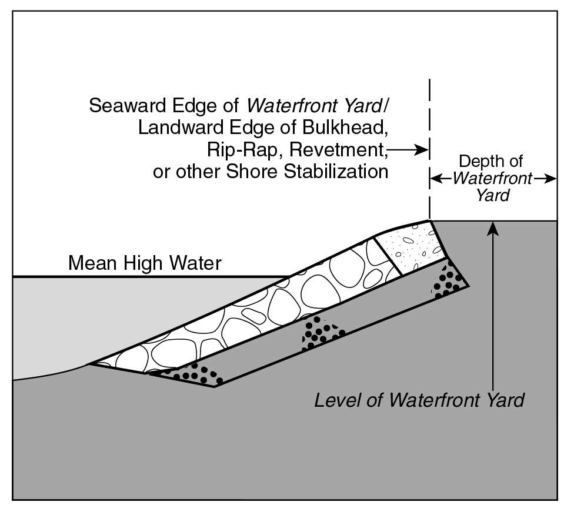
WATERFRONT YARD AT STABILIZED SHORELINE (62-332a.1)
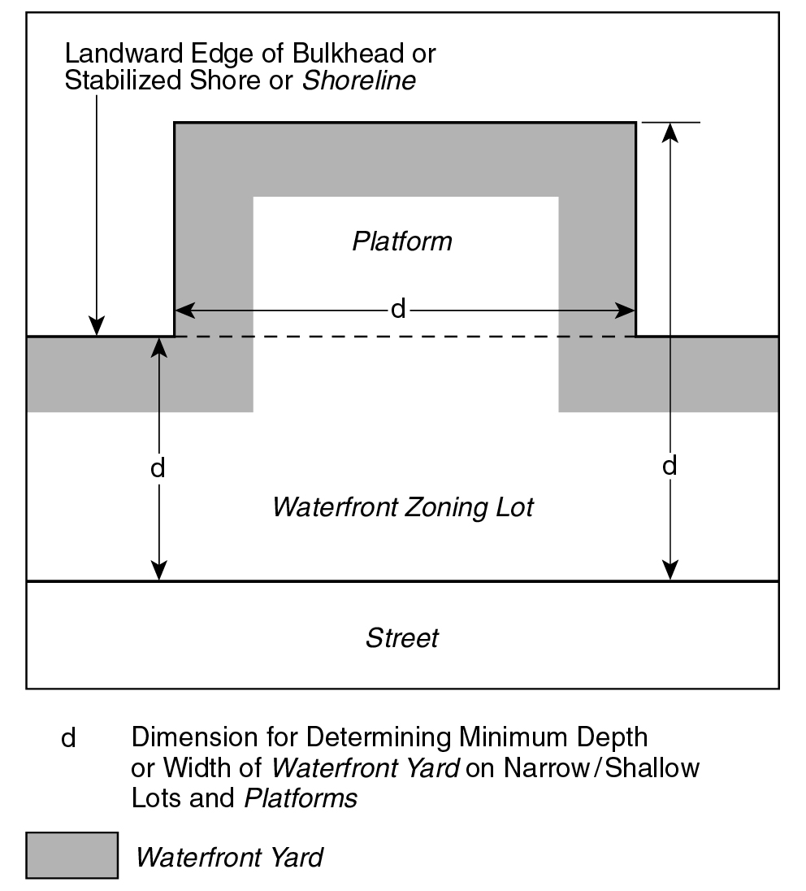
WATERFRONT YARD (62-332a.2)
- The level of the waterfront yard
The level of required waterfront yards shall not be higher than the elevation of the top of the adjoining existing bulkhead, existing stabilized natural shore or mean high water line, as applicable, except that natural grade level need not be disturbed in order to comply with this requirement.
The level of the portion of a waterfront yard on a platform shall not be more than three feet higher than the abutting level of the non-platformed portion of the waterfront yard, of which it is the continuation, except that the level of a platform existing on October 25, 1993 need not be altered in order to comply with this requirement.
However, the level of the waterfront yard may be modified as follows:
- For zoning lots not required to provide waterfront public access areas pursuant to Section 62-52 (Applicability of Waterfront Public Access Area Requirements), the level of waterfront yards may be raised either to:
- the flood-resistant construction elevation or six feet above shoreline, whichever is higher; or
- a higher elevation, provided that the waterfront yard complies with the applicable provisions of paragraph (b)(2) of this Section, depending on the condition of the shared lot line.
- For zoning lots with required waterfront public access areas pursuant to Section 62-52, the level of waterfront yards may be raised to a higher elevation, provided that such elevated waterfront yard complies with the following provisions, depending on the condition of the adjacent zoning lot :
- where a waterfront yard adjoins a street, public park, or waterfront public access area on an adjacent zoning lot, the level of the waterfront yard within 15 feet of the shared lot line shall not exceed three feet above the level of the adjoining street, public park or waterfront public access area, and the width of the circulation path at the lot line is greater than that required by paragraph (a) of Section 62-62 (Design Requirements for Shore Public Walkways and Supplemental Public Access Areas). However, the elevation of the required circulation path shall be no higher than the grade of the adjacent street, public park, or zoning lot at the lot line.
- where a waterfront yard does not adjoin a street, public park, or waterfront public access area on an adjacent zoning lot, the level of the waterfront yard at the shared lot line, may exceed the level of the adjacent zoning lot:
- up to a maximum of six feet above the shoreline; or
- to a level higher than six feet above the shoreline, where the Chairperson of the City Planning Commission certifies, pursuant to Section 62-811 (Waterfront public access and visual corridors) that:
(1) the applicant has submitted a plan indicating the proposed level of the waterfront yard at the lot line of adjacent zoning lots and the level of such adjacent zoning lots adjacent to the waterfront yard; and
(2) submitted proof of a legal instrument, executed by the fee owner of any zoning lot that is adjacent to the subject waterfront yard, and binding upon all necessary parties in interest, that the owner will develop a waterfront public access area with a grade that meets that of the adjacent zoning lots based on the proposed level of the subject waterfront yard as reflected in the submitted plan. Such legal instrument shall run with the land and shall be recorded against all affected parcels of land.
- Permitted obstructions
No building or other structure shall be erected above the lowest level of a waterfront yard. Permitted obstructions in waterfront yards in all districts shall include permitted obstructions as listed in Sections 23-311 (Permitted obstructions in all yards, courts and open areas), 23-312 (Additional permitted obstructions generally permitted in all yards), and 62-611, except that enclosed accessory off-street parking spaces and walls exceeding four feet in height shall not be permitted. Where any power systems, including, but not limited to, generators, solar energy systems, fuel cells, batteries and other energy storage systems, are located in a front yard, the entire width of the portion of such equipment facing a street, whether open or enclosed, shall be fully screened by vegetation.
In addition, the following rear yard obstructions shall not be permitted except when accessory to single- or two-family residences in detached, semi-detached or zero lot line buildings:
Balconies, unenclosed;
Greenhouses, non-commercial, accessory;
Parking spaces, off-street, open or enclosed, accessory;
Swimming pools, accessory;
Terraces or porches, open.
Official NYC Planning source
62-333 Maximum lot coverage in Residence Districts
Last amended 2024-12-05
R1 R2 R3 R4 R5 R6 R7 R8 R9 R10 R11 R12
In the districts indicated, the maximum lot coverage for residential buildings, community facility buildings or the portions of buildings containing residential or community facility uses shall be the applicable residential lot coverage set forth in Section 23-36 (Maximum Lot Coverage), inclusive. For the purpose of applying such regulations, the regulations for interior lots or through lots shall apply, and additional limitations for large sites need not apply.
Any portion of a building at any height up to but not exceeding 23 feet above the base plane may be excluded in determining the percent of lot coverage set forth in this Section.
Additionally, for buildings in R6 through R12 Districts that exceed the maximum base height listed in Section 62-343 (Height and setback regulations in other medium- and high-density districts), the minimum lot coverage shall be 30 percent of the lot area at a height of 20 feet. For the purposes of determining this requirement, the lot area of waterfront zoning lots shall be deemed to be the area of the zoning lot landward of the shoreline. In the event the site plan involves construction on only a portion of the zoning lot, sufficient calculations shall be provided to show that such partial construction does not preclude compliance with the minimum lot coverage requirements of this Section at the time the site is fully developed.
In Special Mixed Use Districts, lot coverage requirements shall not apply to community facility uses.
Official NYC Planning source
62-334 Maximum lot coverage for residences in Commercial Districts
Last amended 2024-12-05
In Commercial Districts, for residential buildings, or the residential portion of mixed buildings, the maximum lot coverage regulations of Section 62-333 (Maximum lot coverage in Residence Districts) shall apply.
Official NYC Planning source
62-341 Height and setback regulations in lower density districts
Last amended 2024-12-05
R1 R2 R3 R4 R5 C3 C4-1 C8-1 M1-1
In the districts indicated, and for C1 or C2 Districts mapped within an R1 through an R5 District, all developments on portions of a zoning lot landward of the shoreline or on platforms shall be subject to the underlying height and setback regulations, except as modified by the provisions of this Section.
- Modified base height and building heights in certain districts
The maximum base height and maximum building height for buildings on waterfront blocks for certain districts shall be as set forth in the following table:
MAXIMUM BASE HEIGHT AND MAXIMUM BUILDING HEIGHT FOR RESIDENTIAL BUILDINGS ON WATERFRONT BLOCKS
|
District
|
Maximum Base Height (in feet)
|
Maximum Height of Buildings or other Structures (in feet)
|
|
R1 R2
C1 or C2 mapped within R1 or R2
C8-1 M1-1
|
35
|
35
|
|
R3
C1 or C2 mapped within R3
C3
|
35
|
45
|
|
R4
C1 or C2 mapped within R4
|
45
|
55
|
|
R5
C1 or C2 mapped within R5
C4-1
|
55
|
65
|
- Additional regulations
- Above the maximum base height, a building shall be set back at least:
- 15 feet from a narrow street line;
- 10 feet from a wide street line; or
- 30 feet from the boundary of a shore public walkway. Wherever a supplemental public access area is provided as a widened shore public walkway, such widened area shall be included in the initial setback distance.
Dormers provided in accordance with Section 23-413 shall be permitted within any setback area, provided that the depth of encroachment of a dormer facing the shore public walkway shall not exceed 15 feet;
- Any portion of a predominantly community facility building that exceeds a height of 35 feet shall be set back at least 25 feet from a front yard line or street line, where applicable, and no portion of such building shall exceed a height of 60 feet. However, within a large-scale community facility development, for portions of a building that are located at least 100 feet from a street line and, on a waterfront zoning lot, 100 feet from a waterfront yard, the maximum height shall not exceed 100 feet.
- All structures other than buildings shall be limited to a height of 35 feet, except that in C4-1, C8-1 and M1-1 Districts, freestanding wind energy systems shall be permitted to a height of 85 feet, as measured from the base plane to the highest point of the wind turbine assembly.
Official NYC Planning source
62-342 Height and setback regulations in medium- and high-density districts with a letter suffix
Last amended 2024-12-05
For all developments on portions of a zoning lot landward of the shoreline or on platforms within R6 through R12 Districts with a letter suffix or Commercial Districts mapped within or with a residential equivalence of an R6 through R12 District with a letter suffix, the applicable underlying height and setback regulations of Section 23-43, inclusive, shall apply.
Official NYC Planning source
62-343 Height and setback regulations in other medium- and high-density districts
Last amended 2024-12-05
For those districts not otherwise governed by the provisions of Sections 62-341 (Height and setback regulations in lower density districts) or 62-342 (Height and setback regulations in medium- and high-density districts with a letter suffix), the underlying height and setback regulations are applicable for all developments on portions of a zoning lot landward of the shoreline or on platforms, except as modified by the provisions of this Section.
- Modified base height and building heights
For all buildings, the base heights, transition heights, and building heights for buildings on waterfront blocks shall be as set forth in the following table. Additional regulations are set forth in paragraph (b) for buildings containing residences and in paragraph (c) for all other buildings. For all buildings, tower regulations are set forth in paragraph (d).
MAXIMUM BASE HEIGHT, TRANSITION HEIGHTS, AND MAXIMUM BUILDING HEIGHT - FOR OTHER DISTRICTS
|
District
|
Maximum Base Height (in feet)
|
Transition Zone
|
Maximum Height of Buildings or other Structures (in feet)
|
|
Maximum Transition Height Tier 1 (in feet)
|
Maximum Transition Height Tier 2 (in feet)
|
|
R6-2
C1 or C2 mapped within R6-2
|
55
|
75
|
95
|
195
|
|
R6 R6-1
C1 or C2 mapped within R6 or R6-1
C7-1
C8-2 C8-3
M1-2 M1-4 M1-1A
M2-1 M2-3 M2-1A
M3-1 M3-2 M3-1A
|
65
|
95
|
125
|
255
|
|
R7-1 R7-2
C1 or C2 mapped within R7-1 or R7-2
C7-2
M1-2A
M2-2A
M3-2A
|
85
|
115
|
155
|
315
|
|
R7-3
C1 or C2 mapped within R7-3
C7-3
C8-4
M1-3 M1-5 M1-3A
M2-2 M2-4 M2-3A
|
95
|
145
|
185
|
375
|
|
R8
C1 or C2 mapped within R8
C4-8
C6-1 C6-2
C7-4
M1-4A
M2-4A
|
105
|
145
|
215
|
435
|
|
R9
C1 or C2 mapped within, or with a residential equivalent of an R9
C4-9 C6-3
C7-5 C7-6
M1-5A M1-6A
|
135
|
185
|
285
|
N/A
|
|
R9-1
C1 or C2 mapped within an R9-1
|
155
|
215
|
315
|
N/A
|
|
R10
C1 or C2 mapped within, or with a residential equivalent of an R10
C4-6 C4-7
C5
C6-4 C6-5 C6-6 C6-7 C6-8 C6-9
C7-7
M1-6 M1-7A
|
155
|
235
|
355
|
N/A
|
|
R11
C1 or C2 mapped within R11
C4-11
C6-11
C7-8
M1-8A
|
155
|
325
|
405
|
N/A
|
|
R12
C1 or C2 mapped within R12
C4-12
C6-12
C7-9
M1-9A
|
155
|
395
|
495
|
N/A
|
- Additional regulations for buildings containing residences
For buildings containing residences, the following shall apply:
- for street walls not facing the shore public walkway or supplemental public access areas:
- the street wall location provisions of paragraph (b) of Section 23-431 shall apply, and such street walls shall extend to a minimum base of at least 35 feet, or the height of the building, whichever is less; and
- at a height not lower than the minimum base height or higher than the maximum base height, setbacks shall be provided in accordance with the provisions of Section 23-433.
- for portions of buildings facing the shore public walkway or supplemental public access areas:
- no street wall location provisions shall apply;
- at a height not higher than the maximum base height, a setback, with a minimum depth of 30 feet shall be provided from the boundary of the shore public walkway. Wherever a supplemental public access area is provided as a widened shore public walkway, such widened area shall be included in the setback distance;
- dormers shall be permitted in such setback, in accordance with Section 23-413, except that the depth of such dormer shall not exceed 15 feet;
- where a street wall is located within 50 feet of the shoreline, the maximum base height shall not exceed a height of 85 feet; and
- an amount of building frontage equivalent to at least 25 percent of the aggregate width of street walls facing the shore public walkway shall either be provided as open area in an outer court or shall have a reduced base height that does not exceed two-thirds of the height of the permitted maximum base height;
![]()
- along all frontages, after the required setback, buildings may rise to the maximum transition zone height set forth in the table, which consists of maximum Tier 1 and Tier 2 transition heights. Where the gross area of any story within the transition zone exceeds 10,000 square feet, exclusive of the square footage contained in any permitted dormers, one or more setbacks shall be provided at a height not higher than the maximum Tier 1 transition height. Such setbacks may be of any depth, but shall reduce the gross area of stories such that the highest gross area of any story in the Tier 2 transition zone is at least 10 percent less than that of the highest gross area of any story in the Tier 1 transition zone; and
![]()
- any portion of a building that exceeds the maximum transition height shall be considered a tower and shall be subject to the provisions of paragraph (d) of this Section.
- Additional regulations for other buildings
For buildings that do not contain residences, the following shall apply:
- Above the maximum base height, a building shall be set back at least:
- 15 feet from a narrow street line;
- 10 feet from a wide street line; or
- 30 feet from the boundary of a shore public walkway. Wherever a supplemental public access area is provided as a widened shore public walkway, such widened area shall be included in the setback distance.
Dormers provided in accordance with paragraph (b) of Section 23-413 shall be permitted within any setback area, provided that the depth of encroachment of a dormer facing the shore public walkway shall not exceed 15 feet;
- after the required setback, buildings may rise to the maximum transition height;
- any portion of a building that exceeds the maximum transition height shall be considered a tower and subject to the provisions of paragraph (d) of this Section.
- Tower regulations
Any portion of a building that exceeds the maximum transition height shall be subject to the following tower provisions:
- The maximum width of any story of a tower that faces a shoreline shall not exceed 100 feet. Such width shall be measured by inscribing within a rectangle the outermost walls at the level of each tower story. Any side of such rectangle from which perpendicular lines may be drawn to a shoreline, regardless of any intervening structures, properties or streets, shall not exceed 100 feet. However, such limitation may be modified as follows:
- where a tower faces two or more shorelines, such restriction shall apply only to one face, and the maximum length along other frontages shall not exceed 130 feet frontage (See illustration);
- where the average depth of a zoning lot is less than 200 feet, the maximum width of a story shall not exceed 130 feet.
![]()
- for residential stories within a tower, the following shall apply:
- the tower footprint shall not exceed a gross area of 10,000 square feet, except that where the overall height of a tower exceeds two-thirds of the overall maximum permitted height set forth in the table, a portion of tower stories equivalent to at least one-third of the height of the building, excluding any penthouse provided as a permitted obstruction, shall have a footprint that does not exceed 8,500 square feet. Dormers need not be included in the calculation of such maximum gross area; and
- where two or more towers are provided on a zoning lot, there shall be at least 50 feet in difference in height between any two immediately adjacent towers.
![]()
Official NYC Planning source
62-344 Developments on piers
Last amended 2024-12-05
In all districts, the underlying height and setback regulations shall be inapplicable to developments on piers. In lieu thereof, the provisions of this Section shall apply.
The base plane of a pier shall be the elevation of the finished surface of the pier, below which no portion of a building or other structure penetrates, except for the supporting structure, plumbing or utility lines. In the event portions of a pier have different surface elevations, the surface elevation of at least 50 percent of the pier shall be used to establish the base plane.
The height of all buildings or other structures on piers shall be measured from the base plane. For buildings with pitched roofs, maximum building height shall be measured to the midpoint of such pitched roof.
The obstructions permitted pursuant to Sections 23-41, 24-51, 33-42 or 43-42 shall apply. In addition, a dormer may penetrate a required setback area above a height of 30 feet provided the aggregate width of dormers on any given building wall does not exceed 50 percent of the width of such building wall.
- Height and setback regulations on piers
The height of a building or other structure on a pier shall not exceed 30 feet. However, where a setback at least 15 feet deep is provided, the maximum height of a building or other structure shall be 40 feet. Such required setback shall be provided at a minimum height of 25 feet and a maximum height of 30 feet, and may be reduced to 10 feet in depth along any portion of the building or other structure fronting on an open area of the pier having a dimension of at least 40 feet measured perpendicular to such fronting portion. In addition, wind energy systems shall be allowed, provided such a system does not exceed a height of 85 feet, as measured from the base plane to the highest point of the wind turbine assembly or, when located above a roof of the building, a height of 55 feet, as measured to the highest point of the wind turbine assembly, whichever is higher.
- Building width and spacing regulations on piers
The maximum length or width of any building or other structure on a pier shall be 200 feet. The provisions of Section 23-371 (Distance between buildings) shall be inapplicable on piers. In lieu thereof, the minimum distance on a pier between any two buildings or other structures that do not abut shall be 100 feet. However, such limitations shall not apply to any building or other structure, no portion of which exceeds 30 feet in height.
Permitted obstructions above the base plane within such required open areas between buildings or other structures shall be limited to those allowed above the lowest level of a visual corridor pursuant to Section 62-513 (Permitted obstructions in visual corridors), except that freestanding accessory buildings or other structures shall also be permitted provided they do not exceed a height of 30 feet and a total area, in aggregate, of 900 square feet. A minimum spacing of 15 feet shall be provided between such accessory buildings or other structures and any other building or other structure on the pier.
- Modification of pier bulk regulations
Modification of the regulations of this Section involving the height and setback or width and spacing of buildings or other structures on piers shall only be allowed by special permit or authorization of the City Planning Commission pursuant to Sections 62-835 (Developments on piers or platforms), 74-711 (Landmark preservation in all districts), 74-79 (Transfer of Development Rights From Landmark Sites) or 75-24 (Bulk Modifications Associated With a Transfer of Development Rights From Landmark Sites), as applicable.
Official NYC Planning source
62-345 Developments on floating structures
Last amended 2024-12-05
In all districts, the underlying height and setback regulations shall be inapplicable to developments on floating structures, except for WD uses in C8 and Manufacturing Districts. In lieu thereof, the provisions of this Section shall apply.
Base plane shall be inapplicable for floating structures. Height shall be measured from the water line of the floating structure to the highest point of the roof or uppermost open deck. However, the following obstructions are permitted to penetrate a height limit:
Chimneys, flues or stacks;
Flagpoles, aerials or masts;
Parapet walls or safety enclosures, not more than four feet high; and
Wire, chain link or other transparent fences.
Developments permitted as-of-right pursuant to Section 62-25 shall not exceed a height of 23 feet. Developments on floating structures pursuant to the special permit provisions of Section 62-834 shall not exceed the height limits set forth in Column A of the table in this Section, except for navigational vessels being repurposed as floating structures in accordance with such special permit provisions. Such repurposed vessels shall be subject to the height limits set forth in Column B of the table.
HEIGHT LIMITS FOR FLOATING STRUCTURES
|
|
|
|
Column A
|
Column B
|
|
Residence District
|
Commercial District
|
Manufacturing District
|
Maximum Structure Height
(in feet)
|
Maximum Height of Repurposed Vessels
(in feet)
|
|
R1 thru R5
|
C1 or C2 mapped in R1 thru R5
C3
|
-
|
23
|
40
|
|
R6
|
C1 or C2 mapped in R6
C4-1
C7-1 C7-2
C8-1 C8-2 C8-3
|
M1-1 M1-2
M1-4
M1-1A M1-2A
M2-1 M2-3
M2-1A M2-2A
M3-1 M3-2
|
40
|
60
|
|
R7 R8
|
C1 or C2 mapped in R7 or R8
C1-6 C1-7
C2-6
C4-2 C4-3 C4-4 C4-5
C6-1 C6-2
C7-3 C7-4
C8-4
|
M1-3 M1-5
M1-3A M1-4A
M2-2 M2-4
M2-3A M2-4A
|
50
|
70
|
|
R9 R10 R11 R12
|
C1 or C2 mapped in R9 thru R12
C1-8 C1-9
C2-7 C2-8
C4-6 C4-7 C4-8 C4-9
C4-11 C4-12
C5
C6-3 C6-4 C6-5 C6-6 C6-7 C6-8 C6-9
C6-11 C6-12
C7-5 C7-6 C7-7 C7-8 C7-9
|
M1-6
M1-5A M1-6A
M1-7A M1-8A M1-9A
|
60
|
150
|
Official NYC Planning source
62-351 Ground floor streetscape
Last amended 2024-12-05
For the purposes of this Section, “ground floor level” shall mean the floor of a building, the level of which is located within five feet of the finished level of the adjacent sidewalk.
For street walls that are more than 50 feet in width and within 50 feet of a waterfront public access area or street, the following rules shall apply:
- at least 50 percent of the width of such street walls shall be occupied by floor area at the ground floor level; and
- where such street walls do not contain windows with sill levels lower than four feet above the adjacent sidewalk for a continuous distance of at least 30 feet, such street walls shall be articulated with rustication or decorative grills, or screened with plant material, to a minimum height of four feet.
Parking garages that occupy the ground floor frontage along any street or private drive which is also an upland connection shall be screened in accordance with the planting requirements of paragraph (a)(7)(iii) of Section 62-655.
Official NYC Planning source
62-361 Special floor area regulations
Last amended 2026-07-16
- R6 R7 R8
In the districts indicated, the maximum residential floor area ratio shall be as follows:
- For zoning lots located in Mandatory Inclusionary Housing areas, the maximum residential floor area ratio shall be as set forth in Section 23-22 (Floor Area Regulations for R6 Through R12 Districts); or
- For zoning lots located outside of Mandatory Inclusionary Housing areas, the maximum residential floor area ratio shall be as set forth in the following table. Separate maximum residential floor area ratios are set forth for zoning lots containing standard residences and zoning lots containing UAP developments or qualifying senior housing.
MAXIMUM FLOOR AREA RATIO FOR R6-R8 DISTRICTS
|
District
|
Standard residences
|
UAP development or
qualifying senior housing
|
|
R6
|
2.54
|
3.05
|
|
R7-3
|
4.17
|
5.00
|
|
R8
|
5.42
|
6.50
|
- Buildings used for accessory off-street parking spaces
Within Waterfront Access Plan BK-1, the floor area of a building shall not include floor space used for accessory off-street parking spaces provided in any story located not more than 33 feet above the height of the base plane.
- Special regulations for Parcels 4 and 5e within Waterfront Access Plan BK-1
On Parcels 4 and 5e within Waterfront Access Plan BK-1, in the event that a property is developed as a public park, such property shall continue to be considered part of a zoning lot for the purposes of generating residential floor area based on the residential floor area ratio applicable to the property prior to its development as a public park. In no event shall the floor area generated by the property developed as a public park be utilized within the public park, but may be utilized pursuant to Section 62-362 (Special floor area, lot coverage and residential density distribution regulations). Floor space within any structure constructed pursuant to an agreement with the Department of Parks and Recreation within such public park shall be exempt from the definition of floor area.
- Special regulations for Parcel 5d within Waterfront Access Plan BK-1
On Parcel 5d within Waterfront Access Plan BK-1, up to 120,000 square feet of floor space within a public school, constructed in whole or in part pursuant to agreement with the New York City School Construction Authority and subject to the jurisdiction of the New York City Department of Education, shall be exempt from the definition of floor area and from lot coverage requirements for the purposes of calculating the permitted floor area ratio and lot coverage for community facility uses and the maximum floor area ratio and total permitted lot coverage of the zoning lot.
Official NYC Planning source
62-362 Special floor area, lot coverage and residential density distribution regulations
Last amended 2024-12-05
Within any parcel identified in Section 62-931 (Waterfront Access Plan BK1: Greenpoint-Williamsburg), and with respect to any such parcels that are adjacent to each other and that are under single-fee ownership and with respect to which each party having any interest therein is a party in interest (as defined in paragraph (e) of the definition of a zoning lot in Section 12-10) or with respect to which each party in interest (as defined in paragraph (f)(4) of the definition of a zoning lot in Section 12-10) has executed a declaration declaring that the properties are to be developed as a single parcel or has waived its right to execute such declaration, the total lot coverage permitted pursuant to Section 62-333, the total floor area permitted pursuant to Sections 62-361 or 62-362 and the residential density permitted pursuant to Section 23-50, may be located anywhere within such parcel or between such parcels without regard to zoning lot lines or district boundaries provided that such location of floor area, lot coverage or residential density complies with Sections 62-31 (Bulk Computations on Waterfront Lots) and 62-34 (Height and Setback Regulations on Waterfront Blocks), as modified by Sections 62-363 and 32-364 (Special height and setback regulations)
Official NYC Planning source
62-363 Special height and setback regulations
Last amended 2026-07-16
Within Waterfront Access Plan BK-1, the provisions of Section 62-30 (SPECIAL BULK REGULATIONS) are modified, as follows:
- The maximum base heights of paragraph (a) of Section 62-343 (Height and setback regulations in other medium- and high-density districts) shall be modified in R6 Districts to permit a maximum base height of 65 feet or six stories, whichever is less.
- The maximum building heights of Section 62-343 shall not apply. In lieu thereof, the provisions of this paragraph, (b), shall apply:
- The maximum building height in an R6 District shall be 65 feet or six stories, whichever is less, within 100 feet of Commercial Street, West Street, Dupont Street, Franklin Street and Kent Avenue. However, for buildings or other structures with qualifying affordable housing or qualifying senior housing the maximum building height shall be 75 feet.
Beyond 100 feet of such streets and any other portions of an R6 District, the maximum building height shall be 110 feet. In R8 Districts, the maximum building height shall be 190 feet, except that for zoning lots developed with multiple buildings or portions of buildings that exceed a height of 180 feet, not more than half of such buildings or portions of buildings may exceed a height of 190 feet, to a maximum building height of 290 feet.
- For zoning lots containing qualifying affordable housing or qualifying senior housing, the height limits of an R8 District set forth in paragraph (b)(1) of this Section may be exceeded, provided that:
- outside of Mandatory Inclusionary Housing areas, the maximum building height shall be 260 feet. However, for zoning lots developed with multiple buildings or portions of buildings that exceed a height of 200 feet, not more than half of such buildings or portions of buildings may exceed a height of 260 feet to a maximum building height of 360 feet; or
- in Mandatory Inclusionary Housing areas, the maximum building height shall be 500 feet. However, for zoning lots developed with multiple buildings or portions of buildings that exceed a height of 440 feet, not more than half of such buildings or portions of buildings may exceed a height of 500 feet to a maximum building height of 600 feet.
- The maximum building height may be exceeded by a penthouse portion of a building with a height of not more than 40 feet, only if the gross area of any story within such portion has a lot coverage of at least 50 percent and not more than 85 percent of the highest story that is located entirely below the applicable maximum building height. Such reduced lot coverage shall be achieved by one or more setbacks on each face of the penthouse portion, where at least one setback on each face has a depth of at least four feet and a width that, individually or in the aggregate, is equal to at least 10 percent of the width of such respective face. For the purposes of paragraphs (b)(1) and (b)(2) of this Section, the penthouse portion shall have four faces, with each face being the side of the rectangle within which the outermost walls of the highest story located entirely below the maximum building height have been inscribed. The required setbacks shall be measured from the outermost walls of the building facing each penthouse portion face. Required setback areas may overlap.
- The provisions of paragraph (a) of Section 62-322 shall not apply.
- The provisions of paragraph (d)(2)(i) of Section 62-343 shall not apply. In lieu thereof, each residential story of a building located entirely above a height of 85 feet shall not exceed a gross area of 8,100 square feet in an R6 District and 11,000 square feet in an R8 District. However, in R8 Districts, for developments that provide qualifying affordable housing or qualifying senior housing pursuant to Section 62-361, each residential story of such building located entirely above a height of 100 feet shall not exceed a gross area of 11,000 square feet. If such residential story of a building is located partially in an R6 District and partially in an R8 District, it shall not exceed a gross area of 11,000 square feet and any portion located in an R6 District shall not exceed a gross area of 8,100 square feet.
- The provisions of paragraph (d)(1) of Section 62-343 shall not apply. In lieu thereof, the outermost walls of each story located entirely above a height of 85 feet shall be inscribed within a rectangle. The maximum length of any side of such rectangle that is parallel or within 45 degrees of being parallel to Kent Avenue, West Street or Commercial Street, whichever is closest, shall not exceed 110 feet. The maximum length of any other side of such rectangle shall not exceed 170 feet, except that for buildings where qualifying affordable housing or qualifying senior housing is provided pursuant to Section 62-361, such maximum length of 170 feet shall apply above a height of 100 feet.
- The provisions of Section 62-351 shall not apply. In lieu thereof, all off-street parking spaces located within 50 feet of a street, a visual corridor containing a private road and a shore public walkway, upland connection or supplemental public access area and which are located on a story that is above the base plane, shall be within facilities that are located behind commercial, community facility or residential floor space so that no portion of such parking facility, other than entrances and exits, is visible from such streets, visual corridors or publicly accessible open spaces. Such floor space shall have a minimum depth of 25 feet. Up to five percent of such floor space may be used for mechanical equipment provided that no floor space used for mechanical equipment is located within 15 feet of the street wall of the building below a height of 15 feet above the base plane, and that no exhaust vents are located on the street wall of the building below a height of 15 feet above the base plane. The remainder of such floor space shall be used for commercial, community facility or residential floor area. Seventy percent of the surface area of the facade of a facility containing parking spaces, which are not otherwise required to be behind such floor area, shall be composed of the same materials as the facade of the building in which it is located.
- Any roof of a facility containing off-street parking spaces, not otherwise covered by a building, which is larger than 400 square feet, shall be landscaped. Up to five percent of such roof area may be used for mechanical equipment, provided that such mechanical equipment is screened from view by a fence which is at least 75 percent opaque or by at least three feet of dense planting. Up to 25 percent of such roof area may be accessible solely from an adjacent dwelling unit and the remaining roof area shall be accessible for the recreational use of the occupants of the building in which it is located. Hard surfaced areas shall not cover more than 60 percent of such roof area.
- At least 70 percent of the width of the street wall of a building or buildings fronting on a portion of a street, upland connection or visual corridor that is not adjacent to a shore public walkway or supplemental public access area shall be located within eight feet of such street line and extend to a minimum height of 30 feet.
- In addition to the applicable underlying street tree planting requirements, all extensions which increase the existing floor area by more than 10 percent, shall provide street trees in accordance with Section 26-41.
- On Parcel 5d, the maximum base height and maximum building height provisions of paragraph (a) of Section 62-343 shall be modified for public schools constructed in whole or in part pursuant to an agreement with the New York City School Construction Authority and subject to the jurisdiction of the New York City Department of Education, as follows:
- the maximum base height provisions shall not apply; and
- the maximum building height provisions shall be modified to permit a maximum building height of 100 feet or six stories, whichever is less.
Official NYC Planning source
62-364 Special yard regulations
Last amended 2024-12-05
On Parcel 5d within Waterfront Access Plan BK-1, the yard provisions of Section 24-36 (Minimum Required Rear Yards) shall not apply to public schools constructed in whole or in part pursuant to an agreement with the New York City School Construction Authority and subject to the jurisdiction of the New York City Department of Education.
Official NYC Planning source
62-365 Special bulk regulations for zoning lots adjacent to public parks
Last amended 2024-12-05
On Parcel 12b within Waterfront Access Plan BK-1 in Section 62-931, any lot line that coincides with the boundary of a public park shall be considered to be a street line of a wide street for the purposes of applying all bulk regulations of this Resolution, except that the provisions of paragraphs (g) and (h) of Section 62-363 (Special height and setback regulations) shall not apply.
In lieu thereof, the street wall of any building fronting on a lot line that coincides with the boundary of a public park shall be located at least eight feet from such lot line, except that any portion of a building containing a legally required window shall be located at least 28 feet from such lot line. No balconies shall be permitted on any street wall of such building facing a public park.
In addition, a wall, or if a wall is prohibited by the New York City Building Code, a fence, shall be provided along the lot line that coincides with the boundary of a public park. Such wall or fence shall be a minimum of six feet in height, except that any portion of such wall or fence facing a ground floor level commercial use in a building shall be a minimum of 10 feet in height. However, if the Commissioner of Buildings determines that such wall or fence located in a Residence District is subject to the provisions of Building Code Section 3112.1, exceptions (2) or (3), such wall or fence shall be a minimum of eight feet in height along the boundary of a public park.
At least 90 percent of the width of the street wall of a building or buildings fronting on Kent Street shall be located within eight feet of the street line and extend to a minimum height of 30 feet.
Official NYC Planning source
62-411 Accessory residential roof parking
Last amended 2011-02-02
On waterfront blocks, parking spaces accessory to residential uses may be located on the roof of a building, or portion thereof, that does not contain dwelling units or rooming units, provided that:
(a) the roof level is not higher than 23 feet above the base plane;
(b) the perimeter of the roof is enclosed by a four foot high parapet wall or other enclosure at least 50 percent opaque;
(c) trees are provided in accordance with Section 62-655 (Planting and trees) at the rate of one tree for each 10 parking spaces for parking areas at grade;
(d) if on the roof of a portion of a building containing dwelling units or rooming units, the sill level of any dwelling unit or rooming unit windows opening onto such roof area is at least 10 feet above the roof and no parking spaces or vehicular aisles are located within 10 feet of a wall with dwelling unit or rooming unit windows; and
(e) no flood lighting shall be permitted and any lighting shall be directed away from any residential windows on the same or an adjacent zoning lot.
Official NYC Planning source
62-412 Accessory residential off-site parking
Last amended 2011-02-02
For developments on waterfront blocks, the provisions of Sections 25-52 and 36-42 (Off-site Spaces for Residences) shall be modified so as to permit all permitted or required accessory spaces to be located on a separate zoning lot, provided that:
(a) such off-site facility is not located in an R1, R2, R2X, R3-1, R3A, R3X, R4-1, R4A or R4B District;
(b) if such off-site facility is located in other R3, R4 or R5 Districts, such off-site facility is contiguous or would be contiguous except for its separation by a street or street intersection to the zoning lot occupied by the residences to which the spaces are accessory;
(c) if such off-site facility is located in other than a R3, R4 or R5 District, all parking spaces shall not be further than 1,000 feet from the nearest boundary of the zoning lot occupied by the residences to which they are accessory;
(d) in R3, R4 and R5 Districts, such off-site facility shall be an open lot not exceeding 12,000 square feet. In other districts, parking structures shall be permitted and the maximum size of the facility shall be governed by the provisions of Sections 25-12 and 36-12 (Maximum Size of Accessory Group Parking Facilities);
(e) in Residence Districts, no parking spaces are located within a required front yard or within four feet of any lot line. Front yards shall be planted and screening shall be provided along any lot lines in accordance with Section 62-655 (Planting and trees);
(f) in all districts, lighting shall be directed away from adjoining buildings containing residences. In no event shall flood lighting be permitted for off-site facilities in Residence Districts; and
(g) in all districts, trees shall be provided in accordance with Section 62-655 at the rate of one tree for each 10 parking spaces for on-site facilities within a waterfront block.
Official NYC Planning source
62-421 Accessory non-residential roof parking
Last amended 2011-02-02
On waterfront blocks, parking spaces accessory to non-residential uses may be located on the roof of a non-residential building or a non-residential portion of a building containing residential use, provided that they comply with Section 62-411 (Accessory residential roof parking), paragraphs (a) through (e).
Official NYC Planning source
62-422 Accessory non-residential off-site parking
Last amended 2009-04-22
For developments on waterfront blocks, the provisions of Sections 36-43 (Off-site Spaces for Commercial or Community Facility Uses) and 44-32 (Off-site Spaces for All Permitted Uses) shall be modified to permit such spaces to be within 1,000 feet of the zoning lot to which they are accessory.
Official NYC Planning source
62-451 Parking spaces on floating structures
Last amended 2009-04-22
No accessory parking spaces shall be located on a floating structure except in conjunction with a special permit pursuant to Section 62-834 (Uses on floating structures).
Official NYC Planning source
62-452 Off-site parking in public parking facilities
Last amended 2009-04-22
Notwithstanding the provisions of Section 12-10 (DEFINITIONS), a public parking garage or public parking lot may include permitted or required accessory off-street parking spaces which are accessory to uses on a separate zoning lot, provided that:
(a) the uses to which they are accessory are on a zoning lot within a waterfront block;
(b) the entrance to the facility is not further than 1,000 feet from the nearest boundary of the zoning lot occupied by the uses to which it is accessory; and
(c) the ownership requirement for such accessory off-street parking spaces is satisfied by an interest commensurate with the interest of the principal use.
Whenever accessory parking spaces are provided off-site within a public parking facility, the number of spaces and the use to which they are accessory shall be recorded on the certificates of occupancy for both the principal use and the public parking facility.
Official NYC Planning source
62-453 Screening requirements for parking facilities on waterfront blocks
Last amended 2024-06-06
- Open parking areas on waterfront blocks shall be screened from all adjoining zoning lots pursuant to Section 62-655 (Planting and trees), paragraph (a)(7)(iii), or from a street or an upland connection pursuant to Section 37-921 (Perimeter landscaping). Screening may be interrupted only by vehicular or pedestrian entrances.
- All parking garages that occupy the ground floor frontage along any street or upland connection shall be screened in accordance with the planting requirements of Section 62-655.
- For parking garages on piers, at least 50 percent of the perimeter wall area on all sides fronting on public access areas, up to a height of 15 feet, shall consist of clear or lightly tinted transparent material or latticework.
- The screening requirements shall not apply to accessory parking for WD uses or other uses listed under Use Groups IV(B), IX or X, when located in C8 or Manufacturing Districts, except as set forth in the applicable district regulations.
Official NYC Planning source
62-454 Off-street parking in large-scale general developments in Community District 1 in Queens
Last amended 2013-10-09
For large-scale general developments within the Hallets Point Peninsula in Community District 1, in the Borough of Queens, floor area shall not include floor space used for off-street parking spaces provided in any story located not more than 33 feet above the base plane, provided that where such facilities front upon streets and waterfront public access areas, such spaces are within facilities that are located behind commercial, community facility or residential floor space so that no portion of such parking facility, other than entrances and exits, is visible from such street or waterfront public access areas. Such floor space shall have a minimum depth of 18 feet.
Official NYC Planning source
62-461 Screening requirements for loading facilities on waterfront blocks
Last amended 2009-04-22
All open off-street loading berths on waterfront blocks shall be screened from all adjoining zoning lots, including such zoning lots situated across a street and from all public access areas on the zoning lot pursuant to Section 62-655 (Planting and trees). Screening may be interrupted only by vehicular or pedestrian entrances.
The screening requirement shall not apply to accessory loading berths for WD uses or other uses in Use Groups IV(B), IX or X, when located in C8 or Manufacturing Districts, except as set forth in the applicable district regulations.
Official NYC Planning source
62-462 Passenger drop-off and pick-up areas for docking facilities
Last amended 2011-02-02
All developments providing new docking facilities serving ferries, sightseeing, excursion, sport fishing or passenger ocean vessels, shall provide an area for the drop-off and pick-up of passengers by car, taxi, van and bus as shown in the table in this Section. Such area shall be located on the zoning lot or on another zoning lot in the same or an adjoining Commercial or Manufacturing District, which is contiguous to the zoning lot occupied by the docking facility, or would be contiguous except for its separation by a street or street intersection.
Such area shall be accessed by a one-way driveway at least 15 feet wide with separate entranceways and exits located at least 50 feet apart on the same street or located on separate streets, provided that no entrance or exit is less than 50 feet from a street intersection.
Such area, which may include the driveway on the zoning lot, shall be large enough to accommodate the number of vehicles required by the following table, based on a dimensional allowance of 10 feet by 20 feet for cars, taxis and vans and 12 feet by 50 feet for buses.
The Commissioners of Buildings or Business Services, as applicable, may accept an equivalent lay-by area on a portion of a street adjoining the zoning lot, if such street treatment and drop-off area is approved by the Department of Transportation.
REQUIRED DROP-OFF AND PICK-UP SPACES FOR VARIOUS DOCKING FACILITIES
Docks Serving |
Maximum Vessel Capacity* |
Number of Car Spaces** |
Number of Bus Spaces |
Ferries |
100 or more |
1 for each 50 passengers over100; maximum requirement 10 |
None Required |
Sightseeing, excursion, or sport fishing vessels |
Up to 200 |
None Required |
None Required |
Over 200 |
1 for each 50 passengers over 200; maximum requirement 15 |
1 for each 50 passengers over 200; maximum requirement 2 |
Any commercial vessels |
Over 2,500 |
20 |
3 |
* Capacity of the largest vessel using a dock. Capacity of a vessel is its U.S. Coast Guard certified capacity. For ferries, the N.Y.C. Department of Transportation operating permit capacity may be used as the vessel capacity
** Includes cars, taxis and vans
Official NYC Planning source
62-511 Location of visual corridors
Last amended 2009-04-22
Visual corridors shall be provided through the zoning lot using the following methodology:
(a) the street lines of a street shown on the City Map which extend seaward of the first upland street bounding a waterfront block and terminate at a waterfront block shall be prolonged as a visual corridor through all intervening zoning lots to the water if the prolonged street would intersect the shoreline at an angle of 45 degrees or more and there are no existing obstructions blocking 50 percent or more of the width of the visual corridor that would result;
(b) a visual corridor designated in a Waterfront Access Plan that traverses the zoning lot shall be maintained through the zoning lot in accordance with the provisions of such plan; and
(c) the street lines of a street shown on the City Map which terminate at the first upland street bounding a waterfront block, and which street would, if prolonged, traverse the zoning lot and intersect the shoreline at an angle of 45 degrees or more without traversing an intervening zoning lot, shall be prolonged as a visual corridor if there are no existing obstructions blocking 50 percent or more of the width of the visual corridor that would result.
Such visual corridor pursuant to paragraph (c) of this Section shall not be required if any of the following conditions exist within 400 feet, as measured along the street line of the first upland street bounding the waterfront block, and its elimination does not result in a condition whereby visual corridors through the zoning lot or to either side of the zoning lot are more than 600 feet apart:
(1) there is an existing mapped street extending to the water that intersects the shoreline at an angle of 45 degrees or more;
(2) there is a required visual corridor pursuant to paragraph (a) of this Section;
(3) there is an existing designated visual corridor either previously recorded by another property owner or mandated in a Waterfront Access Plan; or
(4) the property owner is currently designating another visual corridor through the zoning lot pursuant to paragraph (c) of this Section which is equal to or greater in width than the visual corridor that would be eliminated.
For the purposes of paragraphs (a) and (c) of this Section, the angle of intersection of a street with the shoreline shall be determined from the intersection of the centerline of the street, or its prolongation, with the shoreline. The line connecting the two points of intersection of the street lines, or their prolongation, with the shoreline shall be deemed to be the shoreline (see illustration of Visual Corridor).
No existing street, or its prolongation, shall be considered currently blocked due to the presence of elevated roadways, elevated railways, or pedestrian or vehicular bridges existing on October 25, 1993.
In the event the methodology of this Section results in a condition whereby visual corridors through the zoning lot or to either side of the zoning lot are more than 600 feet apart, as measured along the street line of the first upland street bounding the waterfront block, additional visual corridors shall be provided at locations that would maintain a maximum spacing of 600 feet without traversing an intervening zoning lot. Such spacing may be increased only where an intervening zoning lot or an existing building or other structure on the zoning lot prevents compliance and only to the minimum dimension necessary to clear the intervening zoning lot or existing building or other structure. However, no visual corridor shall be required where such increased spacing would place it within 200 feet of another visual corridor. In order to determine the location of the nearest visual corridors, the methodology of paragraphs (a), (b) and (c) of this Section shall be applied to the adjoining portions of the block frontage to either side of the zoning lot.
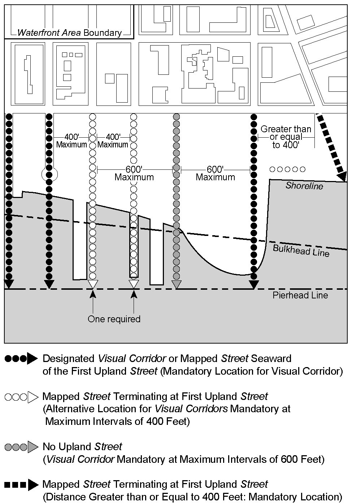
VISUAL CORRIDOR LOCATIONS
(62-511.1)
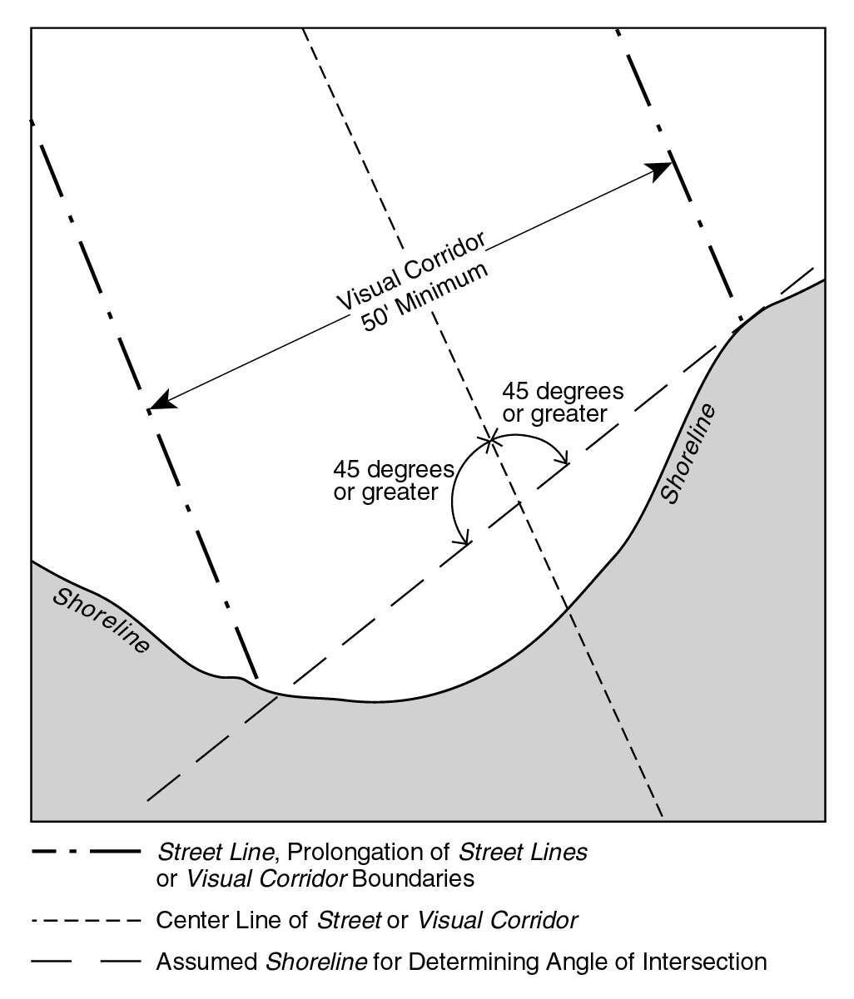
VISUAL CORRIDOR (ANGLE OF SHORELINE INTERSECTION)
(62-511.2)
Official NYC Planning source
62-512 Dimensions of visual corridors
Last amended 2021-05-12
The width of a visual corridor shall be determined by the width of the street of which it is the prolongation but in no event less than 50 feet. Visual corridors that are not the prolongations of streets shall be at least 50 feet wide. For the purposes of establishing the width, vehicular turnarounds at the terminations of such streets, including curved or flanged treatments at intersections, shall be omitted.
The level of a visual corridor shall be determined by establishing a plane connecting the two points along the street lines from which the visual corridor emanates at an elevation five feet above curb elevation with the two points where the prolonged street lines intersect the shoreline, stabilized natural shore, bulkhead, or upland edge of a waterfront yard, or the base plane of a pier or platform, whichever intersection occurs first. Such plane shall then continue horizontally seaward from the line of intersection. Visual corridors that are not prolongations of mapped streets shall be determined by establishing a plane connecting an elevation five feet above curb elevation at the two points along the lot line from which the visual corridor emanates with the two points of intersection at the shoreline, stabilized natural shore, bulkhead, upland edge of a waterfront yard, or the base plane of a pier or platform, whichever intersection occurs first.
No obstructions are permitted within a visual corridor, except as set forth in Sections 62-513 and 62-60 (DESIGN REQUIREMENTS FOR WATERFRONT PUBLIC ACCESS AREAS), inclusive, when a visual corridor coincides with an upland connection.
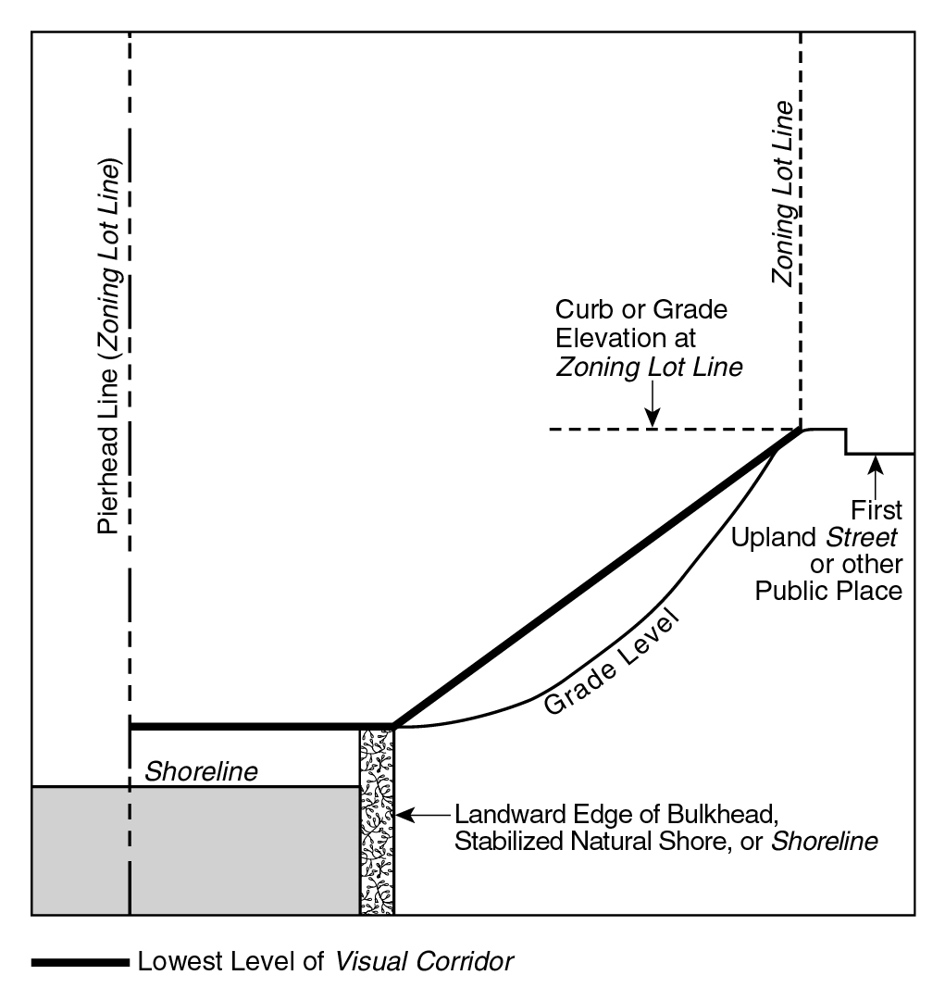
LEVEL OF VISUAL CORRIDOR
(62—512)
Official NYC Planning source
62-513 Permitted obstructions in visual corridors
Last amended 2024-12-05
No building or other structure shall be erected within the width of a visual corridor above its lowest level, as established pursuant to Section 62-512 (Dimensions of visual corridors), except as provided in this Section. Permitted obstructions within visual corridors in all districts shall include:
- permitted obstructions listed in Section 62-611, provided that no shade trees shall be planted within 15 feet of the centerline of a visual corridor, except when provided within an open parking lot;
- permitted obstructions listed in Section 23-311 (Permitted obstructions in all yards, courts, and open areas) and 23-312 (Additional permitted obstructions generally permitted in all yards), as modified for waterfront yards in Section 62-332;
- boats, ships or other vessels, and floating structures permitted by paragraph (a) of Section 62-25;
- any moving or parked vehicles;
- street furniture, including but not limited to, carts and open display booths; and
- swimming pools, provided no portion projects more than 18 inches above the lowest level of a visual corridor.
Official NYC Planning source
62-561 Types of upland connections
Last amended 2009-04-22
Upland connections shall be provided as a single pedestrian walkway pursuant to paragraph (a) of this Section or as two pedestrian walkways pursuant to paragraph (b) of this Section.
(a) Single pedestrian walkway (Type 1)
(1) The minimum width of an upland connection provided in the form of a single pedestrian walkway (hereinafter referred to as “Type 1”) shall be as set forth in the table in this Section. Such widths shall be increased by 20 feet within 15 feet of a street, public park or other public place, hereinafter referred to as an “entry area”.
Such widths may be reduced on zoning lots having a lot width less than 150 feet; the minimum width of a single pedestrian walkway may be reduced by an amount equal to one foot for each two feet that the lot is less than 150 feet. However, in no event shall the width be less than the reduced minimum width specified in the table.
MINIMUM WIDTH FOR TYPE 1 UPLAND CONNECTIONS
|
Districts
|
Minimum width
(in feet)
|
Reduced minimum width
(in feet)
|
|
R3 R4 R5
C1 C2 mapped in R1-R5 C3
|
20
|
12
|
|
R6 R7 R8 R9 R10
C1 C2 C4 C5 C6 C7 C8
M1 M2 M3
|
30
|
16
|
(2) Where an upland connection does not coincide with a visual corridor, a 20 foot wide open area shall be required seaward of the entry area, and shall extend along the entire remaining length of the upland connection but need not be publicly accessible. This open area may be located on either side of the upland connection or aggregated in any combination, so that the total width of the open area, at any point along the upland connection, is 20 feet. Such increased widths may be modified in accordance with the reduced minimum width provisions in paragraph (a)(1) of this Section.
(3) Where an upland connection traverses portions of a zoning lot located in districts in which different width requirements apply, the width of the upland connection shall be computed as the weighted average based on the length of the upland connection in each district.
(b) Two pedestrian walkways (Type 2)
(1) The minimum width of an upland connection provided in the form of two pedestrian walkways, one on each side of the roadbed of a private driveway (hereinafter referred to as “Type 2”), shall be 13 feet for each such walkway. However, where a private driveway terminates in a vehicular turnaround, the minimum width of the upland connection abutting such turnaround shall be 10 feet.
(2) In addition, a “transition area” shall be provided which shall have a width equal to the combined width of the Type 2 upland connection and the roadbed, and shall extend for a distance of 40 feet measured from the termination of such roadbed in the direction of the shore public walkway, as shown in Illustrations 1 and 2 in this Section, for roadbeds that turn and roadbeds that terminate in a turnaround, respectively.
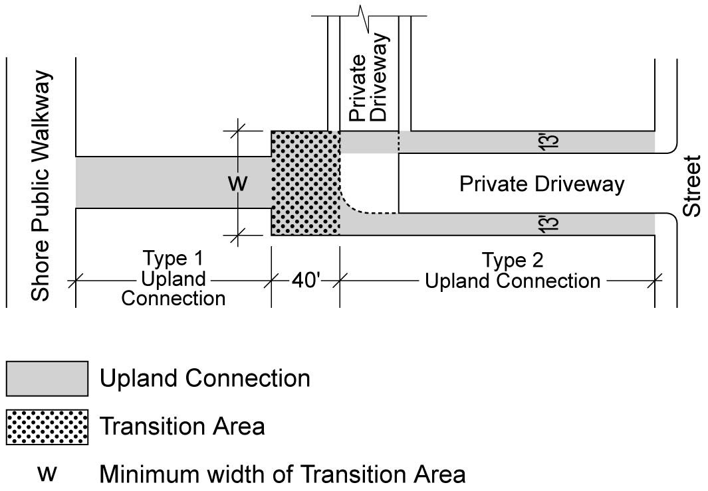
Illustration 1: Upland Connection with Roadbed Turn
(62-561b2.1)
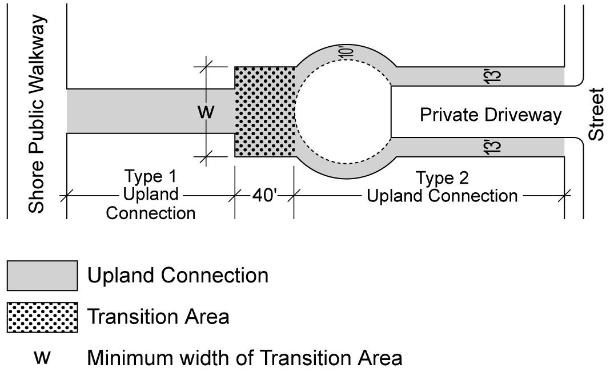
Illustration 2: Upland Connection with Vehicular Turnaround
(62-561b2.2)
(3) Such transition area is not required for roadbeds that turn and are located within 15 feet of a shore public walkway, or for waterfront zoning lots that are less than 255 feet in depth and 260 feet in width. However, for waterfront zoning lots that are less than 255 feet in depth and 260 feet in width, an area of at least 10 feet in width shall be provided between the edge of the roadbed and the upland boundary of the shore public walkway, as shown in illustration 3.
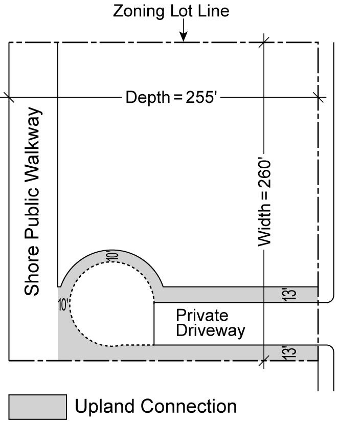
Illustration 3: Maximum Zoning Lot Dimensions to Waive Transition Area
(62-561b3)
Official NYC Planning source
62-571 Location and area requirements for supplemental public access areas
Last amended 2009-04-22
Supplemental public access areas shall adjoin a shore public walkway in accordance with the requirements of this Section, except as modified by paragraphs (a) and (b) of Section 62-57, and the provisions of this Section:
(a) The minimum area of the supplemental public access area:
(1) when located at the intersection of a shore public walkway and an upland connection or street, shall be 750 square feet, have a minimum width to depth ratio of 1:1 and a maximum width to depth ratio of 3:1. The longest side shall adjoin the shore public walkway; or
(2) when located adjoining a shore public walkway without adjoining an upland connection or street, shall be 1,875 square feet and have a minimum width to depth ratio of 3:1. The minimum depth perpendicular to the shore public walkway, as a weighted average, shall be 25 feet.
The width to depth requirements of paragraphs (a)(1) and (a)(2) of this Section may be satisfied with weighted average dimensions. The minimum angle between the two boundary lines of a supplemental public access area coinciding with the private portion of the zoning lot shall be 90 degrees.
(b) A supplemental public access area may be provided:
(1) to widen the shore public walkway, with a minimum width of 10 feet running continuously along the shore public walkway between any two of the following: an upland connection, open street, public park or other public place;
(2) as a pedestrian sidewalk area abutting a roadbed running along the shoreline, provided such sidewalk has a minimum width of 13 feet and complies with the provisions for a Type 2 upland connection pursuant to Section 62-64. Any additional supplemental public access area shall comply with the requirements of this Section; or
(3) as a dedicated bicycle path if such path connects at each end to an open street. The minimum width of a bicycle path shall be 10 feet, with an additional two foot clearance on each side along the entire length of the path. There shall be a planted area between a bicycle path and a paved area for pedestrian use, pursuant to the requirements of paragraph (c) of Section 62-62.
Official NYC Planning source
62-611 Permitted obstructions
Last amended 2021-05-12
Waterfront public access areas shall be unobstructed from their lowest level to the sky except that the obstructions listed in this Section shall be permitted, as applicable. However, no obstructions of any kind shall be permitted within a required circulation path, except as specifically set forth herein.
(a) In all areas
(1) Trees and other plant materials, including grasses, vines, shrubs and flowers, watering equipment, arbors, trellises, observation decks, retaining walls;
(2) Seating, litter receptacles, drinking fountains, other outdoor furniture;
(3) Fountains, reflecting pools, waterfalls, sculptures and other works of art, temporary exhibitions;
(4) Guardrails, bollards, gates and other protective barriers, in accordance with Section 62-651;
(5) Lights and lighting stanchions, flag poles, exercise and other recreational equipment;
(6) Kiosks and open air cafes
Where a kiosk is provided, it shall occupy an area no greater than 150 square feet, including roofed areas. A kiosk may be freestanding or attached on only one side to a building wall. Any area occupied by a kiosk shall be excluded from the definition of floor area, and may only be occupied by news or magazine stands, food stands, flower stands, bicycle rental stands, information booths or uses accessory to permitted WD uses, as permitted by the applicable district use regulations or as modified by Section 62-29.
Open air cafes shall be permanently unenclosed except that they may have a temporary fabric roof. No kitchen equipment shall be installed within an open air cafe. Kitchen equipment may be contained in a kiosk adjoining the open air cafe.
Notwithstanding the provisions of Section 32-41 (Enclosure Within Buildings), outdoor eating services or uses occupying kiosks may serve customers on a waterfront public access area through open windows;
(7) Structural landscaped berms and associated flood gates, including emergency egress systems that are assembled prior to a storm and removed thereafter, provided the height of such berm does not exceed the flood-resistant construction elevation required on the zoning lot or five feet above the lowest adjoining grade of the waterfront yard established pursuant to Section 62-332 (Rear yards and waterfront yards), whichever is higher;
(8) Temporary flood control devices and associated permanent fixtures, including emergency egress systems that are assembled prior to a storm and removed thereafter. Permanent fixtures for self-standing flood control devices shall be flush-to-grade, and shall be permitted obstructions within a required circulation path.
(b) In screening buffers
(1) Paved entrances to buildings fronting upon a screening buffer, including awnings and canopies over such entrances, seating located within 42 inches of an adjacent paved area, bicycle racks within six feet of the sidewalk of an open accessible street or within 10 feet of an upland connection;
(2) Service equipment necessary for maintenance of waterfront public access areas or the functioning of adjacent structures such as watering equipment, sheds for tool storage, electrical transformers or other mechanical or electrical service devices, provided all such equipment covers no more than 100 square feet in any location and has a maximum height of 10 feet. Such obstructions shall be screened in accordance with Section 62-655 (Planting and trees);
(3) Exhaust vents located on building walls fronting on the screening buffer, only if the bottom of such vent is a minimum of 10 feet above the adjacent ground level and projects no more than four inches from the building wall.
(c) Beyond 20 feet of the shoreline
Tot-lots, playgrounds, dog runs, public telephones, toilets, bicycle racks.
(d) In Community District 1 in the Borough of Brooklyn
Any amenity accessory to docking facilities for ferries or water taxis shall be considered a permitted obstruction only where such amenity is certified by the Chairperson of the City Planning Commission in conjunction with the docking facility, pursuant to Section 62-813 (Docking facilities for ferries or water taxis in certain waterfront areas).
Official NYC Planning source
62-631 Design requirements for public access on piers
Last amended 2014-03-26
The design requirements of this Section shall apply to waterfront public access areas on piers, pursuant to Section 62-54.
(a) Circulation and access
At least one circulation path having a minimum clear width of 10 feet shall be provided throughout the public access area required on the pier.
(b) Permitted obstructions
In addition to permitted obstructions pursuant to Section 62-611, pier public access areas may include one freestanding open or enclosed public pavilion, provided such structure does not exceed one story, is no taller than 30 feet and has an area no larger than 1,600 square feet. At least 50 percent of the perimeter wall area on all sides, up to a height of 15 feet, shall consist of clear or glazed materials which may include show windows, glazed transoms, glazed portions of doors or latticework. Such structures shall be exempt from building spacing requirements on piers provided they maintain a spacing of at least 12 feet from other buildings and from any water edge of the pier, except that when a pier is 30 feet or less in width, a pavilion may abut one water edge.
In Community District 1 in the Borough of Brooklyn, any amenity accessory to docking facilities for ferries or water taxis shall be considered a permitted obstruction only where such amenity is certified by the Chairperson of the City Planning Commission in conjunction with the docking facility, pursuant to Section 62-813 (Docking facilities for ferries or water taxis in certain waterfront areas).
(c) Seating
At least one linear foot of seating is required for every 100 square feet of pier public access area, subject to the provisions of paragraphs (a) through (d) of Section 62-652.
Official NYC Planning source
62-632 Design requirements for public access on floating structures
Last amended 2009-04-22
The design requirements of this Section shall apply to shore public walkways provided in conjunction with as-of-right development on floating structures, pursuant to Section 62-55.
(a) Circulation and access
A circulation path shall be provided with a minimum clear width of 10 feet. On shallow portions of zoning lots where the width of the shore public walkway may be reduced in accordance with Section 62-53, the minimum clear width of the path may be reduced to a minimum of six feet when the shore public walkway is less than 16 feet.
(b) Seating
At least one linear foot of seating is required for every 100 square feet of public access area, subject to the provisions of paragraphs (a) through (d) of Section 62-652.
(c) Screening
Any service areas, such as that used for equipment storage or similar purposes, shall be screened from the circulation path in accordance with the standards for screening in Section 62-655 (Planting and trees).
Official NYC Planning source
62-651 Guardrails, gates and other protective barriers
Last amended 2009-04-22
(a) Guardrails
For the purposes of this paragraph, (a), the term "guardrail" shall refer only to fencing or similar structures provided along a bulkhead, stabilized shore or the water edges of a pier or platform.
When a guardrail is provided, it shall have a maximum height of 42 inches measured from the adjoining grade level, and shall be at least 70 percent open. Guardrails may be mounted on a solid curb not higher than six inches.
A guardrail may be substituted for a wall, pursuant to paragraph (c)(3) of this Section.
(b) Bollards
(1) Bollards shall be limited to the following locations:
(i) along the bulkhead, stabilized shore or the water edges of a pier or platform;
(ii) along a zoning lot line adjacent to, and limiting access from an upland street; and
(iii) along the boundaries of a roadway within an upland connection.
(2) Bollards shall not exceed 30 inches in height and shall be between six and 15 inches in width. The top of bollards shall not consist of any sharp edges. The minimum clearance between two bollards shall be five feet.
(c) Fences and walls
(1) Fences and walls, when provided, shall be limited to the following locations:
(i) along the boundary of a waterfront public access area and an adjoining private area on the zoning lot;
(ii) around the perimeter of a playground, tot-lot or dog-run;
(iii) adjoining WD uses;
(iv) within a visual corridor; and
(v) along any grade level change of 30 inches or greater.
(2) Fences shall have a maximum height of 36 inches measured from the adjoining grade level, and be at least 70 percent open. Fences may be mounted on a solid curb not higher than six inches.
(3) Walls shall not exceed a height of 21 inches, and may be fully opaque.
(4) Chain link fencing or barbed or razor wire shall not be permitted.
(d) Gates
Gates attached to fences and walls that limit physical access to waterfront public access areas from streets, public parks or other public ways, or from adjacent waterfront public access areas on adjoining zoning lots, shall comply with the provisions of this paragraph (d). Such gates shall be permitted only at the boundaries of waterfront public access areas and such adjacent publicly accessible areas, except that in Type 1 upland connections gates may be located at the seaward boundary of the entry area. Gates shall not intrude into any planting area. Gates may be closed only pursuant to Section 62-71 (Operational Requirements).
The maximum height of a gate shall be four feet above the adjoining grade level. Gates shall be no more than 30 percent opaque.
When opened for access, 70 percent of the total width, in aggregate, of the waterfront public access area shall be free of obstructions associated with the gate, and there shall be a minimum clear distance of at least 16 feet between any two obstructions of the gate.
In addition, in its open position, the gate and its support structures shall not obstruct:
(1) any circulation path;
(2) 25 percent of the width of the entry area of an upland connection along each side of the centerline of such entry area; and
(3) at least 50 percent of the width of the shore public walkway closest to the shoreline.
Official NYC Planning source
62-652 Seating
Last amended 2009-04-22
All required seating shall comply with the following standards:
(a) Seating with backs
At least 50 percent of the required seating shall have backs, and at least 50 percent of such seating shall face in the general direction of the water. Seat backs shall be at least 14 inches high. Walls located adjacent to a seating surface shall not count as seat backs. All seat backs must either be contoured in form for comfort or shall be reclined from the vertical between 10 to 15 degrees.
(b) Depth
Seating with or without backs shall have a depth of not less than 18 inches, and for seating with backs, such depth shall not be greater than 20 inches. Seating with a depth of at least 36 inches, and accessible from both sides, may be credited as double seating. When seating is provided on a planter ledge, such ledge must have a minimum depth of 22 inches.
(c) Height
At least 75 percent of the required seating shall have a height not less than 16 inches nor greater than 20 inches above the level of the adjacent grade. Seating higher than 36 inches or lower than 12 inches shall not qualify toward the seating requirements. Seating may be mounted on a solid curb not higher than six inches.
(d) Clearance
Seating shall be located a minimum of 22 inches from any circulation path or permitted obstruction along the accessible side of such seating, except that seating without backs may be as close to a guardrail as 12 inches.
(e) Types of seating
In shore public walkways and supplemental public access areas, at least two of the following types of seating are required: moveable seating, fixed individual seats, fixed benches with backs, fixed benches without backs, lounging chairs and design feature seating.
(1) Design feature seating
Planter ledges, seating walls, and seating steps may be provided, and shall be limited to 25 percent of the required seating. Walls and planter ledges shall be flat and smooth with at least one inch radius rounded edges.
(2) Moveable seating
Moveable chairs, excluding those in open air cafes, may be credited as 18 inches of linear seating per chair; however, not more than 50 percent of required linear seating may be in moveable chairs. Moveable chairs may be placed in storage outside of the required hours of operation, pursuant to Section 62-71, paragraph (a). All moveable chairs must have backs. Moveable chairs shall not be chained, fixed, or otherwise secured while the waterfront public access area is open to the public.
(3) Seating steps
Seating steps shall not include any steps intended for circulation and must have a height not less than 12 inches nor greater than 30 inches and a depth not less than 18 inches.
(4) Lounge chairs
Lounge chairs shall allow for a reclined position supporting the back as well as the legs. Lounge chairs may be credited as 36 inches of linear seating per chair.
(f) Social seating and tables
At least 25 percent of required seating shall be social seating, consisting of seats that are placed in close proximity and at angles to one another or in facing configurations that facilitate social interaction. A minimum of two square feet of tables shall be required for every three linear feet of social seating. However, any requirement for tables that, in total, is less than 10 square feet shall be waived, and no more than 150 square feet of tables shall be required in any site.
(g) Shaded seating
At least 20 percent of required seating shall be shaded. Seating shall be considered shaded if it is located under a canopy tree or shade structure, or on the eastern side and within 45 feet of the trunk of a canopy tree or of a shade structure.
(h) Seaward seating
Up to 25 percent of required seating may be located seaward of the shore public walkway provided it is designed as:
(1) a generally smooth and flat surface within a stabilized natural shoreline, in the form of rock, stone, wood or other solid material that measures at least 15 inches in width and depth and is between 12 and 30 inches high measured from the adjoining accessible surface; or
(2) steps, with a depth and height between 12 and 30 inches, that facilitate access to the water.
Seaward seating shall not be subject to the provisions of paragraphs (a) through (g) of this Section.
Seating in open air cafes or stairs shall not qualify towards seating requirements. All seating located within a planting area shall be on permeable pavement and secured for stability.
Official NYC Planning source
62-653 Lighting
Last amended 2011-02-02
All waterfront public access areas shall provide lighting in accordance with the following requirements:
An average maintained level of illumination of not less than one horizontal foot candle (lumens per foot) throughout all walkable areas, and a minimum level of illumination of not less than 0.2 horizontal foot candles (lumens per foot) throughout all other areas, shall be required. Such level of illumination shall be maintained from one-half hour before sunset to one-half hour after sunrise.
The average illumination to minimum foot candle uniformity ratio shall be no greater than 10:1 within a waterfront public access area.
Glare shall be controlled to a semi-cutoff standard (not more than five percent of peak foot candle intensity radiating above 90 degrees and 20 percent of peak intensity above 80 degrees). The luminaire shall be equipped with lamps with a color temperature range of 3000 K to 4100 K with a minimum color rendering index of 65.
All lenses and globes shall be polycarbonate or equivalent.
All lighting sources that illuminate a waterfront public access area and are mounted on or located within buildings adjacent to the waterfront public access area shall be shielded from direct view. In addition, all lighting within the waterfront public access area shall be shielded to minimize any adverse effect on surrounding buildings containing residences.
Official NYC Planning source
62-654 Signage
Last amended 2009-04-22
The provisions of this Section shall apply to signs required in waterfront public access areas. All such signs shall be located in directly visible locations, without any obstruction at any time. Such signs shall be fully opaque, non-reflective and constructed of permanent, highly durable materials, such as metal or stone. All lettering shall be in a clear, sans-serif, non-narrow font such as Arial, Helvetica, or Verdana, solid in color with a minimum height of one-quarter inch, unless otherwise specified in this Section, and shall highly contrast with the background color.
Drawings documenting the size, format, and orientation of all required signs shall be included in the application for certification, pursuant to Section 62-80. Such drawings shall include detailed information about dimensions of the sign, lettering size, color and materials.
(a) Entry signage
All waterfront public access areas shall contain an entry sign mounted on a permanent structure. Such sign shall be located within five feet of the boundary of the entrance from a street, public park or other public way. Required signage shall contain:
(1) the New York City waterfront symbol, 12 inches square in dimension, as provided in the Required Signage Symbols file at the Department of City Planning website and the “The New York Waterfront Symbol Standards and Specifications” (published by the Department of City Planning, April 1989, and as modified from time to time);
(62—654)
(2) lettering at least one-and one-half inches in height, stating "OPEN TO PUBLIC" in bold type;
(3) lettering at least one-half inch in height stating the approved hours of operation as required pursuant to Section 62-71 (Operational Requirements), paragraph (a);
(4) lettering at least one-half inch in height stating “Do not enter outside of hours of operation”;
(5) the International Symbol of Access for persons with physical disabilities, at least three inches square, or the statement: “This public access area is accessible to persons with physical disabilities”;
(6) the address of the property where the waterfront public access area is located;
(7) the name of the current owner and the name, phone number and email address of the person designated to maintain the waterfront public access area;
(8) the statement: "For complaints or questions: call 311”;
(9) the statement: “For more information go to http://nyc.gov/planning”; and
(10) rules of conduct as specified in Section 62-71, paragraph (b).
Information in paragraphs (a)(1) and (a)(2) may be inscribed in pavement or on any permitted appropriate amenity, such as a seating wall or sculpture.
All information required in this paragraph, (a), shall be included on signs with a maximum dimension in one direction of 16 inches. The maximum height of a sign above the adjoining grade shall be three feet for a horizontal sign and five feet for a vertical sign. The bottom of all signs shall be at least eighteen inches above adjoining grade, except for signs angled 45 degrees or less as measured from adjacent grade. However, the waterfront symbol required pursuant to paragraph (a)(1) need not be included in such signage if such symbol is inscribed nearby in pavement or any appropriate amenity.
(b) Signage at zoning lot line
A sign shall be required to be located within five feet of any zoning lot line adjacent to another zoning lot within a shore public walkway and at a distance no greater than five feet from the required circulation path. All information required in paragraph (a) of this Section shall be included on signs with a maximum dimension in one direction of 16 inches. The maximum height of a sign above adjoining grade shall be three feet. The bottom of all signs shall be at least 18 inches above adjoining grade, except for signs angled 45 degrees or less, as measured from adjacent grade. However, the waterfront symbol required pursuant to paragraph (a)(1) of this Section need not be included in such signage if such symbol is inscribed nearby in pavement or any appropriate amenity, such as a seating wall or sculpture.
However, the waterfront symbol required pursuant to paragraph (a)(1) shall be no larger than four inches square, or 12 inches square if inscribed in pavement or any appropriate amenity, and the information required in paragraph (a)(2) of this Section shall be one inch high.
The information required in paragraphs (a)(1) and (a)(2) may be inscribed in pavement or on any permitted appropriate amenity.
(c) Other signage
Seating areas within waterfront public access areas allowed pursuant to paragraph (b) of Section 62-62 (Design Requirements for Shore Public Walkways and Supplemental Public Access Areas) shall be identified by a sign with the words “SEATING OPEN TO PUBLIC” in lettering at least one inch high. Such sign shall be clearly visible from the waterfront public access area. In addition, such sign shall be no greater than 60 square inches, no higher than 18 inches above adjacent grade, and angled for visibility. The required sign may be freestanding or attached to a permitted amenity within the waterfront public access area.
No advertising signs may be located within a waterfront public access area.
Official NYC Planning source
62-655 Planting and trees
Last amended 2021-05-12
Within waterfront public access areas and parking areas where planting or screening is required, the design standards of this Section shall apply.
A detailed landscape plan prepared by a registered landscape architect shall be submitted to the Department of Parks and Recreation prior to seeking certification by the Chairperson of the City Planning Commission, pursuant to the requirements of Section 62-80. Such plans shall include plants suited for waterfront conditions and include a diversity of species with emphasis on native plants, species that are tolerant of salt, sediment, high seasonal water flow, and high winds, as applicable to the location and the facilitation of sustainable wildlife habitats, where appropriate. No species listed on quarantine or as a host species for any disease listed by the Department of Parks and Recreation at the time of application shall be included.
All landscaped areas shall contain a built-in irrigation system or contain hose bibs within 100 feet of all planting areas.
(a) Planting areas
Wherever a minimum percentage of planting area is specified for a waterfront public access area, such requirements shall be met only through the provisions of the types of planting areas listed in paragraphs (a)(1) through (a)(8) of this Section. A curb with a maximum height of six inches is permitted along the perimeter of any planting area. Any edging higher than six inches above adjacent grade shall be considered a retaining wall. Retaining walls shall not exceed a maximum height of three feet, as measured from the level of the adjoining grade or planted area below such wall so that no more than three feet of such retaining wall is visible from the waterfront public access areas. Where not specifically indicated, the minimum planting standard for required planting areas shall be turf grass, other natural grasses or groundcover. All planting areas shall be located on undisturbed subsoil or clean fill.
(1) Single tree pits
A single tree pit shall have a minimum dimension of five feet with a minimum area of 30 square feet and a minimum depth of 3 feet, 6 inches. Only tree pits planted with ground cover shall count towards meeting a minimum planting area requirement.
(2) Continuous tree pits
A continuous tree pit is a planting area containing two or more trees. Continuous tree pits shall have a minimum width of five feet and a minimum depth of 3 feet, 6 inches, and a length as required to meet a minimum of five feet from the trunk of the tree to the end of the tree pit.
(3) Planting beds
Planting beds for turf grass or groundcovers shall have minimum dimensions of two feet in any direction and a minimum depth of two feet. Planting beds for shrubs shall have minimum dimensions of three feet by three feet for each shrub and a minimum depth of 2 feet, 6 inches. Planting beds containing trees shall have a minimum dimension of five feet and a minimum area of 30 square feet for each tree, with a minimum depth of 3 feet, 6 inches. Trees, shrubs or groundcovers may be combined in a single planting bed only if such bed meets the minimum depth required for the largest plant.
Retaining walls are permitted along the perimeter of a planting bed in accordance with the regulations for planting areas in paragraph (a) of this Section.
(4) Terraced planting area
A “terraced planting area” is a planting area with two or more planting beds incorporating retaining walls on a slope with a grade change greater than or equal to three feet. A terraced planting area shall comply with the dimensional standards for a planting bed except that the average depth of the individual planting beds between the two retaining walls shall not be less than three feet, as measured perpendicular to the edge of the retaining wall. In addition, for retaining walls between two or more planting beds, their height may exceed three feet, provided that the front of such retaining walls is screened by plant material.
(5) Berms
A "berm" is a planting area with sloped grade stabilized primarily by plant materials rather than retaining walls or other similar built structures. A berm shall comply with the dimensional standards for a planting bed except that the height of the berm shall not exceed the flood-resistant construction elevation on the zoning lot, or five feet above the lowest adjoining grade of the waterfront yard established pursuant to Section 62-332 (Rear yards and waterfront yards), whichever is higher.
(6) Lawns
A "lawn" is an area planted with turf grass having a minimum soil depth of 2 feet, 6 inches. Along at least 60 percent of the perimeter, a lawn shall have a grade level within six inches of the adjacent grade providing unobstructed pedestrian access. Any required lawn shall have a minimum area of 500 square feet and no dimension less than 18 feet.
(7) Screening
Screening is intended to create a landscaped buffer between the waterfront public access areas and adjoining non-public uses to protect the privacy or minimize the visual impact of blank walls, equipment, loading and parking areas or similar conditions.
(i) Screening buffers
Screening buffers required pursuant to paragraph (c)(2) of Section 62-62 (Design Requirements for Shore Public Walkways and Supplemental Public Access Areas) shall consist of densely planted shrubs or multi-stemmed screening plants, with at least 50 percent being evergreen species. Shrubs shall have a height of at least four feet at the time of planting. The requirements of this paragraph, (a)(7)(i), may also be satisfied by the requirements of paragraph (a)(7)(ii) of this Section.
(ii) Blank walls and service areas
Blank walls higher than four feet measured from an adjacent grade level and service areas anywhere within a waterfront public access area shall be screened with any combination of evergreen trees, vines or espaliered trees or shrubs, and an architectural treatment such as a pergola, stone rustication, grills or sculptural features.
(iii) Parking garage screening
Open parking areas on any zoning lot fronting on an upland connection or street on any waterfront block, notwithstanding the use on such lot, shall require screening pursuant to Section 37-921 (Perimeter landscaping). Screening required pursuant to Section 62-453 shall consist of a planting strip at least four feet wide. Plants shall be at least four feet high at the time of planting and 50 percent of them shall be evergreen shrubs.
All required screening may be interrupted by vehicular or pedestrian entrances.
(8) Tidal wetland area
A tidal wetland area may satisfy up to 30 percent of the required planting area for waterfront public access areas.
(b) Trees
(1) Tree caliper
At time of planting, canopy trees shall be a minimum of three inches caliper and ornamental trees shall be a minimum of two inches caliper.
(2) Trees in single tree pits
One of the procedures in this paragraph, (b)(2), shall be employed to protect trees planted at grade:
(i) granite or cast concrete block pavers with a minimum four inch depth shall be installed in accordance with New York City Department of Parks and Recreation (DPR) standards for street trees;
(ii) a grate shall be installed over the root zone, supported at its edges and set flush with the adjacent pavement for pedestrian safety, in accordance with DPR standards for street trees for grate size; or
(iii) the root zone shall be surrounded with barrier hedge planting.
Official NYC Planning source
62-656 Paving
Last amended 2009-04-22
Paving in waterfront public access areas shall comply with the following:
(a) Locational requirements
(1) Within required circulation paths
All paving material for a required circulation path shall be permanent, durable, accessible to persons with physical disabilities, and shall consist of one or a combination of the following:
(i) Unit pavers constituted of stone, concrete, granite, asphalt or a mix of these materials with other aggregates;
(ii) Concrete, prefabricated, poured or permeable;
(iii) Wood planks for boardwalk or decking, except that tropical hardwood shall not be permitted;
(iv) Solid plastic, such as “plastic lumber,” high density polyethylene, wood composite plastic or fiber-reinforced plastic.
(2) Other than within required circulation paths
In addition to the permitted paving materials of paragraph (a)(1) of this Section, the following materials shall be permitted anywhere in a waterfront public access area:
(i) Blocks such as Belgian blocks, cobble stones, concrete cobbles or Eurocobble;
(ii) Gravel, loose, installed over a solid surface or glued with resin;
(iii) Wood chips or other similar material;
(iv) Metal grating, limited to locations that require drainage and for platforms;
(v) Asphalt, impermeable or porous, which may be imprinted with thermoplastic patterns.
(3) Special regulations for Type 2 upland connections
Paving for driveways and pedestrian paths shall be subject to the standards of the New York City Department of Transportation for roadbeds and sidewalks.
(b) Dimensional requirements
(1) All unit pavers shall have a minimum thickness dimension of two inches for pedestrian use and three inches for vehicular use and shall not exceed a maximum of four square feet in area.
(2) Wood planks or plastic lumber for boardwalk or decking shall be a minimum of three inches thick (nominal dimension). The direction of planks shall not be parallel to the direction of traffic.
(3) Concrete slabs, other than in upland connections, shall be a maximum of two feet in any one dimension.
All the above materials may be installed to facilitate storm water management appropriate for specific site conditions.
Official NYC Planning source
62-657 Bicycle racks
Last amended 2009-04-22
Each bicycle rack shall allow for the bicycle frame and one wheel to be locked to the rack. If bicycles can be locked to each side of the rack, each side may be counted as a required space. Thirty inches of maneuverable space shall be provided between parallel bicycle racks and an eight foot wide aisle shall be provided between bicycle rack areas.
Official NYC Planning source
62-658 Trash receptacles
Last amended 2009-04-22
Trash receptacles shall be placed within 50 feet of a seating area, have a minimum capacity of 25 gallons and have either top openings that measure at least 12 inches wide or side openings that inscribe a rectangle measuring at least 12 inches wide and six inches high. Trash receptacles shall be able to use standard bags used to collect trash.
Official NYC Planning source
62-811 Waterfront public access and visual corridors
Last amended 2021-05-12
No excavation or building permit shall be issued for any development on a waterfront block, or any other block included within a Waterfront Access Plan, until the Chairperson of the City Planning Commission certifies to the Department of Buildings or Department of Business Services, as applicable, that:
(a) there is no waterfront public access area or visual corridor requirement for the zoning lot containing such development due to the following:
(1) the development is exempt pursuant to Sections 62-52 (Applicability of Waterfront Public Access Area Requirements) or 62-51 (Applicability of Visual Corridor Requirements); or
(2) the waterfront public access area or visual corridor requirement has been waived pursuant to Section 62-90 (WATERFRONT ACCESS PLANS);
(b) a site plan and all other applicable documents have been submitted showing compliance with the provisions of Sections 62-332 (Rear yards and waterfront yards), 62-50 (GENERAL REQUIREMENTS FOR VISUAL CORRIDORS AND WATERFRONT PUBLIC ACCESS AREAS), and 62-60 (DESIGN REQUIREMENTS FOR WATERFRONT PUBLIC ACCESS AREAS);
(c) a site plan has been submitted showing compliance with the provisions of Section 62-90;
(d) for developments listed in Section 62-52, paragraph (b), on a zoning lot containing a public access area established prior to October 25, 1993, meeting the terms of Section 62-58 (Requirements for Water-Dependent Uses and Other Developments), by restrictive declaration, lease agreement, maintenance and operation agreement or other agreement with a public entity, which public access area is required to be provided for the life of the development subject to such agreement, a copy of such restrictive declaration or agreement and a site plan indicating the location, area and design of the required public access area and showing substantial compliance with the provisions of Section 62-58 have been submitted; or
(e) for the development of a park, a site plan and all other applicable data have been submitted showing compliance with the provisions of Section 62-59 (Special Regulations for Zoning Lots That Include Parks).
For any parcel identified in Waterfront Access Plan BK-1, the Chairperson shall allow for the phased implementation of all required waterfront public access areas upon certification to the Commissioner of Buildings that a plan has been submitted that provides for an amount of waterfront public access area proportionate to the amount of floor area being developed in each phase. Additionally, for any development located within 240 feet of a shoreline, the initial phase and each subsequent phase shall provide a minimum of 200 linear feet of shore public walkway and any adjacent supplemental public access area located between such development and such shore public walkway, one upland connection through or adjacent to the entire parcel leading to the shore public walkway, and at least one other connection from the shore public walkway to an adjacent shore public walkway, street or other upland connection. For any development located entirely beyond 240 feet of a shoreline, the initial phase and each subsequent phase shall also provide a minimum of 100 linear feet of shore public walkway and one upland connection through or adjacent to the entire parcel leading to the shore public walkway. However, no waterfront public access area need be provided for a phase consisting of a development in which all residences in such phase are affordable housing units as set forth in Section 27-111 (General definitions), provided that such exemption shall only apply where 25 percent or less of the total residential floor area, including any applicable floor area bonuses, on the parcel has been developed.
A certification pursuant to paragraphs (b) or (c) of this Section shall be granted on condition that an acceptable restrictive declaration is executed and filed pursuant to Section 62-74 (Requirements for Recordation).
Within 45 days of receipt of a complete application, the Chairperson shall either certify that the proposed development complies with the requirements of this Section or disapprove such application, citing the nature of any failure to comply. Failure to certify or disapprove such application within the 45 day period will release the Department of Buildings or the Department of Business Services from any obligation to withhold the excavation or building permit and authorize such agency to determine compliance with the provisions of this Section.
Official NYC Planning source
62-812 Zoning lot subdivision
Last amended 2009-04-22
An existing zoning lot within a waterfront block, or within any other block included in a Waterfront Access Plan, may be subdivided into two or more zoning lots, or reconfigured in a manner that would reduce its area or any dimension, only in accordance with the provisions of this Section or as modified pursuant to Section 62-822 (Modification of waterfront public access area and visual corridor requirements).
Such zoning lot may be subdivided or reconfigured provided that the Chairperson of the City Planning Commission certifies that:
(a) there are no requirements in this Chapter for a waterfront public access area or visual corridors on such zoning lot for any use permitted on such zoning lot; or
(b) a restrictive declaration shall be recorded against each subdivided or reconfigured zoning lot, binding all such zoning lots to provide waterfront public access areas or visual corridors at the time of a development, other than an exempt development, as set forth in Section 62-52. Such restrictive declaration shall include a site plan that sets forth the amount and location of the required waterfront public access areas and visual corridors on all resulting zoning lots. Such waterfront public access area or visual corridor shall be provided as required for the original zoning lot at the time of development of a non-exempt use; or
(c) there are existing publicly accessible waterfront open areas on the zoning lot constructed as part of a previously approved site plan providing physical and visual access to and along the waterfront, and such open areas are no smaller in square footage than that required under the provisions of this Chapter for waterfront public access areas and visual corridors, and restrictions have been recorded against the property requiring such existing open area to remain accessible to the public for the life of the development.
Official NYC Planning source
62-813 Docking facilities for ferries or water taxis in certain waterfront areas
Last amended 2024-12-05
In Community District 1 in the Borough of Brooklyn, docking facilities for ferries or water taxis set forth in paragraph (a) of this Section shall be permitted, provided that the Chairperson of the City Planning Commission certifies to the Commissioner of the Department of Buildings that such docking facilities comply with the standards for required amenities set forth in paragraph (b) of this Section and, where provided, the standards for permitted amenities set forth in paragraph (c) of this Section. In conjunction with such certification, parking and drop-off and pick-up area requirements for docking facilities with a vessel capacity of up to 399 passengers shall be waived, as applicable. Where such docking facilities are proposed within a waterfront public access area, such docking facilities shall also comply with the provisions of paragraph (d) of this Section. Where modifications to a docking facility certified pursuant this Section are made, including the amount or configuration of docking facility amenities, establishment of, or modification to, waterfront public access areas on the same waterfront zoning lot, or the cessation of ferry or water taxi service to such docking facility, the provisions of paragraph (e) of this Section shall apply.
The amount of amenities permitted or required pursuant to paragraphs (b) and (c) of this Section shall be calculated for each docking facility on the waterfront zoning lot and not according to the number of vessels a single docking facility can accommodate.
- Docking facilities
The following docking facilities, listed under Use Group IV(B), are subject to the certification provisions of this Section:
- in R6 through R12 Districts, Commercial Districts and Manufacturing Districts, docks for water taxis, with a vessel capacity of up to 99 passengers;
- in R6 through R12 Districts, Commercial Districts and Manufacturing Districts, docks for ferries, other than gambling vessels, with a vessel capacity of up to 399 passengers; and
- in C4, C5, C6, C7 and C8 Districts, and Manufacturing Districts, docks for ferries with an unlimited capacity.
- Required amenities
Passenger queuing space, bicycle parking and a trash receptacle shall be provided in accordance with the applicable provisions of this paragraph (b), inclusive. All applications shall include a site plan denoting the location of each required amenity, dimensioned plans and elevations of individual amenities, as applicable, as well as any other material required to demonstrate compliance with such provisions.
- Passenger queuing space
Passenger queuing space shall be provided in accordance with the provisions of this paragraph (b)(1), inclusive.
- Amount
A minimum of four square feet of queuing space per passenger shall be provided on the waterfront zoning lot for 40 percent of the U. S. Coast Guard certified passenger capacity of the largest vessel proposed to dock at such facility. Queuing space may be either standing space or seating space, and may be either open to the sky or provided within a sheltered space for passengers in accordance with the provisions of paragraph (c)(1), inclusive, of this Section.
- Standing space
All standing queuing space shall be contiguous and clear of obstructions, except for any interruption by circulation paths required for access to docking facilities through a gangway, or pier access thereto. However, such standing queuing space may be non-contiguous and temporary dividers may be permitted as obstructions within such queuing space where the applicant signs an affidavit, or provides materials demonstrating in a manner that is satisfactory to the Chairperson, that an attendant will manage queues whenever such measures are implemented.
- Seating space
A minimum of 10 percent of required queuing space shall be provided as seating, and up to 50 percent of required queuing space may be provided as seating. However, no seating shall be required within a previously approved waterfront public access area. For the purpose of applying seating towards the queuing requirement, one linear foot of seating shall equal one square foot of queuing space.
Any seating space provided pursuant to this Section within an existing or proposed waterfront public access area shall not count towards the maximum amount of seating permitted to be located seaward of the shore public walkway pursuant to paragraph (b) of Section 62-62 (Design Requirements for Shore Public Walkways and Supplemental Public Access Areas).
All seating provided for queuing space shall comply with the applicable dimensional criteria of Section 62-652 (Seating), but need not comply with the percentage requirements for different types of seating required pursuant to such Section. However, moveable chairs shall not constitute seating for queuing.
- Location
Queuing space shall be provided on the waterfront zoning lot within 150 feet of the landward terminus of the gangway leading to the docking facility.
- Bicycle parking
Bicycle racks sufficient to provide at least four bicycle parking spaces shall be provided on the waterfront zoning lot. Such bicycle racks shall comply with the standards of Section 62-657.
- Trash receptacle
One trash receptacle shall be provided on the waterfront zoning lot within 25 feet of the landward terminus of the gangway leading to the docking facility. Such trash receptacle shall comply with the standards of Section 62-658.
- Permitted amenities
Passenger queuing shelters and ticketing machines may be provided only in accordance with the applicable standards of this paragraph (c), or, where applicable, the authorization provisions set forth in Section 62-824 (Modifications to passenger queuing shelters for ferry or water taxi docking facilities).
All applications shall include a site plan denoting the location of such amenities, dimensioned plans and elevations of individual amenities, as well as any other material required to demonstrate compliance with the following standards:
- Passenger queueing shelter
Where provided, passenger queueing shelters shall comply with the provisions of this paragraph (c)(1), inclusive. All heights are measured from adjoining grade.
- Maximum dimensions and permitted enclosing walls
The maximum height of a shelter shall be 10 feet. Below a height of seven feet, the maximum width shall be four feet, and above a height of seven feet, the maximum width shall be eight feet. The maximum length of a shelter shall not exceed 16 feet, except that where a ticketing machine provided pursuant to paragraph (c)(2) of this Section is located within such shelter, such maximum length may be increased to 20 feet.
Shelters shall be permitted a total of three enclosing walls, one along the long dimension of the shelter, and one along each narrow end.
- Support structures below the roof
A maximum of two vertical columns may support the enclosing walls and the roof of a shelter, except that where a ticketing machine provided pursuant to paragraph (c)(2) of this Section is located within such shelter, an additional column shall be permitted. The maximum width and depth of such columns shall not exceed 12 inches. All such columns shall be aligned so that when viewed in elevation view along the narrow end of the shelter, only one column shall be visible.
Below a height of 30 inches, one horizontal structural element shall be permitted along the long dimension of the shelter. The maximum depth and height of such structural element shall not exceed 12 inches. Between a height of 30 inches and seven feet no horizontal structural elements shall be permitted, and above a height of seven feet, horizontal structural elements shall be considered part of the roof structure.
Additional support structures needed to support glazing in the enclosing walls are permitted, provided that such structures are to the minimum amount necessary.
- Roof structure
The roof of the shelter, including all associated structural elements and materials, shall be located above a height of seven feet.
The maximum depth of the roof, including all associated structural elements and materials, shall not exceed 12 inches, as measured perpendicular to the roof surface. In addition, within six inches of the edge of any portion of the roof that cantilevers over passenger queuing space, as viewed in elevation along the narrow end of the shelter, the depth of the roof shall be limited to three inches.
No slopes or curves shall be permitted in the roof along the long dimension of the shelter. Along the narrow end of the shelter, slopes not to exceed 15 degrees and curves with a radius of at least 10 feet shall be permitted. Where two slopes are provided, in no event shall both portions of the roof angle downward from the same point.
- Materials, lighting and permitted signage
On each narrow end of the shelter, the enclosing wall or associated vertical support column may accommodate up to six square feet of way-finding ferry signs, with a width not to exceed 12 inches. In addition, the enclosing wall on the long end of the shelter or a face of a ticketing machine provided in accordance with paragraph (c)(2) of this Section may accommodate up to six square feet of materials related to ferry operations, including maps and schedules of ferry service. No advertising signs shall be permitted.
All structural elements shall be composed of unpainted, metallic materials. The entire surface area of all enclosing walls shall be composed of untinted, transparent materials, except for transparency distraction markers and any support structures or signage permitted pursuant to this paragraph (c)(1). A minimum of 50 percent of the surface area of the roof shall be composed of translucent materials, except that any portion occupied by solar panels shall be excluded from such calculation. Benches provided within a shelter shall either match or complement such shelter materials.
Where lighting is provided within a shelter, the luminaire shall be shielded so the light source is not visible.
- Location and orientation
Shelters shall be provided on the waterfront zoning lot within 100 feet of the landward terminus of the gangway leading to the docking facility.
The long dimension of the shelter shall be oriented so as to be within 15 degrees of being perpendicular to the shoreline or, where located on a pier, within 15 degrees of being parallel to such pier.
Where a shelter is provided within a previously approved waterfront public access area, the Chairperson may modify the location and orientation provisions of this Section, to the minimum extent necessary, where site limitations would make compliance with such provisions infeasible.
- Ticketing machines
Ticketing machines provided in conjunction with a docking facility shall comply with the provisions of this paragraph (c)(2).
- Maximum square footage
The maximum area of all ticket machines, as measured in plan around the furthest extent of such machines, shall not exceed 12 square feet.
- Location
Ticketing machines shall be provided on the waterfront zoning lot within 100 feet of the landward terminus of the gangway leading to the docking facility.
Where a passenger queuing shelter is provided in conjunction with the ferry or water taxi docking facility pursuant to paragraph (c)(1) of this Section, ticketing machines shall be located either within, or immediately adjacent to the upland portion of such shelter.
Any ticketing machine not placed within a passenger queuing shelter shall be placed in a location open to the sky.
Ticketing machines shall either front directly upon a required circulation path or shall be connected thereto by a walkway with an unobstructed minimum clear width of at least five feet.
Where a ticketing machine is provided within a previously approved waterfront public access area, the Chairperson may modify the location provisions of this Section, to the minimum extent necessary, where site limitations would make compliance with such provisions infeasible.
- Provisions for adding amenities for docking facilities to a waterfront public access area
Docking facilities proposed within a previously approved waterfront public access area or in conjunction with a certification for such approval, pursuant to Section 62-811 (Waterfront public access areas and visual corridors), shall comply with the applicable provisions of this paragraph (d).
- Permitted obstructions
In no event shall amenities provided pursuant to paragraphs (b) or (c) of this Section be permitted to encroach upon the minimum circulation paths required pursuant to the applicable provisions of Sections 62-62 (Design Requirements for Shore Public Walkways and Supplemental Public Access Areas), 62-63 (Design Requirements for Public Access on Piers and Floating Structures) and 62-64 (Design Requirements for Upland Connections).
- Providing amenities in previously approved waterfront public access areas
All seating, bicycle parking and trash receptacles provided for docking facilities in accordance with the provisions of paragraph (b) of this Section, within a previously approved waterfront public access area, shall be provided in addition to the amount of seating, bicycle parking, or trash receptacles required for such waterfront public access area pursuant to the applicable provisions of Section 62-60 (DESIGN REQUIREMENTS FOR WATERFRONT PUBLIC ACCESS AREAS). Where excess seating, bicycle parking or trash receptacles have been provided within such previously approved waterfront public access areas, such additional amenities may be applied towards compliance with the provisions for docking facilities of this Section, provided that such amenities comply with the applicable provisions of paragraph (b) of this Section. Where previously approved waterfront public access areas are non-complying as to the provision of required amenities, in no event shall the minimum amount of amenity provided for docking facilities pursuant to paragraph (b) reduce the degree of non-compliance of such waterfront public access area.
All seating, bicycle parking and trash receptacles provided in accordance with the provisions of paragraph (b) of this Section in an existing waterfront public access area shall either match or shall be comparable with such existing amenities, with regard to quality, materials, finishes and form.
Modifications to a previously approved waterfront public access area in order to accommodate amenities to be provided for a docking facility in accordance with paragraphs (b) or (c) of this Section shall not constitute a design change to such waterfront public access area, and shall not necessitate a new certification pursuant to Section 62-811, provided that the applicant demonstrates to the Chairperson of the City Planning Commission that such modifications are to the minimum extent necessary in order to accommodate the amenities being provided for such docking facility.
- Providing amenities in conjunction with a new waterfront public access area
All amenities provided for docking facilities in accordance with the provisions of paragraph (b) of this Section shall be provided in addition to all required seating, bicycle parking, or trash receptacles for a waterfront public access area being developed in conjunction with the provision of a docking facility. All such proposed amenities for the docking facility shall complement the proposed amenities for such waterfront public access area.
- Modifications of certified docking facilities
Any modification to a docking facility certified pursuant to this Section, shall comply with the applicable provisions of this paragraph (e).
- Modification of amenities
Any modification of the required or permitted amenities for a docking facility certified pursuant to this Section, including the configuration of such amenities, shall be subject to a new certification pursuant to this Section.
Any ferry or water taxi service modification resulting in a reduction of passenger capacity of the largest vessel docking at such facility shall not be subject to a new certification provided that the amount of queuing space required at the time of approval, pursuant to paragraph (b) of this Section, is not diminished.
- Establishment of or modifications to waterfront public access areas
Any establishment of a waterfront public access area or modification to a previously approved waterfront public access area where a docking facility certified pursuant to this Section is located, shall require a new certification, pursuant to this Section, in conjunction with the certification set forth in Section 62-811.
- Cessation of ferry or water taxi service
Where ferry or water taxi service ceases operations to a docking facility certified pursuant to this Section, and ferry docking infrastructure is removed from the waterfront zoning lot which would preclude further service, the following shall apply:
- Passenger queuing shelters and ticketing machines provided pursuant to paragraph (c) of this Section shall be removed from the waterfront public access area;
- Seating, bicycle racks, and litter receptacles provided pursuant to paragraph (b) of this Section need not be removed; and
- any breach in a guardrail along a pier or along the shore public walkway to accommodate a gangway to a docking facility shall be repaired and shall match the adjacent guardrail.
Official NYC Planning source
62-821 Modification of requirements for ferries and sightseeing, excursion or sport fishing vessels
Last amended 2014-03-26
(a) In C1, C2, C3 and C7 Districts, the City Planning Commission may authorize modification of the use regulations of Section 32-10 (USES PERMITTED AS-OF-RIGHT) in order to allow docks for ferries with an operational passenger load greater than 150 passengers per half hour, or in Community District 1 in the Borough of Brooklyn, a vessel capacity larger than 399 passengers, provided the Commission finds that:
(1) such facility will not create serious pedestrian or vehicular traffic congestion that would adversely affect the surrounding area;
(2) the streets providing access to such facility will be adequate to handle the traffic generated thereby; and
(3) such use is so located as to draw a minimum of vehicular traffic to and through local streets in adjoining residential areas.
(b) In all districts, the Commission may authorize a reduction or waiver of the parking requirements of Section 62-43 for docks serving ferries, or sightseeing, excursion or sport fishing vessels, provided the applicant submits a report that enables the Commission to make one or more of the following findings:
(1) that there is or would be adequate public or private transit in close proximity to the facility and that there is or would be a consistent pattern of usage by a significant percentage of passengers;
(2) that there is or would be a consistent pattern of passenger drop-off and pick-up by private cars, taxis or vans by a significant percentage of passengers;
(3) that there is or would be a consistent pattern of arrivals and departures on foot or by bicycle by a significant percentage of passengers;
(4) that there is a consistent pattern of underutilization of existing accessory parking spaces; or
(5) that the dock serves or would serve vessels operating at different times during the day or week and that there is or would be shared usage of common parking spaces at mutually exclusive time periods.
(c) In all districts, the Commission may authorize modification of the passenger drop-off and pick-up area requirements of Section 62-462, including a reduction in the number of required spaces, for docks serving ferries, or sightseeing, excursion or sport fishing vessels, provided the Commission finds that:
(1) due to the configuration of the zoning lot, strict adherence to the regulations would not be possible to achieve;
(2) there is no practical possibility of locating such area on another zoning lot that would be contiguous, except for its separation by a street or street intersection, because appropriate sites are occupied by substantial improvements;
(3) there is no practical possibility of providing a lay-by area on an adjoining street that would be acceptable to the New York City Department of Transportation; and
(4) such modifications would not create serious vehicular traffic congestion that would adversely affect the surrounding area.
The Commission may impose appropriate conditions and safeguards to assure that such modifications will not adversely affect the surrounding area.
Official NYC Planning source
62-822 Modification of waterfront public access area and visual corridor requirements
Last amended 2024-12-05
- Authorization to modify requirements for location, area and minimum dimensions of waterfront public access areas and visual corridors
The City Planning Commission may modify the requirements of Section 62-50 (GENERAL REQUIREMENTS FOR VISUAL CORRIDORS AND WATERFRONT PUBLIC ACCESS AREAS) and, in conjunction therewith, Section 62-332 (Rear yards and waterfront yards). The Commission may also authorize a portion or all of the required waterfront public access area to be provided off-site on an adjoining public property.
The Commission shall file any such authorization, pursuant to this paragraph (a), with the City Council. The Council, within 20 days of such filing, may resolve by majority vote to review such authorization. If the Council so resolves, within 50 days of the filing of the Commission's authorization, the Council shall hold a public hearing and may approve such authorization in whole or in part, with additional or modified restrictions or conditions, or disapprove such authorization. If, within the time periods provided for in this Section, the Council fails to act on the Commission's authorization, the Council shall be deemed to have approved such authorization.
- In order to modify the location of waterfront public access areas and visual corridors, the Commission shall find that such areas, provided either on the zoning lot or off-site adjacent to the zoning lot, shall:
- comply with the required minimum dimensions and equal the required total area, in aggregate; and
- due to their alternative location and design, provide equivalent public use and enjoyment of the waterfront and views to the water from upland streets and other public areas; or
- In the event the Commission determines that there is no feasible way to provide equal alternative waterfront public access areas either on the zoning lot or off-site on an adjoining public property or to provide equal alternative visual corridors, the Commission may authorize a reduction in minimum dimensions or area, or may waive such requirements, provided that:
- such development would be impracticable, physically or programmatically, due to site planning constraints such as the presence of existing buildings or other structures or elements having environmental, historic or aesthetic value to the public; and
- that the reduction or waiver of requirements is the minimum necessary.
- Authorization to modify requirements within waterfront public access areas
The City Planning Commission may modify the requirements within the waterfront public access area provisions of Sections 62-513 (Permitted obstructions in visual corridors), 62-58 (Requirements for Water-Dependent Uses and Other Developments), 62-60 (DESIGN REQUIREMENTS FOR WATERFRONT PUBLIC ACCESS AREAS), inclusive, and 62-90 (WATERFRONT ACCESS PLANS), inclusive.
In order to grant such authorization, the Commission shall find that such modifications:
- are necessary to accommodate modifications pursuant to paragraph (a) of this Section; or
- would result in a design of waterfront public access areas that is functionally equivalent or superior to the design prescribed by strict adherence to the applicable provisions.
- Authorization for phased development of waterfront public access areas
The City Planning Commission may authorize a phasing plan to implement waterfront public access area improvements on zoning lots undergoing partial development or zoning lots subdivided or reconfigured, pursuant to Section 62-812.
In order to grant such authorization, the Commission shall find that:
- the amount of waterfront public access area developed in any phase is proportionate to the lot area being developed in such phase; or
- physical or programmatic constraints make it infeasible to provide the waterfront public access area on a proportional basis as the zoning lot is improved, and the maximum feasible amount of waterfront public access area is developed in each phase.
A phasing plan shall be submitted that sets forth the amount and location of waterfront public access area that will be provided at the time each phase is developed.
- Authorization to modify minimum hours of operation and to install gates
The City Planning Commission may authorize, for a period not to exceed 10 years, modifications of the requirements for hours of operation set forth in Section 62-71, paragraph (a), or the installation of gates in predominantly residential developments in accordance with the provisions of Section 62-651, paragraph (c)(2).
The Commission shall find that any modification of the hours of operation and the installation of gates in predominantly residential developments are warranted due to the remote location of the waterfront public access areas, and that such modified hours of operation or gates will not thereby unduly restrict public access to the waterfront.
As a condition of granting such authorization, the Commission shall find that all gates comply with the design requirements set forth in Section 62-651.
Public access to the waterfront public access areas shall be assured by appropriate legal instruments. Signage setting forth hours of operation shall be affixed to the gate which shall indicate the hours of public access authorized pursuant to this paragraph (d).
The Commission may impose appropriate conditions and safeguards to assure that such modifications will achieve comparable physical and visual access to the waterfront or to assure that an approved phasing plan will be properly implemented. Such conditions may include, but are not limited to, deed restrictions, easements or performance bonds.
Official NYC Planning source
62-823 Modification of use regulations in C3 Districts
Last amended 2024-06-06
In C3 Districts, the City Planning Commission may authorize modification of use regulations to allow a WE use not otherwise allowed as-of-right or by special permit. In conjunction with such authorization, the Commission may also allow the sign regulations of a C1 District to apply to the zoning lot.
As a condition to the granting of such authorization the Commission shall find:
(a) that such WE use is a use listed under Use Groups V, VI, VII or VIII;
(b) that the zoning lot also includes a WD use that is either permitted in the district as-of-right or has been permitted by special permit;
(c) that such WE use will not create serious pedestrian or vehicular traffic congestion that would adversely affect surrounding residential streets;
(d) that the entrances and exits for accessory parking or loading facilities are so located as to not adversely affect residential properties fronting on the same street; and
(e) that such WE use will not impair the character or future use or development of the surrounding area.
The Commission may prescribe additional appropriate conditions and safeguards to minimize adverse effects on the character of the surrounding area. Such conditions and safeguards may include limitations on the size of the establishment, limitations on lighting and signage or screening requirements.
Official NYC Planning source
62-824 Modifications to passenger queuing shelters for ferry or water taxi docking facilities
Last amended 2014-03-26
In Community District 1 in the Borough of Brooklyn, the City Planning Commission may authorize a ferry passenger queueing shelter exceeding the dimensions set forth in paragraph (c)(1) of Section 62-813 (Docking facilities for ferries or water taxis in certain waterfront areas), provided that the Commission finds that:
(a) the public benefit derived from the proposed shelter merits the larger dimensions authorized;
(b) the proposed shelter utilizes the design standards set forth in paragraph (c)(1) of Section 62-813 regarding permitted support structures, materials, signage and roof construction to the greatest extent feasible;
(c) any modification to such provisions of Section 62-813 will not unduly limit views from the waterfront public access area; and
(d) the design of the proposed shelter will result in a quality structure that complements the waterfront public access area or the publicly accessible area of a waterfront zoning lot accommodating the ferry or water taxi docking facility.
Official NYC Planning source
62-825 Modifications for wind energy systems
Last amended 2023-12-06
In any district, the City Planning Commission may authorize modifications to the applicable bulk or waterfront public access area regulations in order to accommodate wind energy systems, whether accessory or as part of energy infrastructure equipment, provided the Commission finds that:
- there would be a practical difficulty in complying with regulations set forth for wind energy systems as set forth in the underlying district regulations, and as modified by this Chapter, without such modifications;
- such modifications are the minimum necessary to allow for an appropriate wind energy system; and
- the proposed modifications will not alter the essential character of the neighborhood in which the building is located.
The Commission may prescribe appropriate conditions and safeguards to minimize adverse effects on the character of the surrounding area.
Official NYC Planning source
62-831 General provisions
Last amended 2016-03-22
Where a special permit application would allow a significant increase in residential floor area and the special floor area requirements in Mandatory Inclusionary Housing areas of Section 27-131 (Mandatory Inclusionary Housing) are not otherwise applicable, the City Planning Commission, in establishing the appropriate terms and conditions for the granting of such special permit, shall apply such requirements where consistent with the objectives of the Mandatory Inclusionary Housing program as set forth in Section 27-12 (General Provisions). However, where the Commission finds that such special permit application would facilitate significant public infrastructure or public facilities addressing needs that are not created by the proposed development, enlargement or conversion, the Commission may modify the requirements of such paragraph (d).
Official NYC Planning source
62-832 Docks for passenger ocean vessels in C6 Districts
Last amended 2016-03-22
In C6 Districts, the City Planning Commission may permit docks for passenger ocean vessels, other than gambling vessels.
As a condition for granting a special permit, the Commission shall find that:
(a) such facility will not create serious pedestrian or vehicular traffic congestion that would unduly inhibit surface traffic and pedestrian flow in the surrounding area;
(b) the streets providing access to such facility will be adequate to handle the traffic generated thereby;
(c) an area will be provided for the drop-off and pick-up of passengers by private car, taxi, van and bus that, at a minimum, meets the requirements of Section 62-462 (Passenger drop-off and pick-up areas for docking facilities), and which is so designed as to avoid traffic or pedestrian conflict on the streets providing access to the facility; and
(d) such use will not be incompatible with or adversely affect the essential character, use or future growth of the surrounding area.
The Commission may prescribe additional appropriate conditions and safeguards to minimize adverse effects on the character of the surrounding area, including the provision of accessory off-street parking spaces, accessory off-street loading berths or additional area for the temporary parking of vehicles or buses for drop-off and pick-up of passengers.
Official NYC Planning source
62-833 Docks for ferries or water taxis in Residence Districts
Last amended 2024-06-06
In all Residence Districts, except R1 and R2 Districts, and except within Community District 1 in the Borough of Brooklyn, where the certification provisions of Section 62-813 (Docking facilities for ferries or water taxis in certain waterfront areas) shall apply, the City Planning Commission may permit docks for ferries or water taxis as listed in Use Group IV(B), provided that:
- such facility will not create serious pedestrian or vehicular traffic congestion that would adversely affect surrounding residential streets;
- such use is so located as to draw a minimum of vehicular traffic to and through local streets in the adjoining residential area;
- there is appropriate landscaping along lot lines to enable such use to blend harmoniously with the adjoining residential area;
- accessory off-street parking spaces are provided in accordance with Section 62-43 (Parking Requirements for Commercial Docking Facilities) and the entrances and exits for such accessory parking facilities are so located as to not adversely affect residential properties fronting on the same street; and
- such use will not impair the character or the future use or development of the surrounding residential area.
The Commission may prescribe additional appropriate conditions and safeguards to minimize adverse effects on the character of the surrounding area and to protect residential properties which are adjoining or across the street from the facility. Such additional conditions and safeguards may include provisions for temporary parking of vehicles for passenger drop-off and pick-up, additional accessory off-street parking spaces and limitations on lighting and signage.
Official NYC Planning source
62-834 Uses on floating structures
Last amended 2024-12-05
In all districts, the City Planning Commission may permit a use not otherwise allowed as-of-right by Section 62-25 to be located on a floating structure provided the use is permitted by the applicable district regulations and the floating structure complies with the height and setback regulations of Section 62-345.
An application for a use on a floating structure pursuant to this Section shall be made jointly by the property owner and the owner of the floating structure, if they are separate entities. In addition, the application shall include copies of all Federal and State permit applications that are required to be filed in conjunction with the proposed use.
As a condition for granting a special permit, the Commission shall find that:
- the proposed use is a WE use or is either a power plant or government-owned and operated facility that requires such a location due to the absence of a reasonable way to site the facility without use of a floating structure;
- a plan for public access on the floating structure, elsewhere on the zoning lot, or off-site on public property adjacent to the zoning lot, is provided that is appropriate to the size and intensity of use on the floating structure;
- except for power plants or government-owned and operated facilities, the location of such use on a floating structure will enhance public access to and use of the waterfront; and
- the location of such use on a floating structure will not adversely affect the essential character, use or future growth of the waterfront and the surrounding area.
However, the Commission may waive the public access requirement for a power plant or government-owned and operated facility either where such access would conflict with the operation of the facility or be detrimental to the public welfare.
The Commission may also permit modification of the visual corridor requirements of Section 62-51, inclusive, provided it makes the additional finding that the location and configuration of the floating structure minimizes any adverse effects on significant views to the water from upland public streets or other public places.
The Commission may prescribe additional appropriate conditions and safeguards to minimize adverse effects on the character of the waterfront and the surrounding area, including requirements for setbacks from lot lines, spacing from other floating structures on the same or adjoining zoning lots and limitations on lighting or signage.
Official NYC Planning source
62-835 Developments on piers or platforms
Last amended 2024-12-05
In all districts, the City Planning Commission may permit:
(a) a change of use on a new pier or new platform from a WD use or playground or publicly accessible private park, to any other WE use permitted by the applicable district regulations and, in conjunction with such change of use, modification of the bulk regulations of Section 62-30 for an existing building, except for Section 62-31, paragraph (a), or the maximum floor area ratio, provided the Commission finds that:
(1) existing permitted WD uses and open WE uses on the pier or platform have been discontinued for a continuous period of at least two years immediately prior to the date of application;
(2) the proposed WE use will significantly enhance public use and enjoyment of the waterfront;
(3) there is no increase in water coverage; and
(4) in the case of modification of bulk regulations for an existing building, findings (b)(3) through (b)(6) of this Section are also met. Finding (b)(4) shall also include platforms within the seaward lot.
(b) for an existing pier, any use permitted by the applicable district regulations and modifications of the provisions of Sections 62-332 (Rear yards and waterfront yards) and 62-344 (Developments on piers), provided the Commission finds that:
(1) the facility is so designed as to significantly enhance public use and enjoyment of the waterfront;
(2) accessory parking or loading facilities provided in conjunction with such uses are arranged and designed so as to not adversely impact public access areas anywhere on the zoning lot;
(3) the proposed development does not violate the bulk provisions of Section 62-34 (Height and Setback Regulations on Waterfront Blocks);
(4) within the seaward lot, the ratio of floor area on the pier to water coverage of the pier does not exceed the maximum floor area ratio for the use as set forth in the district regulations;
(5) such bulk modifications would not unduly obstruct the light and air or waterfront views of neighboring properties; and
(6) such modifications will not adversely affect the essential character, use or future growth of the waterfront and the surrounding area.
(c) for piers, modification of the waterfront public access area and visual corridor requirements of Sections 62-50 and 62-60, provided the Commission finds that:
(1) the proposed development would result in better achievement of the goals set forth in Section 62-00 than would otherwise be possible by strict adherence to the regulations of Sections 62-50 and 62-60, inclusive; and
(2) an alternative waterfront public access area and visual corridors on the zoning lot, or off-site on a public property adjacent to the zoning lot, are provided that are substantially equal in area to that required and, by virtue of their location and design, provide equivalent public use and enjoyment of the waterfront and views to the water from upland streets and other public areas.
In the event that the Commission determines there is no feasible way to provide substantially equal alternative public access areas, either on the zoning lot or off-site on an adjoining public property or to provide substantially equal alternative visual corridors, the Commission may authorize a reduction or waiver of the requirements.
The Commission may prescribe additional appropriate conditions and safeguards to minimize adverse effects on the character of the waterfront and the surrounding area, including requirements for setbacks from lot lines, spacing from other buildings on the same or adjoining zoning lots, limitations on lighting and signage and limitations on size of individual establishments.
Official NYC Planning source
62-836 Public parking facilities on waterfront blocks
Last amended 2024-12-05
In C1, C2, C4, C5, C6 and C7 Districts, the City Planning Commission may permit public parking garages or public parking lots on waterfront blocks in accordance with applicable district regulations, provided the parking facility is an interim use limited to a term of not more than five years, or the Commission finds that:
(a) the facility is needed to serve primarily waterfront developments containing WD or WE uses; and
(b) there is no practical possibility of locating such facility on a non-waterfront block because appropriate sites on such blocks are occupied by substantial improvements.
The Commission may prescribe additional appropriate conditions and safeguards to minimize adverse effects on the character of the waterfront and surrounding area.
Official NYC Planning source
62-837 Bulk modifications on waterfront blocks
Last amended 2024-12-05
In all districts, the City Planning Commission may permit modification of any applicable yard, lot coverage, height and setback, and distance between buildings regulations, for a development on a zoning lot within a waterfront block, excluding any portion on a pier or new platform, provided the Commission finds that such modifications will not adversely affect access to light and air on surrounding waterfront public access areas, streets and properties; and
- will result in a better site plan and a better relationship between the zoning lot and the adjacent streets, surrounding neighborhood, adjacent open areas and shoreline than would be possible through strict adherence to the regulations; or
- are necessary to protect unique natural features such as rock outcroppings, significant grade changes or wetlands, or to accommodate existing buildings or other structures.
Official NYC Planning source
62-838 Docks for gambling vessels
Last amended 2024-06-06
In all Commercial Districts and in all Manufacturing Districts, the City Planning Commission may permit docks for gambling vessels, provided that, in Commercial Districts, the maximum aggregate dock capacity per zoning lot set forth in paragraph (b)(3) of Section 32-142 (Use Group IV – uses subject to size limitations) shall apply.
As a condition for permitting such use, the Commission shall find that:
- the streets providing access to such docking facility will be adequate to ensure that the traffic generated will not unduly impede surface traffic and pedestrian flow in the surrounding area;
- any noise and activity related to the docking facility, including vessel operations, will not have a detrimental impact on the waterfront and surrounding area; and
- such use will not be incompatible with the essential character, use or future growth of the waterfront and surrounding area.
Docks for gambling vessels shall comply with all provisions of the Resolution, including the provisions of Article VI, Chapter 2 (Special Regulations Applying in the Waterfront Area), applicable to the type of vessel on which the shipboard gambling business is operated.
The Commission may prescribe additional conditions and safeguards to minimize any adverse effects on the waterfront and surrounding area.
Official NYC Planning source
62-911 Establishment of Waterfront Access Plans
Last amended 2009-04-22
The City Planning Commission and City Council may adopt a Waterfront Access Plan as an amendment to this Resolution pursuant to Section 200 or 201 of the City Charter and in accordance with the provisions of Sections 62-912 (Elements of a Waterfront Access Plan), 62-913 (Conditions for adoption of a Waterfront Access Plan) and this Section in order to adjust the waterfront public access area and visual corridor requirements of Sections 62-50 and 62-60, inclusive, retain the waterfront block bulk regulations of Section 62-30 on newly-created non-waterfront blocks within a specifically defined portion of the waterfront area, or establish waterfront yard requirements for developments otherwise exempt from the requirements of Section 62-33 (Special Yard and Lot Coverage Regulations on Waterfront Blocks).
To be considered for a Waterfront Access Plan, an area shall:
(a) be entirely in the waterfront area;
(b) not include any portions within R1 or R2 Districts;
(c) comprise either entire blocks or a minimum of four acres, all portions of which are contiguous tracts of land except for intervening streets; and
(d) have at least 600 feet of shoreline.
Official NYC Planning source
62-912 Elements of a Waterfront Access Plan
Last amended 2024-06-06
A Waterfront Access Plan may:
(a) on zoning lots where a waterfront public access area or visual corridors are required pursuant to the provisions of Sections 62-50 (GENERAL REQUIREMENTS FOR VISUAL CORRIDORS AND WATERFRONT PUBLIC ACCESS AREAS) and 62-60 (DESIGN REQUIREMENTS FOR WATERFRONT PUBLIC ACCESS AREAS), inclusive, modify the size, configuration, location or design of required waterfront public access areas or visual corridors within certain designated areas in order to address local conditions, provided such plan does not impose a waterfront public access area or visual corridor requirement on any zoning lot greater than would otherwise be required pursuant to the provisions of Sections 62-50 or 62-60. For the purpose of determining the amount of public access, the highest standard applicable to a zoning lot may be applied regardless of any specific use permitted or proposed for such zoning lot. Within Waterfront Access Plan BK-1, the waterfront public access area and visual corridor requirements for any parcel located within the Waterfront Access Plan may be determined by aggregating the waterfront public access area and visual corridor requirements of each zoning lot within the parcel and such aggregated requirements may be modified within such parcel without regard to zoning lot lines;
(b) on zoning lots where waterfront public access area or visual corridors are not required pursuant to the provisions of Sections 62-50 and 62-60, inclusive, establish requirements for a waterfront public access area or visual corridors, except for those zoning lots predominantly developed for airports, heliports, seaplane bases or, in C8 or Manufacturing Districts, uses listed under Use Groups IV(B), IX or X, provided that such zoning lots, when improved would result in a community need for such physical or visual access to the waterfront or a waterfront linkage of public parks or other public areas. The plan may incorporate one or more of the waterfront public access areas or visual corridors listed in Section 62-50, inclusive, consistent with the standards of Sections 62-50 and 62-60, inclusive. Such standards may be modified as necessary to address local conditions provided such plan does not impose a requirement for any component greater than would otherwise be required pursuant to the provisions of Sections 62-50 or 62-60;
(c) modify or waive specific requirements for a waterfront public access area or visual corridors in certain designated areas where such requirements would not be compatible with local conditions and therefore not serve to further public enjoyment of the waterfront;
(d) identify shore terminations of mapped streets or existing piers or platforms within seaward prolongations of such streets and establish public access treatments for such areas after referral to the Department of Transportation or other City agency having jurisdiction over such property for its review and concurrence;
(e) apply the bulk regulations of Section 62-30, inclusive, to a non-waterfront block when such block results from a subdivision of a waterfront block as the result of a street mapping; and
(f) for developments where a waterfront yard is not otherwise required by Section 62-33 (Special Yard Regulations on Waterfront Blocks), establish requirements for a waterfront yard provided such plan does not impose a requirement greater than would be required by the provisions of Sections 62-331 (Front yards and side yards) or 62-332 (Rear yards and waterfront yards), as modified by the further provisions of this paragraph, (f), for such other developments. Enlargements of buildings or other structures existing on the effective date of the Waterfront Access Plan shall be permitted within such waterfront yard provided that the enlargement is for WD uses or uses listed under Use Groups IV(B), IX or X and no portion of the enlargement, other than permitted obstructions, is within 20 feet of the seaward edge of the waterfront yard. In addition, obstructions shall be permitted within such waterfront yard pursuant to applicable district yard regulations, except that no building or portion of a building shall be permitted within 10 feet of the seaward edge of such waterfront yard.
A Waterfront Access Plan shall include the following elements:
(1) identification of the plan by Borough and plan number or area name;
(2) a zoning map, or portion thereof, showing the boundaries of the geographical area included within the plan, which shall constitute the plan map;
(3) delineation on the plan map of any physical or visual waterfront access features mandated by the plan to be at specific locations; and
(4) a description in the plan text of all features established or modified by the plan, with reference to affected blocks and lots.
Official NYC Planning source
62-913 Conditions for adoption of a Waterfront Access Plan
Last amended 2009-04-22
As a condition precedent to its approval of a Waterfront Access Plan, the City Planning Commission shall find, in its report to the City Council for adoption, that such plan:
(a) would improve public use and enjoyment of the waterfront, thereby serving to implement the goals set forth in Section 62-00; and
(b) meets any of the following:
(1) is necessary to link public parks or other public areas along the waterfront or to the waterfront, and such linkage would not necessarily be achieved solely by the provisions of Sections 62-34 (Height and Setback Regulations on Waterfront Blocks), 62-50 (GENERAL REQUIREMENTS FOR VISUAL CORRIDORS AND WATERFRONT PUBLIC ACCESS AREAS) and 62-60 (DESIGN REQUIREMENTS FOR WATERFRONT PUBLIC ACCESS AREAS);
(2) is necessary to accommodate unique shore conditions or the retention of existing buildings or other structures, including bridges, viaducts or railways that would not be adequately accommodated by the provisions of Sections 62-50 and 62-60;
(3) is necessary to accommodate unique topography or natural features, such as wetlands conditions, significant grade changes, geologic formations, natural vegetation or wildlife habitats, which natural features or topography would not be adequately accommodated by the provisions of Sections 62-34, 62-50 and 62-60;
(4) is necessary to create a better physical or visual relationship of the waterfront to significant upland streets or preserves significant views of the water or historic structures from such streets, which would not necessarily be achieved by the provisions of Sections 62-34, 62-50 and 62-60;
(5) is necessary to achieve public access to the waterfront in an area characterized by large undeveloped tracts of land with a limited number of public streets leading to the shore;
(6) is necessary to maintain visual corridors that would be extinguished by a street de-mapping after October 25, 1993, or maintains visual corridors from certain upland streets that would be exempted from such requirements as the result of an intervening street mapping after October 25, 1993; or
(7) is necessary to retain the bulk regulations of Section 62-30 on certain blocks that would be exempted from such requirements as the result of an intervening street mapping after October 25, 1993.
Official NYC Planning source
62-931 Waterfront Access Plan BK-1: Greenpoint-Williamsburg
Last amended 2026-07-16
Maps BK-1a through BK-1c in paragraph (f) of this Section show the boundaries of the area comprising the Greenpoint-Williamsburg Waterfront Access Plan and the location of certain features mandated or permitted by the Plan. The plan area has been divided into parcels consisting of tax blocks and lots and other lands as established on May 11, 2005, as follows:
Parcel 1: Block 2472, Lot 350
Parcel 2: Block 2472, Lot 400
Parcel 3: Block 2472, Lot 410
Parcel 4: Block 2472, Lot 425
Parcel 5a: Block 2472, Lot 100
Parcel 5b: Block 2472, Lot 32, south of the prolongation of the northern street line of DuPont Street
Block 2494, Lot 6
Parcel 5c: Block 2472, Lot 2
Block 2502, Lot 1
Block 2510, Lot 1
Block 2520, Lot 57
Parcel 5d: Block 2494, Lot 1
Parcel 5e: Block 2472, Lot 32, north of the prolongation of the northern street line of DuPont Street
Parcel 6: Block 2472, Lot 75
Parcel 7: Block 2520, Lot 1
Parcel 8: Block 2530, Lots 55, 56
Parcel 9: Block 2530, Lot 1
Parcel 10: Block 2538, Lot 1
Parcel 11: Block 2543, Lot 1
Parcel 12a: Block 2556, Lot 41
Parcel 12b: Block 2556, Lots 45, 46
Parcel 12c: Block 2556, Lots 55, 57, 58
Parcel 12d: Block 2556, Lot 54
Parcel 12e: Block 2556, Lot 53
Parcel 12f: Block 2556, Lot 52
Parcel 12g: Block 2556, Lot 51
Parcel 12h: Block 2556, Lot 50
Parcel 12i: Block 2556, Lot 49
Parcel 12j: Block 2556, Lot 48
Parcel 13: Block 2556, Lot 1
Block 2564, Lot 1
Block 2567, Lot 1
Block 2570, Lot 36
Parcel 14: Block 2570, Lot 1
Parcel 15: Block 2590, Lot 1
Parcel 16: Block 2590, Lot 210
Parcel 17: Block 2590, Lot 215
Parcel 18: Block 2590, Lot 22
Parcel 19: Block 2590, Lot 25
Parcel 20: Block 2277, Lot 1
Block 2590, Lot 100
Parcel 21: Block 2287, Lots 1, 16, 30
Block 2294, Lots 1, 5
Parcel 22: Block 2301, Lots 1, 50, 60, 70
Parcel 23: Block 2316, Lot 46
Parcel 24: Block 2308, Lot 1
Block 2316, Lot 1
Parcel 25: Block 2324, Lot 1
Block 2332, Lot 1
Parcel 26: Block 2340, Lot 1
Parcel 27: Block 2348, Lot 1
(a) Area-wide modifications
The following provisions shall apply to all developments required to provide a waterfront public access area, pursuant to Section 62-50 (GENERAL REQUIREMENTS FOR VISUAL CORRIDORS AND WATERFRONT PUBLIC ACCESS AREAS):
(1) Paragraph (a)(3) of Section 62-54 (Requirements for Public Access on Piers) is applicable, except that a minimum of 15 feet is required along each water edge.
(2) In addition to the requirements of Section 62-65 (Public Access Design Reference Standards), all waterfront public access areas are subject to the provisions set forth in paragraph (c) of this Section.
(3) Street treatment
All streets adjacent to a shore public walkway or supplemental public access area shall be improved as a continuation of such shore public walkway or supplemental public access area, pursuant to the design requirements of Section 62-62 (Design Requirements for Shore Public Walkways and Supplemental Public Access Areas), inclusive.
(b) Amenities
A reduction in the total amount of required supplemental public access area shall be permitted according to the table in this paragraph, (b):
REDUCTIONS IN WATERFRONT PUBLIC ACCESS AREAS
|
Amenity
|
Square feet reduction
|
|
Picnic table
|
22 sq. ft. per table (max. 200 sq. ft.)
|
|
Chess table
|
20 sq. ft. per table (max. 200 sq. ft.)
|
|
Telescope
|
10 sq. ft. per telescope (max. 50 sq. ft.)
|
|
Fountain/water feature
|
150 sq. ft. per feature (max. 300 sq. ft.)
|
|
Shade structure
|
150 sq. ft. per structure (max. 300 sq. ft.)
|
(c) Public access design reference standards
Section 62-65 is hereby modified by the following provisions.
(1) Guardrails
In addition to the provisions of paragraph (a) of Section 62-651 (Guardrails, gates and other protective barriers), guardrails shall comply with the Guardrail illustration in this Section.
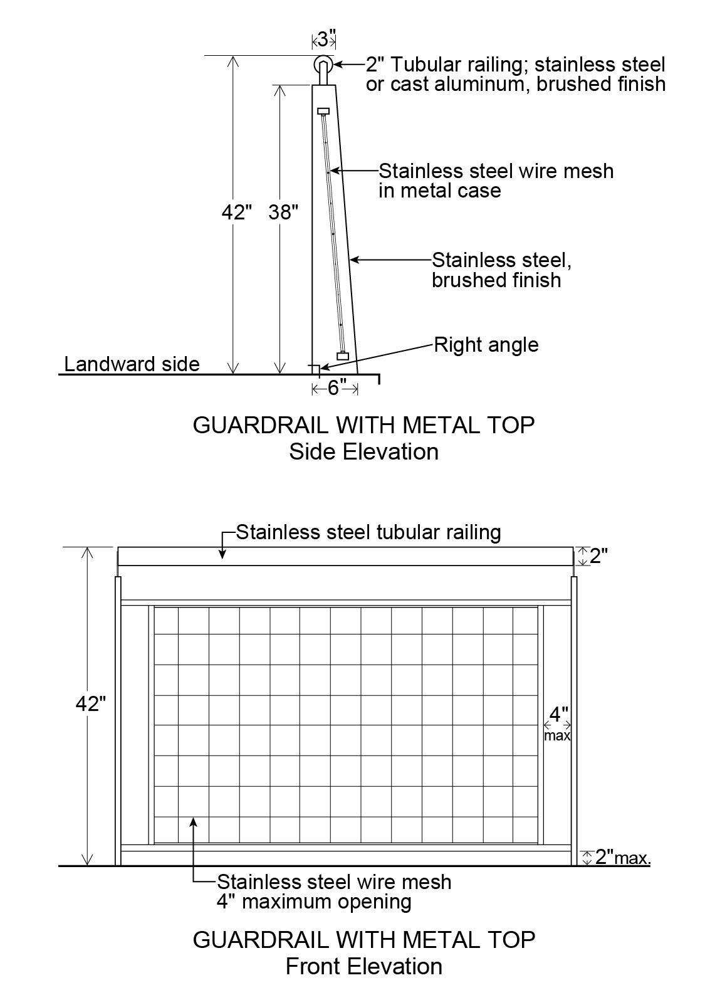
All guardrail components and hardware shall be in No. 316 Stainless Steel, passivated and bead blasted.
(2) Lighting
In addition to the illumination provisions of Section 62-653, the required lighting along any public access area shall comply with the Lightpost illustration in this Section.
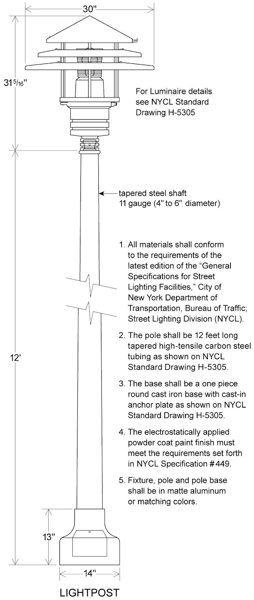
(3) Paving
In addition to the provisions of Section 62-656, the paving for the required clear path within the shore public walkway shall be gray. At least 50 percent of all other paved areas within the shore public walkway and supplemental public access areas shall be paved in the same color range.
(d) Special public access provisions by parcel
The provisions of Sections 62-52 (Applicability of Waterfront Public Access Area Requirements) and 62-60 (DESIGN REQUIREMENTS FOR WATERFRONT PUBLIC ACCESS AREAS) are modified at the following designated locations which are shown on Map BK-1b in paragraph (f) of this Section:
(1) Parcels 1 and 2
(i) Shore public walkway
In the event of any enlargement, extension or change of use within existing buildings or other structures, a shore public walkway shall occupy the entire area between the seaward edge of the zoning lot and the existing building or other structure but need not be wider than 40 feet. The shore public walkway shall have a minimum clear path of 10 feet. No seating or planting shall be required. If seating and planting are provided, they shall comply with the provisions of Sections 62-652 and 62-655, respectively. In addition to the lighting design requirements of paragraph (c)(3) of this Section, lighting fixtures may be mounted on existing buildings or other structures.
(ii) Supplemental public access area
The requirements for a supplemental public access area shall be waived.
(2) Parcels 3 and 4
An upland connection shall be provided between Commercial Street and the shore public walkway within a flexible location along the lot line between Parcels 3 and 4. Whichever parcel is developed first shall provide an upland connection along the lot line between the two parcels. The remaining parcel may include the width of the upland connection in the computation necessary to comply with the requirements of a visual corridor along the lot line between the two parcels, according to the provisions of paragraph (e)(1) of this Section. If both parcels are developed concurrently, then the requirements may be divided equally along the lot line between the parcels.
If, however, Parcel 4 is improved predominantly as a public access area prior to or concurrently with the development of Parcel 3, the upland connection requirement shall be waived. However, a public way shall be provided within an area bounded at its eastern edge by the shared lot line of Parcels 2 and 3, at its northern edge by the shoreline, at its western edge by a line 115 feet from the shared lot line of Parcels 2 and 3, and at its southern edge by the lot line along Commercial Street.
In addition, such public way shall have a minimum width of 15 feet, and shall comply with the provisions of Section 62-64 (Design Requirements for Upland Connections), as applicable for Type 2 upland connections. There shall be no more than two changes in direction over its entire length and no single turn shall be less than 90 degrees relative to the line of travel. Any change in direction with an angle of less than 135 degrees shall be posted with an entry sign and shall comply with the provisions of paragraph (b) of Section 62-654 (Signage), and shall also be accompanied by an arrow indicating the direction of travel towards the shore public walkway. At least 50 percent of the area of any walls bounding such public way shall be glazed. In addition, 24 linear feet of seating shall be provided within such public way and within 50 feet of its boundary with the shore public walkway and the street it connects to.
(3) Parcel 5a
(i) Upland connection
An upland connection shall be provided between Commercial Street and the shore public walkway within the flexible location zone indicated on Map BK-1b in paragraph (f) of this Section.
The eastern boundary of such flexible location zone shall be 110 feet from the shared lot line of Parcel 4 and its western boundary shall be 200 feet from the shared lot lines of Parcels 5b and 6.
(ii) Supplemental public access area
The supplemental public access area shall abut the shore public walkway continuously along its longest side, and shall also abut the required upland connection where it meets the shore public walkway. The upland connection may cut across the supplemental public access area provided that any resulting supplemental public access area shall be at least 5,000 square feet. In no event shall the supplemental public access area be deeper than 100 feet.
Alternatively, a portion of the required supplemental public access area that is at least 5,000 square feet may abut the shore public walkway continuously along the longest side provided that it also abuts a publicly accessible private drive connecting the shore public walkway to Commercial Street. Such publicly accessible private drive shall be improved to the standards of an upland connection as required by Section 62-64, but shall not be counted towards satisfying the required amount of waterfront public access area on the site.
(4) Parcel 5b
The portion of Block 2472, Lot 32, located within Parcel 5b shall constitute a zoning lot for the purpose of applying all waterfront public access area and visual corridor provisions of Sections 62-50 through 62-90 (WATERFRONT ACCESS PLANS), inclusive.
(5) Parcel 5c
(i) Upland connection
Two upland connections shall be provided between West Street and the shore public walkway, each one located within the prolongation of the street lines of Eagle Street and Green Street, respectively.
(ii) Supplemental public access area
Two supplemental public access areas shall be provided on Parcel 5c.
A supplemental public access area shall be bounded by the southern boundary of the required Green Street upland connection, the shore public walkway, the southern boundary of Parcel 5c and the northern prolongation of the eastern boundary of the shore public walkway required in Parcel 7.
The remaining required supplemental public access area shall be provided either on the pier or distributed evenly as a widening of the shore public walkway located between the Eagle Street and Green Street upland connections. If any supplemental public access area is located on the pier, one shade tree shall be required for each 1,000 square feet of supplemental public access area, but in no event shall more than four shade trees be required. A shading element may be substituted for the required shade trees at a rate of 450 square feet of shade element per tree.
The total lot area utilized in the calculation of required supplemental public access area for Parcel 5c, pursuant to Section 62-57, shall include the lot area within Parcel 5d.
(iii) Pier public access
Public access shall be provided on the Green Street pier pursuant to the requirements of Section 62-54 and of paragraph (a)(1) of this Section.
(6) Parcel 5e
The portion of Block 2472, Lot 32, located within Parcel 5e shall constitute a zoning lot for the purpose of applying all waterfront public access area and visual corridor provisions of Sections 62-50 through 62-90, inclusive.
(7) Parcel 7
(i) Shore public walkway
For a portion of the required shore public walkway, where the distance between the shoreline and the zoning lot line boundaries of Parcel 7 is less than 17 feet, such portion shall be improved entirely as circulation path.
(ii) Supplemental public access area
The requirement for a supplemental public access area on Parcel 7 is waived.
(8) Parcels 9, 10 and 11
(i) Supplemental public access area
For each parcel, the supplemental public access area requirements shall be provided to widen the shore public walkway, which will be evenly distributed along the entire length of such shore public walkway.
(9) Parcel 13
(i) Upland connection
An upland connection shall be provided between West Street and the shore public walkway located within the prolongation of the street lines of Milton Street.
(ii) Supplemental public access area
A supplemental public access area shall be bounded by the southern street line of Greenpoint Avenue, the shore public walkway and the northern boundary of the required Milton Street upland connection.
(10) Parcel 14
(i) Upland connection
An upland connection shall be provided between West Street and the shore public walkway. The southern boundary of such upland connection shall be defined by a line between the intersection of the prolongation of the southern street line of Calyer Street and the western street line of West Street, and a point on the easterly boundary of the shore public walkway 30 feet north of the northern street line of Quay Street.
(ii) Supplemental public access area
Two supplemental public access areas shall be provided. A supplemental public access area with a minimum of 9,000 square feet shall be provided between the prolongation of the northern street line of Calyer Street and the prolongation of the northern boundary of the required Calyer Street upland connection to widen the shore public walkway.
The remaining requirements for supplemental public access area shall be located in the area bounded by the southern boundary of the required Calyer Street upland connection, the shore public walkway and the southern boundary line of the parcel.
(11) Parcel 15
An upland connection shall be provided within the prolongation of the street lines of West Street, connecting Quay Street to Parcel 20.
(12) Parcels 20, 21 and 22
Parcels 20, 21 and 22 shall be designated as public parks as of May 11, 2005.
(13) Parcel 25
(i) Upland connection
An upland connection shall be provided between West Street and the shore public walkway located within the prolongation of the street lines of North 6th Street.
(ii) Supplemental public access area
Two supplemental public access areas shall be provided.
One supplemental public access area shall be provided along the prolongation of the southern street line of North 7th Street and the shore public walkway. Such public access area shall be a minimum of 3,000 square feet in area and shall have a minimum depth of 90 feet measured from the shore public walkway. A screening buffer shall be provided along the boundaries of the public access area and any private portion of the zoning lot, pursuant to Section 62-655. No other planting shall be required.
A minimum of one linear foot of seating shall be required for every 65 square feet of supplemental public access area. Four trees shall be required, at least two of which shall be shade trees.
The remaining required supplemental public access area shall be located either on the pier or shall abut the shore public walkway continuously along its longest side, and shall also abut the required upland connection where it meets the shore public walkway. At least 70 percent of the required supplemental public access area shall have a width to depth ratio of 2:1. If any supplemental public access area is located on the pier, one shade tree shall be required for each 1,000 square feet of supplemental public access area, but in no event shall more than four shade trees be required. A shading element may be substituted for the required shade trees at a rate of 450 square feet of shade element per tree.
(iii) Pier public access
Public access shall be provided on a pier located at the western terminus of North 6th Street pursuant to the requirements of Section 62-54 and of paragraph (a)(1) of this Section.
(14) Parcel 26
(i) Shore public walkway
The requirements of Section 62-53 (Requirements for Shore Public Walkways) shall apply, except that the minimum required width of the shore public walkway shall be reduced to 34 feet between North 5th Street and the northern boundary of the required upland connection at the prolongation of North 4th Street. The quantity of public access eliminated from the shore public walkway as a result of this width reduction shall be located in the triangle formed between the shore public walkway, the southern street line of the North 4th Street upland connection and the bulkhead line.
(ii) Upland connections
An upland connection shall be provided between Kent Avenue and the shore public walkway located within the prolongation of the street lines of North 4th Street. However, if the upland connection is provided within a private drive pursuant to Section 62-56, then a portion of the southern public access area beyond 15 feet from Kent Avenue may be located up to 15 feet outside the prolongation of the street lines of North 4th Street, provided that this public access area is not located entirely outside the prolongation of the street lines of North 4th Street at any point within 80 feet of Kent Avenue.
(15) Parcel 27
(i) Shore public walkway
In the event of an enlargement, extension or change of use within existing buildings or other structures, a shore public walkway shall occupy the entire area between the seaward edge and the existing building or other structure, but need not be wider than 40 feet.
Notwithstanding the requirements of paragraph (a) of Section 62-61 (General Provisions Applying to Waterfront Public Access Areas), the shore public walkway may be located within the building or other structure, and the obstructions permitted by Section 62-611, paragraphs (a) and (b), shall include any supporting structural elements of the building or other structure and its related appurtenances.
In addition, the shore public walkway shall have a minimum clear path of 12 feet. No seating, planting or buffer zone shall be required. If seating and planting are provided, they shall comply with the provisions of Sections 62-652 and 62-655, respectively. In addition to the lighting design requirements of paragraph (c)(3) of this Section, lighting fixtures may be mounted on existing buildings or other structures.
(ii) Supplemental public access area
The requirements for supplemental public access shall be waived.
(e) Special visual corridor provisions by parcel
The designated locations for visual corridors pursuant to this Plan are shown on Map BK-1c in paragraph (f) of this Section and shall be as follows:
(1) Parcels 3 and 4
A visual corridor shall be provided through Parcels 3 and 4 to the pierhead line within a flexible area along the common lot line.
Whichever parcel is developed later shall complete the required clearance to comply with the visual corridor requirements along the upland connection provided in accordance with the requirements of paragraph (d)(2)(i) of this Section. If the parcels are developed concurrently, then the requirements can be divided equally along the lot line between the parcels.
If, however, Parcel 4 is improved predominantly for a public access area(s) prior to or concurrently with the development of Parcel 3, and a visual corridor is provided in Parcel 4, then the requirements for a visual corridor on Parcel 3 shall be waived.
(2) Parcel 5a
A visual corridor shall be provided through Parcel 5a to the pierhead line within the flexible location zone indicated on Map BK-1c in paragraph (f) of this Section. The eastern boundary of such flexible area shall be 110 feet from the shared lot line of Parcel 4 and its western boundary shall be 200 feet from the shared lot line of Parcels 5b and 6.
(3) Parcel 5b
Two visual corridors shall be provided through Parcel 5b to the pierhead line as the prolongation of the street lines of West Street and Dupont Street, respectively.
(4) Parcel 5c
(i) Three visual corridors shall be provided through Parcel 5c to the pierhead line as the prolongation of the street lines of West Street, Eagle Street and Green Street.
(ii) The permitted obstructions on piers in Section 62-631, paragraph (b), shall be permitted obstructions along the visual corridor along Green Street.
(5) Parcel 13
Two visual corridors shall be provided through Parcel 13 to the pierhead line as the prolongation of the street lines of Milton Street and Oak Street, respectively.
(6) Parcel 14
A visual corridor shall be provided through Parcel 14 as the prolongation of the street lines of Oak Street.
(7) Parcel 15
A visual corridor shall be provided though Parcel 15 as the prolongation of the street lines of West Street.
(8) Parcel 25
A visual corridor shall be provided through Parcel 25 as the prolongation of the street lines of North 6th Street.
(f) Greenpoint-Williamsburg Waterfront Access Plan Maps
BK-1a: Parcel Designation (62-931f.1)
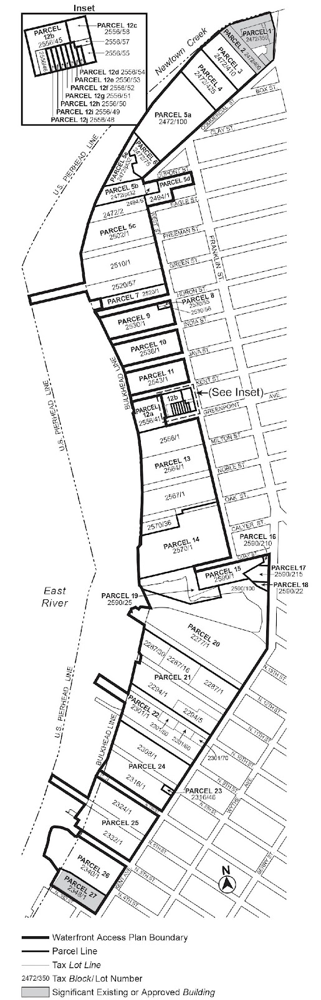
BK-1b: Public Access Elements (62-931f.2)
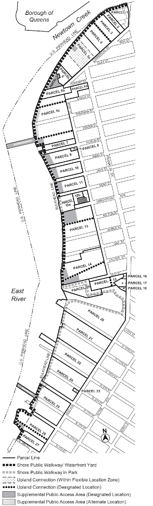
BK-1c: Designated Visual Corridors (62-931f.3)
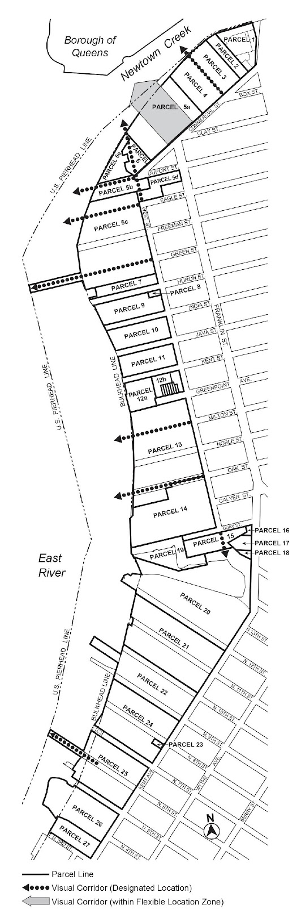
Official NYC Planning source